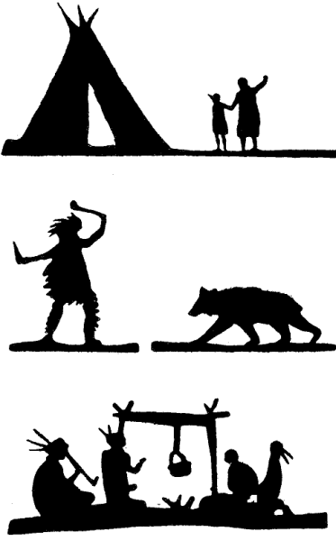
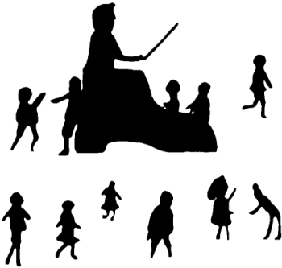
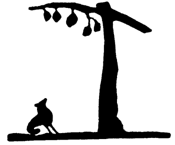
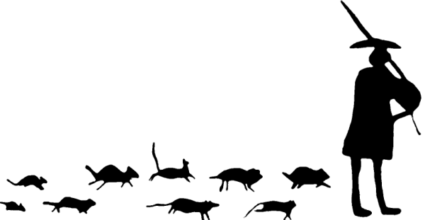
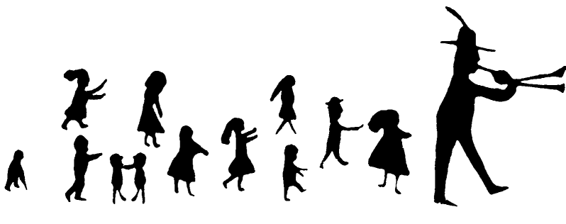

Project Gutenberg's How to Tell Stories to Children, by Sara Cone Bryant
This eBook is for the use of anyone anywhere at no cost and with
almost no restrictions whatsoever. You may copy it, give it away or
re-use it under the terms of the Project Gutenberg License included
with this eBook or online at www.gutenberg.org
Title: How to Tell Stories to Children
And Some Stories to Tell
Author: Sara Cone Bryant
Release Date: February 18, 2005 [EBook #474]
Language: English
Character set encoding: ISO-8859-1
*** START OF THIS PROJECT GUTENBERG EBOOK HOW TO TELL STORIES TO CHILDREN ***
Original Etext produced by Charles Keller. Merged with new
transcription by Michael Ciesielski, Melissa Er-Raqabi and the Online
Distributed Proofreading Team.
LONDON
GEORGE G. HARRAP & CO. LTD.
2 & 3 PORTSMOUTH STREET KINGSWAY W.C.
1918
Books for Story-Tellers
UNIFORM WITH THIS VOLUME
How to Tell Stories to Children
And Some Stories to Tell. By
SARA CONE BRYANT. Tenth Impression.
Stories to Tell to Children
With Fifty-Three Stories to
Tell. By SARA CONE BRYANT. Seventh Impression.
The Book of Stories for the Story-Teller
By FANNY COE. Fourth
Impression.
Songs and Stories for the Little Ones
By E. GORDON BROWNE, M.A. With
Melodies chosen and arranged by EVA BROWNE.
New and Enlarged
Edition.
Character Training
A Graded Series of Lessons in
Ethics, largely through Story-telling.
By E.L. CABOT and E. EYLES.
Third Impression. 384 pages.
Stories for the Story Hour
From January to December. By
ADA M. MARZIALS. Second Impression.
Stories for the History Hour
From Augustus to Rolf. By
NANNIE NIEMEYER. Second Impression.
Stories for the Bible Hour
By R. BRIMLEY JOHNSON,
B.A.
Nature Stories to Tell to Children
By H. WADDINGHAM
SEERS.
MISS MAUD LINDSAY'S POPULAR BOOKS
Mother Stories
With 16 Line
Illustrations.
More Mother Stories
With 20 Line
Illustrations.
THE RIVERSIDE PRESS LIMITED, EDINBURGH
GREAT BRITAIN
The stories which are given in the following pages are for the most part those which I have found to be best liked by the children to whom I have told these and others. I have tried to reproduce the form in which I actually tell them,—although that inevitably varies with every repetition,—feeling that it would be of greater value to another story-teller than a more closely literary form.
For the same reason, I have confined my statements of theory as to method, to those which reflect my own experience; my "rules" were drawn from introspection and retrospection, at the urging of others, long after the instinctive method they exemplify had become habitual.
These facts are the basis of my hope that the book may be of use to those who have much to do with children.
It would be impossible, in the space of any pardonable preface, to name the teachers, mothers, and librarians who have given me hints and helps during the past few years of story-telling. But I cannot let these pages go to press without recording my especial indebtedness to the few persons without whose interested aid the little book would scarcely have come to be. They are: Mrs Elizabeth Young Rutan, at whose generous instance I first enlarged my own field of entertaining story-telling to include hers, of educational narrative, and from whom I had many valuable suggestions at that time; Miss Ella L. Sweeney, assistant superintendent of schools, Providence, R.I., to whom I owe exceptional opportunities for investigation and experiment; Mrs Root, children's librarian of Providence Public Library, and Miss Alice M. Jordan, Boston Public Library, children's room, to whom I am indebted for much gracious and efficient aid.
My thanks are due also to Mr David Nutt for permission to make use of three stories from English Fairy Tales, by Mr Joseph Jacobs, and Raggylug, from Wild Animals I have Known, by Mr Ernest Thompson Seton; to Messrs Frederick A. Stokes Company for Five Little White Heads, by Walter Learned, and for Bird Thoughts; to Messrs Kegan Paul, Trench, Trübner & Co. Ltd. for The Burning of the Ricefields, from Gleanings in Buddha-Fields, by Mr Lafcadio Hearn; to Messrs H.R. Allenson Ltd. for three stories from The Golden Windows, by Miss Laura E. Richards; and to Mr Seumas McManus for Billy Beg and his Bull, from In Chimney Corners.
S.C.B.

HIAWATHA PICTURES.
THE PURPOSE OF STORY-TELLING IN SCHOOL
SELECTION OF STORIES TO TELL
ADAPTATION OF STORIES FOR TELLING
HOW TO TELL THE STORY
SOME SPECIFIC SCHOOLROOM USES
STORIES SELECTED AND ADAPTED FOR TELLING
ESPECIALLY
FOR KINDERGARTEN AND CLASS I.
ESPECIALLY
FOR CLASSES II. AND III.
ESPECIALLY FOR
CLASSES IV. AND V.
THE
CHILD-MIND; AND HOW TO SATISFY IT
Not long ago, I chanced to open a magazine at a story of Italian life which dealt with a curious popular custom. It told of the love of the people for the performances of a strangely clad, periodically appearing old man who was a professional story-teller. This old man repeated whole cycles of myth and serials of popular history, holding his audience-chamber in whatever corner of the open court or square he happened upon, and always surrounded by an eager crowd of listeners. So great was the respect in which the story-teller was held, that any interruption was likely to be resented with violence.
As I read of the absorbed silence and the changing expressions of the crowd about the old man, I was suddenly reminded of a company of people I had recently seen. They were gathered in one of the parlours of a women's college, and their serious young faces had, habitually, none of the childlike responsiveness of the Italian populace; they were suggestive, rather, of a daily experience which precluded over-much surprise or curiosity about anything. In the midst of the group stood a frail-looking woman with bright eyes. She was telling a story, a children's story, about a good and a bad little mouse.
She had been asked to do that thing, for a purpose, and she did it, therefore. But it was easy to see from the expressions of the listeners how trivial a thing it seemed to them.
That was at first. But presently the room grew quieter; and yet quieter. The faces relaxed into amused smiles, sobered in unconscious sympathy, finally broke in ripples of mirth. The story-teller had come to her own.
The memory of the college girls listening to the mouse-story brought other memories with it. Many a swift composite view of faces passed before my mental vision, faces with the child's look on them, yet not the faces of children. And of the occasions to which the faces belonged, those were most vivid which were earliest in my experience. For it was those early experiences which first made me realise the modern possibilities of the old, old art of telling stories.
It had become a part of my work, some years ago, to give English lectures on German literature. Many of the members of my class were unable to read in the original the works with which I dealt, and as these were modern works it was rarely possible to obtain translations. For this reason, I gradually formed the habit of telling the story of the drama or novel in question before passing to a detailed consideration of it. I enjoyed this part of the lesson exceedingly, but it was some time before I realised how much the larger part of the lesson it had become to the class. They used—and they were mature women—to wait for the story as if it were a sugarplum and they, children; and to grieve openly if it were omitted. Substitution of reading from a translation was greeted with precisely the same abatement of eagerness that a child shows when he has asked you to tell a story, and you offer, instead, to "read one from the pretty book." And so general and constant were the tokens of enjoyment that there could ultimately be no doubt of the power which the mere story-telling exerted.
The attitude of the grown-up listeners did but illustrate the general difference between the effect of telling a story and of reading one. Everyone who knows children well has felt the difference. With few exceptions, children listen twice as eagerly to a story told as to one read, and even a "recitation" or a so-called "reading" has not the charm for them that the person wields who can "tell a story." And there are sound reasons for their preference.
The great difference, including lesser ones, between telling and reading is that the teller is free; the reader is bound. The book in hand, or the wording of it in mind, binds the reader. The story-teller is bound by nothing; he stands or sits, free to watch his audience, free to follow or lead every changing mood, free to use body, eyes, voice, as aids in expression. Even his mind is unbound, because he lets the story come in the words of the moment, being so full of what he has to say. For this reason, a story told is more spontaneous than one read, however well read. And, consequently, the connection with the audience is closer, more electric, than is possible when the book or its wording intervenes.
Beyond this advantage, is the added charm of the personal element in story-telling. When you make a story your own and tell it, the listener gets the story, plus your appreciation of it. It comes to him filtered through your own enjoyment. That is what makes the funny story thrice funnier on the lips of a jolly raconteur than in the pages of a memoir. It is the filter of personality. Everybody has something of the curiosity of the primitive man concerning his neighbour; what another has in his own person felt and done has an especial hold on each one of us. The most cultured of audiences will listen to the personal reminiscences of an explorer with a different tingle of interest from that which it feels for a scientific lecture on the results of the exploration. The longing for the personal in experience is a very human longing. And this instinct or longing is especially strong in children. It finds expression in their delight in tales of what father or mother did when they were little, of what happened to grandmother when she went on a journey, and so on, but it also extends to stories which are not in themselves personal: which take their personal savour merely from the fact that they flow from the lips in spontaneous, homely phrases, with an appreciative gusto which suggests participation.
The greater ease in holding the attention of children is, for teachers, a sufficient practical reason for telling stories rather than reading them. It is incomparably easier to make the necessary exertion of "magnetism," or whatever it may be called, when nothing else distracts the attention. One's eyes meet the children's gaze naturally and constantly; one's expression responds to and initiates theirs without effort; the connection is immediate. For the ease of the teacher, then, no less than for the joy of the children, may the art of story-telling be urged as pre-eminent over the art of reading.
It is a very old, a very beautiful art. Merely to think of it carries one's imaginary vision to scenes of glorious and touching antiquity. The tellers of the stories of which Homer's Iliad was compounded; the transmitters of the legend and history which make up the Gesta Romanorum; the travelling raconteurs whose brief heroic tales are woven into our own national epic; the grannies of age-old tradition whose stories are parts of Celtic folk-lore, of Germanic myth, of Asiatic wonder-tales,—these are but younger brothers and sisters to the generations of story-tellers whose inventions are but vaguely outlined in resultant forms of ancient literatures, and the names of whose tribes are no longer even guessed. There was a time when story-telling was the chiefest of the arts of entertainment; kings and warriors could ask for nothing better; serfs and children were satisfied with nothing less. In all times there have been occasional revivals of this pastime, and in no time has the art died out in the simple human realms of which mothers are queens. But perhaps never, since the really old days, has story-telling so nearly reached a recognised level of dignity as a legitimate and general art of entertainment as now.
Its present popularity seems in a way to be an outgrowth of the recognition of its educational value which was given impetus by the German pedagogues of Froebel's school. That recognition has, at all events, been a noticeable factor in educational conferences of late. The function of the story is no longer considered solely in the light of its place in the kindergarten; it is being sought in the first, the second, and indeed in every standard where the children are still children. Sometimes the demand for stories is made solely in the interests of literary culture, sometimes in far ampler and vaguer relations, ranging from inculcation of scientific fact to admonition of moral theory; but whatever the reason given, the conclusion is the same: tell the children stories.
The average teacher has yielded to the pressure, at least in theory. Cheerfully, as she has already accepted so many modifications of old methods by "new thought," she accepts the idea of instilling mental and moral desiderata into the receptive pupil, viâ the charming tale. But, confronted with the concrete problem of what desideratum by which tale, and how, the average teacher sometimes finds her cheerfulness displaced by a sense of inadequacy to the situation.
People who have always told stories to children, who do not know when they began or how they do it; whose heads are stocked with the accretions of years of fairyland-dwelling and nonsense-sharing,—these cannot understand the perplexity of one to whom the gift and the opportunity have not "come natural." But there are many who can understand it, personally and all too well. To these, the teachers who have not a knack for story-telling, who feel as shy as their own youngest scholar at the thought of it, who do not know where the good stories are, or which ones are easy to tell, it is my earnest hope that the following pages will bring something definite and practical in the way of suggestion and reference.
Let us first consider together the primary matter of the aim in educational story-telling. On our conception of this must depend very largely all decisions as to choice and method; and nothing in the whole field of discussion is more vital than a just and sensible notion of this first point. What shall we attempt to accomplish by stories in the schoolroom? What can we reasonably expect to accomplish? And what, of this, is best accomplished by this means and no other?
These are questions which become the more interesting and practical because the recent access of enthusiasm for stories in education has led many people to claim very wide and very vaguely outlined territory for their possession, and often to lay heaviest stress on their least essential functions. The most important instance of this is the fervour with which many compilers of stories for school use have directed their efforts solely toward illustration of natural phenomena. Geology, zoology, botany, and even physics are taught by means of more or less happily constructed narratives based on the simpler facts of these sciences. Kindergarten teachers are familiar with such narratives: the little stories of chrysalis-breaking, flower-growth, and the like. Now this is a perfectly proper and practicable aim, but it is not a primary one. Others, to which at best this is but secondary, should have first place and receive greatest attention.
What is a story, essentially? Is it a text-book of science, an appendix to the geography, an introduction to the primer of history? Of course it is not. A story is essentially and primarily a work of art, and its chief function must be sought in the line of the uses of art. Just as the drama is capable of secondary uses, yet fails abjectly to realise its purpose when those are substituted for its real significance as a work of art, so does the story lend itself to subsidiary purposes, but claims first and most strongly to be recognised in its real significance as a work of art. Since the drama deals with life in all its parts, it can exemplify sociological theory, it can illustrate economic principle, it can even picture politics; but the drama which does these things only, has no breath of its real life in its being, and dies when the wind of popular tendency veers from its direction. So, you can teach a child interesting facts about bees and butterflies by telling him certain stories, and you can open his eyes to colours and processes in nature by telling certain others; but unless you do something more than that and before that, you are as one who should use the Venus of Milo for a demonstration in anatomy.
The message of the story is the message of beauty, as effective as that message in marble or paint. Its part in the economy of life is to give joy. And the purpose and working of the joy is found in that quickening of the spirit which answers every perception of the truly beautiful in the arts of man. To give joy; in and through the joy to stir and feed the life of the spirit: is not this the legitimate function of the story in education?
Because I believe it to be such, not because I ignore the value of other uses, I venture to push aside all aims which seem secondary to this for later mention under specific heads. Here in the beginning of our consideration I wish to emphasise this element alone. A story is a work of art. Its greatest use to the child is in the everlasting appeal of beauty by which the soul of man is constantly pricked to new hungers, quickened to new perceptions, and so given desire to grow.
The obvious practical bearing of this is that story-telling is first of all an art of entertainment; like the stage, its immediate purpose is the pleasure of the hearer,—his pleasure, not his instruction, first.
Now the story-teller who has given the listening children such pleasure as I mean may or may not have added a fact to the content of their minds; she has inevitably added something to the vital powers of their souls. She has given a wholesome exercise to the emotional muscles of the spirit, has opened up new windows to the imagination, and added some line or colour to the ideal of life and art which is always taking form in the heart of a child. She has, in short, accomplished the one greatest aim of story-telling,—to enlarge and enrich the child's spiritual experience, and stimulate healthy reaction upon it.
Of course this result cannot be seen and proved as easily and early as can the apprehension of a fact. The most one can hope to recognise is its promise, and this is found in the tokens of that genuine pleasure which is itself the means of accomplishment. It is, then, the signs of right pleasure which the story-teller must look to for her guide, and which it must be her immediate aim to evoke. As for the recognition of the signs,—no one who has ever seen the delight of a real child over a real story can fail to know the signals when given, or flatter himself into belief in them when absent.
Intimately connected with the enjoyment given are two very practically beneficial results which the story-teller may hope to obtain, and at least one of which will be a kind of reward to herself. The first is a relaxation of the tense schoolroom atmosphere, valuable for its refreshing recreative power. The second result, or aim, is not so obvious, but is even more desirable; it is this: story-telling is at once one of the simplest and quickest ways of establishing a happy relation between teacher and children, and one of the most effective methods of forming the habit of fixed attention in the latter.
If you have never seen an indifferent child aroused or a hostile one conquered to affection by a beguiling tale, you can hardly appreciate the truth of the first statement; but nothing is more familiar in the story-teller's experience. An amusing, but—to me—touching experience recently reaffirmed in my mind this power of the story to establish friendly relations.
My three-year-old niece, who had not seen me since her babyhood, being told that Aunt Sara was coming to visit her, somehow confused the expected guest with a more familiar aunt, my sister. At sight of me, her rush of welcome relapsed into a puzzled and hurt withdrawal, which yielded to no explanations or proffers of affection. All the first day she followed me about at a wistful distance, watching me as if I might at any moment turn into the well-known and beloved relative I ought to have been. Even by undressing time I had not progressed far enough to be allowed intimate approach to small sacred nightgowns and diminutive shirts. The next morning, when I opened the door of the nursery where her maid was brushing her hair, the same dignity radiated from the little round figure perched on its high chair, the same almost hostile shyness gazed at me from the great expressive eyes. Obviously, it was time for something to be done.
Disregarding my lack of invitation, I drew up a stool, and seating myself opposite the small unbending person, began in a conversational murmur: "M—m, I guess those are tingly-tanglies up there in that curl Lottie's combing; did you ever hear about the tingly-tanglies? They live in little girls' hair, and they aren't any bigger than that, and when anybody tries to comb the hair they curl both weeny legs round, so, and hold on tight with both weeny hands, so, and won't let go!" As I paused, my niece made a queer little sound indicative of query battling with reserve. I pursued the subject: "They like best to live right over a little girl's ear, or down in her neck, because it is easier to hang on, there; tingly-tanglies are very smart, indeed."
"What's ti-ly-ta-lies?" asked a curious, guttural little voice.
I explained the nature and genesis of tingly-tanglies, as revealed to me some decades before by my inventive mother, and proceeded to develop their simple adventures. When next I paused the small guttural voice demanded, "Say more," and I joyously obeyed.
When the curls were all curled and the last little button buttoned, my baby niece climbed hastily down from her chair, and deliberately up into my lap. With a caress rare to her habit she spoke my name, slowly and tentatively, "An-ty Sai-ry?" Then, in an assured tone, "Anty Sairy, I love you so much I don't know what to do!" And, presently, tucking a confiding hand in mine to lead me to breakfast, she explained sweetly, "I didn' know you when you comed las' night, but now I know you all th' time!"
"Oh, blessed tale," thought I, "so easy a passport to a confidence so desired, so complete!" Never had the witchery of the story to the ear of a child come more closely home to me. But the fact of the witchery was no new experience. The surrender of the natural child to the story-teller is as absolute and invariable as that of a devotee to the priest of his own sect.
This power is especially valuable in the case of children whose natural shyness has been augmented by rough environment or by the strangeness of foreign habit. And with such children even more than with others it is also true that the story is a simple and effective means of forming the habit of concentration, of fixed attention; any teacher who deals with this class of children knows the difficulty of doing this fundamental and indispensable thing, and the value of any practical aid in doing it.
More than one instance of the power of story-telling to develop attentiveness comes to my mind, but the most prominent in memory is a rather recent incident, in which the actors were boys and girls far past the child-stage of docility.
I had been asked to tell stories to about sixty boys and girls of a club; the president warned me in her invitation that the children were exceptionally undisciplined, but my previous experiences with similar gatherings led me to interpret her words with a moderation which left me totally unready for the reality. When I faced my audience, I saw a squirming jumble of faces, backs of heads, and the various members of many small bodies,—not a person in the room was paying the slightest attention to me; the president's introduction could scarcely be said to succeed in interrupting the interchange of social amenities which was in progress, and which looked delusively like a free fight. I came as near stage fright in the first minutes of that occasion as it is comfortable to be, and if it had not been impossible to run away I think I should not have remained. But I began, with as funny a tale as I knew, following the safe plan of not speaking very loudly, and aiming my effort at the nearest children. As I went on, a very few faces held intelligently to mine; the majority answered only fitfully; and not a few of my hearers conversed with their neighbours as if I were non-existent. The sense of bafflement, the futile effort, forced the perspiration to my hands and face—yet something in the faces before me told me that it was no ill-will that fought against me; it was the apathy of minds without the power or habit of concentration, unable to follow a sequence of ideas any distance, and rendered more restless by bodies which were probably uncomfortable, certainly undisciplined.
The first story took ten minutes. When I began a second, a very short one, the initial work had to be done all over again, for the slight comparative quiet I had won had been totally lost in the resulting manifestation of approval.
At the end of the second story, the room was really orderly to the superficial view, but where I stood I could see the small boy who deliberately made a hideous face at me each time my eyes met his, the two girls who talked with their backs turned, the squirms of a figure here and there. It seemed so disheartening a record of failure that I hesitated much to yield to the uproarious request for a third story, but finally I did begin again, on a very long story which for its own sake I wanted them to hear.
This time the little audience settled to attention almost at the opening words. After about five minutes I was suddenly conscious of a sense of ease and relief, a familiar restful feeling in the atmosphere; and then, at last, I knew that my audience was "with me," that they and I were interacting without obstruction. Absolutely quiet, entirely unconscious of themselves, the boys and girls were responding to every turn of the narrative as easily and readily as any group of story-bred kindergarten children. From then on we had a good time together.
The process which took place in that small audience was a condensed example of what one may expect in habitual story-telling to a group of children. Once having had the attention chained by crude force of interest, the children begin to expect something interesting from the teacher, and to wait for it. And having been led step by step from one grade of a logical sequence to another, their minds—at first beguiled by the fascination of the steps—glide into the habit of following any logical sequence. My club formed its habit, as far as I was concerned, all in one session; the ordinary demands of school procedure lengthen the process, but the result is equally sure. By the end of a week in which the children have listened happily to a story every day, the habit of listening and deducing has been formed, and the expectation of pleasantness is connected with the opening of the teacher's lips.
These two benefits are well worth the trouble they cost, and for these two, at least, any teacher who tells a story well may confidently look—the quick gaining of a confidential relation with the children, and the gradual development of concentration and interested attention in them.
These are direct and somewhat clearly discernible results, comfortably placed in a near future. There are other aims, reaching on into the far, slow modes of psychological growth, which must equally determine the choice of the story-teller's material and inform the spirit of her work. These other, less immediately attainable ends, I wish now to consider in relation to the different types of story by which they are severally best served.
First, unbidden claimant of attention, comes
THE FAIRY STORY
No one can think of a child and a story, without thinking of the fairy tale. Is this, as some would have us believe, a bad habit of an ignorant old world? Or can the Fairy Tale justify her popularity with truly edifying and educational results? Is she a proper person to introduce here, and what are her titles to merit?
Oh dear, yes! Dame Fairy Tale comes bearing a magic wand in her wrinkled old fingers, with one wave of which she summons up that very spirit of joy which it is our chief effort to invoke. She raps smartly on the door, and open sesames echo to every imagination. Her red-heeled shoes twinkle down an endless lane of adventures, and every real child's footsteps quicken after. She is the natural, own great-grandmother of every child in the world, and her pocketfuls of treasures are his by right of inheritance. Shut her out, and you truly rob the children of something which is theirs; something marking their constant kinship with the race-children of the past, and adapted to their needs as it was to those of the generation of long ago! If there were no other criterion at all, it would be enough that the children love the fairy tale; we give them fairy stories, first, because they like them. But that by no means lessens the importance of the fact that fairy tales are also good for them.
How good? In various ways. First, perhaps, in their supreme power of presenting truth through the guise of images. This is the way the race-child took toward wisdom, and it is the way each child's individual instinct takes, after him. Elemental truths of moral law and general types of human experience are presented in the fairy tale, in the poetry of their images, and although the child is aware only of the image at the time, the truth enters with it and becomes a part of his individual experience, to be recognised in its relations at a later stage. Every truth and type so given broadens and deepens the capacity of the child's inner life, and adds an element to the store from which he draws his moral inferences.
The most familiar instance of a moral truth conveyed under a fairy-story image is probably the story of the pure-hearted and loving girl whose lips were touched with the wonderful power of dropping jewels with every spoken word, while her stepsister, whose heart was infested with malice and evil desires, let ugly toads fall from her mouth whenever she spoke. I mention the old tale because there is probably no one of my readers who has not heard it in childhood, and because there are undoubtedly many to whose mind it has often recurred in later life as a sadly perfect presentment of the fact that "out of the abundance of the heart the mouth speaketh." That story has entered into the forming consciousness of many of us, with its implications of the inevitable result of visible evil from evil in the heart, and its revelation of the loathsomeness of evil itself.
And no less truly than this story has served to many as an embodiment of moral law has another household tale stood for a type of common experience. How much the poorer should we be, mentally, without our early prophecy of the "ugly ducklings" we are to meet later in life!—those awkward offspring of our little human duckyard who are mostly well kicked and buffeted about, for that very length of limb and breadth of back which needs must be, to support swan's wings. The story of the ugly duckling is much truer than many a bald statement of fact. The English-speaking world bears witness to its verity in constant use of the title as an identifying phrase: "It is the old story of the ugly duckling," we say, or "He has turned out a real ugly duckling." And we know that our hearers understand the whole situation.
The consideration of such familiar types and expressions as that of the ugly duckling suggests immediately another good reason for giving the child his due of fairy lore. The reason is that to omit it is to deprive him of one important element in the full appreciation of mature literature. If one thinks of it, one sees that nearly all adult literature is made by people who, in their beginnings, were bred on the wonder tale. Whether he will or no, the grown-up author must incorporate into his work the tendencies, memories, kinds of feeling which were his in childhood. The literature of maturity is, naturally, permeated by the influence of the literature of childhood. Sometimes it is apparent merely in the use of a name, as suggestive of certain kinds of experience; such are the recurrences of reference to the Cinderella story. Sometimes it is an allusion which has its strength in long association of certain qualities with certain characters in fairydom—like the slyness of Brother Fox, and the cruelty of Brother Wolf. Sometimes the association of ideas lies below the surface, drawing from the hidden wells of poetic illusion which are sunk in childhood. The man or woman whose infancy was nourished exclusively on tales adapted from science-made-easy, or from biographies of good men and great, must remain blind to these beauties of literature. He may look up the allusion, or identify the reference, but when that is done he is but richer by a fact or two; there is no remembered thrill in it for him, no savour in his memory, no suggestion to his imagination; and these are precisely the things which really count. Leaving out the fairy element is a loss to literary culture much as would be the omission of the Bible or of Shakespeare. Just as all adult literature is permeated by the influence of these, familiar in youth, so in less degree is it transfused with the subtle reminiscences of childhood's commerce with the wonder world.
To turn now from the inner to the outer aspects of the old-time tale is to meet another cause of its value to children. This is the value of its style. Simplicity, directness, and virility characterise the classic fairy tales and the most memorable relics of folklore. And these are three of the very qualities which are most seriously lacking in much of the new writing for children, and which are always necessary elements in the culture of taste. Fairy stories are not all well told, but the best fairy stories are supremely well told. And most folk-tales have a movement, a sweep, and an unaffectedness which make them splendid foundations for taste in style.
For this, and for poetic presentation of truths in easily assimilated form, and because it gives joyous stimulus to the imagination, and is necessary to full appreciation of adult literature, we may freely use the wonder tale.
Closely related to, sometimes identical with, the fairy tale is the old, old source of children's love and laughter,
THE NONSENSE TALE
Under this head I wish to include all the merely funny tales of childhood, embracing the cumulative stories like that of the old woman and the pig which would not go over the stile. They all have a specific use and benefit, and are worth the repetition children demand for them. Their value lies, of course, in the tonic and relaxing properties of humour. Nowhere is that property more welcome or needed than in the schoolroom. It does us all good to laugh, if there is no sneer nor smirch in the laugh; fun sets the blood flowing more freely in the veins, and loosens the strained cords of feeling and thought; the delicious shock of surprise at every "funny spot" is a kind of electric treatment for the nerves. But it especially does us good to laugh when we are children. Every little body is released from the conscious control school imposes on it, and huddles into restful comfort or responds gaily to the joke.
More than this, humour teaches children, as it does their grown-up brethren, some of the facts and proportions of life. What keener teacher is there than the kindly satire? "What more penetrating and suggestive than the humour of exaggerated statement of familiar tendency? Is there one of us who has not laughed himself out of some absurd complexity of over-anxiety with a sudden recollection of "clever Alice" and her fate? In our household clever Alice is an old habituée, and her timely arrival has saved many a situation which was twining itself about more "ifs" than it could comfortably support. The wisdom which lies behind true humour is found in the nonsense tale of infancy as truly as in mature humour, but in its own kind and degree. "Just for fun" is the first reason for the humorous story; the wisdom in the fun is the second.
And now we come to
THE NATURE STORY
No other type of fiction is more familiar to the teacher, and probably no other kind is the source of so much uncertainty of feeling. The nature story is much used, as I have noticed above, to illustrate or to teach the habits of animals and the laws of plant-growth; to stimulate scientific interest as well as to increase culture in scientific fact. This is an entirely legitimate object. In view of its present preponderance, it is certainly a pity, however, that so few stories are available, the accuracy of which, from this point of view, can be vouched for. The carefully prepared book of to-day is refuted and scoffed at to-morrow. The teacher who wishes to use story-telling chiefly as an element in nature study must at least limit herself to a small amount of absolutely unquestioned material, or else subject every new story to the judgment of an authority in the line dealt with. This is not easy for the teacher at a distance from the great libraries, and for those who have access to well-equipped libraries it is a matter of time and thought.
It does not so greatly trouble the teacher who uses the nature story as a story, rather than as a text-book, for she will not be so keenly attracted toward the books prepared with a didactic purpose. She will find a good gift for the child in nature stories which are stories, over and above any stimulus to his curiosity about fact. That good gift is a certain possession of all good fiction.
One of the best things good fiction does for any of us is to broaden our comprehension of other lots than our own. The average man or woman has little opportunity actually to live more than one kind of life. The chances of birth, occupation, family ties, determine for most of us a line of experience not very inclusive and but little varied; and this is a natural barrier to our complete understanding of others, whose life-line is set at a different angle. It is not possible wholly to sympathise with emotions engendered by experience which one has never had. Yet we all long to be broad in sympathy and inclusive in appreciation; we long, greatly, to know the experience of others. This yearning is probably one of the good but misconceived appetites so injudiciously fed by the gossip of the daily press. There is a hope, in the reader, of getting for the moment into the lives of people who move in wholly different sets of circumstances. But the relation of dry facts in newspapers, however tinged with journalistic colour, helps very little to enter such other life. The entrance has to be by the door of the imagination, and the journalist is rarely able to open it for us. But there is a genius who can open it. The author who can write fiction of the right sort can do it; his is the gift of seeing inner realities, and of showing them to those who cannot see them for themselves. Sharing the imaginative vision of the story-writer, we can truly follow out many other roads of life than our own. The girl on a lone country farm is made to understand how a girl in a city sweating-den feels and lives; the London exquisite realises the life of a Californian ranchman; royalty and tenement dwellers become acquainted, through the power of the imagination working on experience shown in the light of a human basis common to both. Fiction supplies an element of culture,—that of the sympathies, which is invaluable. And the beginnings of this culture, this widening and clearing of the avenues of human sympathy, are especially easily made with children in the nature story.
When you begin, "There was once a little furry rabbit,"[1] the child's curiosity is awakened by the very fact that the rabbit is not a child, but something of a different species altogether. "Now for something new and adventuresome," says his expectation, "we are starting off into a foreign world." He listens wide-eyed, while you say, "and he lived in a warm, cosy nest, down under the long grass with his mother"—how delightful, to live in a place like that; so different from little boys' homes!—"his name was Raggylug, and his mother's name was Molly Cottontail. And every morning, when Molly Cottontail went out to get their food, she said to Raggylug, 'Now, Raggylug, remember you are only a baby rabbit, and don't move from the nest. No matter what you hear, no matter what you see, don't you move!'"—all this is different still, yet it is familiar, too; it appears that rabbits are rather like folks. So the tale proceeds, and the little furry rabbit passes through experiences strange to little boys, yet very like little boys' adventures in some respects; he is frightened by a snake, comforted by his mammy, and taken to a new house, under the long grass a long way off. These are all situations to which the child has a key. There is just enough of strangeness to entice, just enough of the familiar to relieve any strain. When the child has lived through the day's happenings with Raggylug, the latter has begun to seem veritably a little brother of the grass to him. And because he has entered imaginatively into the feelings and fate of a creature different from himself, he has taken his first step out into the wide world of the lives of others.
It may be a recognition of this factor and its value which has led so many writers of nature stories into the error of over-humanising their four-footed or feathered heroes and heroines. The exaggeration is unnecessary, for there is enough community of lot suggested in the sternest scientific record to constitute a natural basis for sympathy on the part of the human animal. Without any falsity of presentation whatever, the nature story may be counted on as a help in the beginnings of culture of the sympathies. It is not, of course, a help confined to the powers of the nature story; all types of story share in some degree the powers of each. But each has some especial virtue in dominant degree, and the nature story is, on this ground, identified with the thought given.
The nature story shares its influence especially with
THE HISTORICAL STORY
As the one widens the circle of connection with other kinds of life, the other deepens the sense of relation to past lives; it gives the sense of background, of the close and endless connection of generation with generation. A good historical story vitalises the conception of past events and brings their characters into relation with the present. This is especially true of stories of things and persons in the history of our own race. They foster race-consciousness, the feeling of kinship and community of blood. It is this property which makes the historical story so good an agent for furthering a proper national pride in children. Genuine patriotism, neither arrogant nor melodramatic, is so generally recognised as having its roots in early training that I need not dwell on this possibility, further than to note its connection with the instinct of hero-worship which is quick in the healthy child. Let us feed that hunger for the heroic which gnaws at the imagination of every boy and of more girls than is generally admitted. There have been heroes in plenty in the world's records,—heroes of action, of endurance, of decision, of faith. Biographical history is full of them. And the deeds of these heroes are every one a story. We tell these stories, both to bring the great past into its due relation with the living present, and to arouse that generous admiration and desire for emulation which is the source of so much inspiration in childhood. When these stories are tales of the doings and happenings of our own heroes, the strong men and women whose lives are a part of our own country's history, they serve the double demands of hero-worship and patriotism. Stories of wise and honest statesmanship, of struggle with primitive conditions, of generous love and sacrifice, and—in some measure—of physical courage, form a subtle and powerful influence for pride in one's people, the intimate sense of kinship with one's own nation, and the desire to serve it in one's own time.
It is not particularly useful to tell batches of unrelated anecdote. It is much more profitable to take up the story of a period and connect it with a group of interesting persons whose lives affected it or were affected by it, telling the stories of their lives, or of the events in which they were concerned, as "true stories." These biographical stories must, usually, be adapted for use. But besides these there is a certain number of pure stories—works of art—which already exist for us, and which illuminate facts and epochs almost without need of sidelights. Such may stand by themselves, or be used with only enough explanation to give background. Probably the best story of this kind known to lovers of modern literature is Daudet's famous La Dernière Classe.[1]
[1] See The Last Lesson, page 238.
The historical story, to recapitulate, gives a sense of the reality and humanness of past events, is a valuable aid in patriotic training, and stirs the desire of emulating goodness and wisdom.
There is one picture which I can always review, in my own collection of past scenes, though many a more highly coloured one has been irrevocably curtained by the folds of forgetfulness. It is the picture of a little girl, standing by an old-fashioned marble-topped dressing-table in a pink, sunny room. I can never see the little girl's face, because, somehow, I am always looking down at her short skirts or twisting my head round against the hand which patiently combs her stubborn curls. But I can see the brushes and combs on the marble table quite plainly, and the pinker streaks of sun on the pink walls. And I can hear. I can hear a low, wonder-working voice which goes smoothly on and on, as the fingers run up the little girl's locks or stroke the hair into place on her forehead. The voice says, "And little Goldilocks came to a little bit of a house. And she opened the door and went in. It was the house where three Bears lived; there was a great Bear, a little Bear, and a middle-sized Bear; and they had gone out for a walk. Goldilocks went in, and she saw"—the little girl is very still; she would not disturb that story by so much as a loud breath; but presently the comb comes to a tangle, pulls,—and the little girl begins to squirm. Instantly the voice becomes impressive, mysterious: "she went up to the table, and there were three plates of porridge. She tasted the first one"—the little girl swallows the breath she was going to whimper with, and waits—"and it was too hot! She tasted the next one, and that was too hot. Then she tasted the little bit of a plate, and that—was—just—right!"
How I remember the delightful sense of achievement which stole into the little girl's veins when the voice behind her said "just right." I think she always chuckled a little, and hugged her stomach. So the story progressed, and the little girl got through her toilet without crying, owing to the wonder-working voice and its marvellous adaptation of climaxes to emergencies. Nine times out of ten, it was the story of The Three Bears she demanded when, with the appearance of brush and comb, the voice asked, "Which story shall mother tell?"
It was a memory of the little girl in the pink room which made it easy for me to understand some other children's preferences when I recently had occasion to inquire about them. By asking many individual children which story of all they had heard they liked best, by taking votes on the best story of a series, after telling it, and by getting some obliging teachers to put similar questions to their pupils, I found three prime favourites common to a great many children of about the kindergarten age. They were The Three Bears, Three Little Pigs, and The Little Pig that wouldn't go over the Stile.
Some of the teachers were genuinely disturbed because the few stories they had introduced merely for amusement had taken so pre-eminent a place in the children's affection over those which had been given seriously. It was of no use, however, to suggest substitutes. The children knew definitely what they liked, and though they accepted the recapitulation of scientific and moral stories with polite approbation, they returned to the original answer at a repetition of the question.
Inasmuch as the slightest of the things we hope to do for children by means of stories is quite impossible unless the children enjoy the stories, it may be worth our while to consider seriously these three which they surely do enjoy, to see what common qualities are in them, explanatory of their popularity, by which we may test the probable success of other stories we wish to tell.
Here they are,—three prime favourites of proved standing.
THE STORY OF THE THREE LITTLE PIGS[1]
[1] Adapted from Joseph Jacobs's English Fairy Tales (David Nutt, 57-59 Long Acre, W.C. 6s.).
Once upon a time there were three little pigs, who went from home to seek their fortune. The first that went off met a man with a bundle of straw, and said to him:—
"Good man, give me that straw to build me a house."
The man gave the straw, and the little pig built his house with it. Presently came along a wolf, and knocked at the door, and said:—
"Little pig, little pig, let me come in."
But the pig answered:—
"No, no, by the hair of my chiny-chin-chin."
So the wolf said:—
"Then I'll huff, and I'll puff, and I'll blow your house in."
So he huffed, and he puffed, and he blew his house in, and ate up the little pig.
The second little pig met a man with a bundle of furze, and said:—
"Good man, give me that furze to build me a house."
The man gave the furze, and the pig built his house. Then once more came the wolf, and said:
"Little pig, little pig, let me come in."
"No, no, by the hair of my chiny-chin-chin."
"Then I'll puff, and I'll huff, and I'll blow your house in."
So he huffed, and he puffed, and he puffed and he huffed, and at last he blew the house in, and ate up the little pig.
The third little pig met a man with a load of bricks, and said:—
"Good man, give me those bricks to build me a house with."
The man gave the bricks, and he built his house with them. Again the wolf came, and said:—
"Little pig, little pig, let me come in."
"No, no, by the hair of my chiny-chin-chin."
"Then I'll huff, and I'll puff, and I'll blow your house in."
So he huffed, and he puffed, and he huffed, and he puffed, and he puffed and huffed; but he could not get the house down. Finding that he could not, with all his huffing and puffing, blow the house down, he said:—
"Little pig, I know where there is a nice field of turnips."
"Where?" said the little pig.
"Oh, in Mr Smith's field, and if you will be ready to-morrow morning we will go together, and get some for dinner."
"Very well," said the little pig. "What time do you mean to go I"
"Oh, at six o'clock."
So the little pig got up at five, and got the turnips before the wolf came crying:—
"Little pig, are you ready?"
The little pig said: "Ready! I have been and come back again, and got a nice potful for dinner."
The wolf felt very angry at this, but thought that he would be a match for the little pig somehow or other, so he said:—
"Little pig, I know where there is a nice apple-tree."
"Where?" said the pig.
"Down at Merry-garden," replied the wolf, "and if you will not deceive me I will come for you, at five o'clock to-morrow, and get some apples."
The little pig got up next morning at four o'clock, and went off for the apples, hoping to get back before the wolf came; but it took long to climb the tree, and just as he was coming down from it, he saw the wolf coming. When the wolf came up he said:—
"Little pig, what! are you here before me? Are they nice apples?"
"Yes, very," said the little pig. "I will throw you down one."
And he threw it so far that, while the wolf was gone to pick it up, the little pig jumped down and ran home. The next day the wolf came again, and said to the little pig:—
"Little pig, there is a fair in town this afternoon; will you go?"
"Oh yes," said the pig, "I will go; what time?"
"At three," said the wolf. As usual the little pig went off before the time, and got to the fair, and bought a butter-churn, which he was rolling home when he saw the wolf coming. So he got into the churn to hide, and in so doing turned it round, and it rolled down the hill with the pig in it, which frightened the wolf so much that he ran home without going to the fair. He went to the little pig's house, and told him how frightened he had been by a great round thing which came past him down the hill. Then the little pig said:—
"Ha! ha! I frightened you, then!"
Then the wolf was very angry indeed, and tried to get down the chimney in order to eat up the little pig. When the little pig saw what he was about, he put a pot full of water on the blazing fire, and, just as the wolf was coming down, he took off the cover, and in fell the wolf. Quickly the little pig clapped on the cover, and when the wolf was boiled ate him for supper.
THE STORY OF THE THREE BEARS[1]
[1] Adapted from Joseph Jacobs's English Fairy Tales (David Nutt, 57-59 Long Acre, W.C. 6s.).
Once upon a time there were Three Bears, who lived together in a house of their own, in a wood. One of them was a Little Small Wee Bear, and one was a Middle-sized Bear, and the other was a Great Huge Bear. They had each a pot for their porridge,—a little pot for the Little Small Wee Bear, and a middle-sized pot for the Middle-sized Bear, and a great pot for the Great Huge Bear. And they had each a chair to sit in,—a little chair for the Little Small Wee Bear, and a middle-sized chair for the Middle-sized Bear, and a great chair for the Great Huge Bear. And they had each a bed to sleep in,—a little bed for the Little Small Wee Bear, and a middle-sized bed for the Middle-sized Bear, and a great bed for the Great Huge Bear.
One day, after they had made the porridge for their breakfast, and poured it into their porridge-pots, they walked out into the wood while the porridge was cooling, that they might not burn their mouths, by beginning too soon to eat it. And while they were walking, a little girl named Goldilocks came to the house. She had never seen the little house before, and it was such a strange little house that she forgot all the things her mother had told her about being polite: first she looked in at the window, and then she peeped in at the keyhole; and seeing nobody in the house, she lifted the latch. The door was not fastened, because the Bears were good Bears, who did nobody any harm, and never suspected that anybody would harm them. So Goldilocks opened the door, and went in; and well pleased she was when she saw the porridge on the table. If Goldilocks had remembered what her mother had told her, she would have waited till the Bears came home, and then, perhaps, they would have asked her to breakfast; for they were good Bears—a little rough, as the manner of Bears is, but for all that very good-natured and hospitable. But Goldilocks forgot, and set about helping herself.
So first she tasted the porridge of the Great Huge Bear, and that was too hot. And then she tasted the porridge of the Middle-sized Bear, and that was too cold. And then she went to the porridge of the Little Small Wee Bear, and tasted that: and that was neither too hot nor too cold, but just right; and she liked it so well, that she ate it all up.
Then Goldilocks sat down in the chair of the Great Huge Bear, and that was too hard for her. And then she sat down in the chair of the Middle-sized Bear, and that was too soft for her. And then she sat down in the chair of the Little Small Wee Bear, and that was neither too hard nor too soft, but just right. So she seated herself in it, and there she sat till the bottom of the chair came out, and down she came, plump upon the ground.
Then Goldilocks went upstairs into the bed-chamber in which the Three Bears slept. And first she lay down upon the bed of the Great Huge Bear; but that was too high at the head for her. And next she lay down upon the bed of the Middle-sized Bear, and that was too high at the foot for her. And then she lay down upon the bed of the Little Small Wee Bear; and that was neither too high at the head nor at the foot, but just right. So she covered herself up comfortably, and lay there till she fell fast asleep.
By this time the Three Bears thought their porridge would be cool enough; so they came home to breakfast. Now Goldilocks had left the spoon of the Great Huge Bear standing in his porridge.
"SOMEBODY HAS BEEN AT MY PORRIDGE!" said the Great Huge Bear, in his great, rough, gruff voice. And when the Middle-sized Bear looked at his, he saw that the spoon was standing in it too.
"SOMEBODY HAS BEEN AT MY PORRIDGE!" said the Middle-sized Bear, in his middle-sized voice.
Then the Little Small Wee Bear looked at his, and there was the spoon in the porridge-pot, but the porridge was all gone.
"SOMEBODY HAS BEEN AT MY PORRIDGE, AND HAS EATEN IT ALL UP!" said the Little Small Wee Bear, in his little, small, wee voice.
Upon this, the Three Bears, seeing that someone had entered their house, and eaten up the Little Small Wee Bear's breakfast, began to look about them. Now Goldilocks had not put the hard cushion straight when she rose from the chair of the Great Huge Bear.
"SOMEBODY HAS BEEN SITTING IN MY CHAIR!" said the Great Huge Bear, in his great, rough, gruff voice.
And Goldilocks had crushed down the soft cushion of the Middle-sized Bear.
"SOMEBODY HAS BEEN SITTING IN MY CHAIR!" said the Middle-sized Bear, in his middle-sized voice.
And you know what Goldilocks had done to the third chair.
"SOMEBODY HAS BEEN SITTING IN MY CHAIR AND HAS SAT THE BOTTOM OUT OF IT!" said the Little Small Wee Bear, in his little, small, wee voice.
Then the Three Bears thought it necessary that they should make further search; so they went upstairs into their bed-chamber. Now Goldilocks had pulled the pillow of the Great Huge Bear out of its place.
"SOMEBODY HAS BEEN LYING IN MY BED!" said the Great Huge Bear, in his great, rough, gruff voice.
And Goldilocks had pulled the bolster of the Middle-sized Bear out of its place.
"SOMEBODY HAS BEEN LYING IN MY BED!" said the Middle-sized Bear, in his middle-sized voice.
And when the Little Small Wee Bear came to look at his bed, there was the bolster in its place; and the pillow in its place upon the bolster; and upon the pillow was the shining, yellow hair of little Goldilocks!
"SOMEBODY HAS BEEN LYING IN MY BED,—AND HERE SHE IS!" said the Little Small Wee Bear, in his little, small, wee voice.
Goldilocks had heard in her sleep the great, rough, gruff voice of the Great Huge Bear; but she was so fast asleep that it was no more to her than the roaring of wind or the rumbling of thunder. And she had heard the middle-sized voice of the Middle-sized Bear, but it was only as if she had heard someone speaking in a dream. But when she heard the little, small, wee voice of the Little Small Wee Bear, it was so sharp, and so shrill, that it awakened her at once. Up she started, and when she saw the Three Bears on one side of the bed, she tumbled herself out at the other, and ran to the window. Now the window was open, because the Bears, like good, tidy Bears as they were, always opened their bed-chamber window when they got up in the morning.
Out little Goldilocks jumped, and ran away home to her mother, as fast as ever she could.
THE OLD WOMAN AND HER PIG[1]
[1] Adapted from Joseph Jacobs's English Fairy Tales (David Nutt, 57-59 Long Acre, W.C. 6s.).
It happened one day that as an old woman was sweeping her house she found a little crooked sixpence. "What," said she, "shall I do with this little sixpence? I will go to market, and buy a little pig."
On the way home she came to a stile; but the piggy wouldn't go over the stile.
So she left the piggy and went on a little further, till she met a dog. She said to him, "Dog, dog, bite pig; piggy won't go over the stile; and I sha'n't get home to-night." But the dog wouldn't bite piggy.
A little further on she met a stick. So she said: "Stick! stick! beat dog! dog won't bite pig; piggy won't go over the stile; and I sha'n't get home to-night." But the stick wouldn't beat the dog.
A little further on she met a fire. So she said: "Fire! fire! burn stick! stick won't beat dog; dog won't bite pig; piggy won't get over the stile; and I sha'n't get home to-night." But the fire wouldn't burn the stick.
A little further on she met some water. So she said: "Water! water! quench fire; fire won't burn stick; stick won't beat dog; dog won't bite pig; piggy won't get over the stile; and I sha'n't get home to-night." But the water wouldn't quench the fire.
A little further on she met an ox. So she said: "Ox! ox! drink water; water won't quench fire; fire won't burn stick; stick won't beat dog; dog won't bite pig; piggy won't get over the stile; and I sha'n't get home to-night." But the ox wouldn't drink the water.
A little further on she met a butcher. So she said: "Butcher! butcher! kill ox; ox won't drink water; water won't quench fire; fire won't burn stick; stick won't beat dog; dog won't bite pig; piggy won't get over the stile; and I sha'n't get home to-night." But the butcher wouldn't kill the ox.
A little further on she met a rope. So she said: "Rope! rope! hang butcher; butcher won't kill ox; ox won't drink water; water won't quench fire; fire won't burn stick; stick won't beat dog; dog won't bite pig; piggy won't get over the stile; and I sha'n't get home to-night." But the rope wouldn't hang the butcher.
A little further on she met a rat. So she said: "Rat! rat! gnaw rope; rope won't hang butcher; butcher won't kill ox; ox won't drink water; water won't quench fire; fire won't burn stick; stick won't beat dog; dog won't bite pig; piggy won't get over the stile; and I sha'n't get home to-night." But the rat wouldn't gnaw the rope.
A little further on she met a cat. So she said: "Cat! cat! kill rat; rat won't gnaw rope; rope won't hang butcher; butcher won't kill ox; ox won't drink water; water won't quench fire; fire won't burn stick; stick won't beat dog; dog won't bite pig; piggy won't get over the stile; and I sha'n't get home to-night." But the cat said to her, "If you will go to yonder cow, and fetch me a saucer of milk, I will kill the rat." So away went the old woman to the cow.
But the cow refused to give the milk unless the old woman first gave her a handful of hay. So away went the old woman to the haystack; and she brought the hay to the cow.
When the cow had eaten the hay, she gave the old woman the milk; and away she went with it in a saucer to the cat.
As soon as it had lapped up the milk, the cat began to kill the rat; the rat began to gnaw the rope; the rope began to hang the butcher; the butcher began to kill the ox; the ox began to drink the water; the water began to quench the fire; the fire began to burn the stick; the stick began to beat the dog; the dog began to bite the pig; the little pig in a fright jumped over the stile; and so the old woman did get home that night.
The briefest examination of these three stories reveals the fact that one attribute is beyond dispute in each. Something happens, all the time. Every step in each story is an event. There is no time spent in explanation, description, or telling how people felt; the stories tell what people did, and what they said. And the events are the links of a sequence of the closest kind; in point of time and of cause they follow as immediately as it is possible for events to follow. There are no gaps, and no complications of plot requiring a return on the road.
A second common characteristic appears on briefest examination. As you run over the little stories you will see that each event presents a distinct picture to the imagination, and that these pictures are made out of very simple elements. The elements are either familiar to the child or analogous to familiar ones. Each object and happening is very like everyday, yet touched with a subtle difference, rich in mystery. For example, the details of the pictures in the Goldilocks story are parts of everyday life,—house, chairs, beds, and so on; but they are the house, chairs, and beds of three bears; that is the touch of marvel which transforms the scene. The old woman who owned the obstinate pig is the centre of a circle in which stand only familiar images,—stick, fire, water, cow, and the rest; but the wonder enters with the fact that these usually inanimate or dumb objects of nature enter so humanly into the contest of wills. So it is, also, with the doings of the three little pigs. Every image is explicable to the youngest hearer, while none suggests actual familiarity, because the actors are not children, but pigs. Simplicity, with mystery, is the keynote of all the pictures, and these are clear and distinct.
Still a third characteristic common to the stories quoted is a certain amount of repetition. It is more definite, and of what has been called the "cumulative" kind, in the story of the old woman; but in all it is a distinctive feature.
Here we have, then, three marked characteristics common to three stories almost invariably loved by children,—action, in close sequence; familiar images, tinged with mystery; some degree of repetition.
It is not hard to see why these qualities appeal to a child. The first is the prime characteristic of all good stories,—"stories as is stories"; the child's demand for it but bears witness to the fact that his instinctive taste is often better than the taste he later develops under artificial culture. The second is a matter of common-sense. How could the imagination create new worlds, save out of the material of the old? To offer strange images is to confuse the mind and dull the interest; to offer familiar ones "with a difference" is to pique the interest and engage the mind.
The charm of repetition, to children, is a more complex matter; there are undoubtedly a good many elements entering into it, hard to trace in analysis. But one or two of the more obvious may be seized and brought to view. The first is the subtle flattery of an unexpected sense of mastery. When the child-mind, following with toilful alertness a new train of thought, comes suddenly on a familiar epithet or expression, I fancy it is with much the same sense of satisfaction that we older people feel when in the midst of a long programme of new music the orchestra strikes into something we have heard before,—Handel, maybe, or one of the more familiar Beethoven sonatas. "I know that! I have heard that before!" we think, triumphant, and settle down to enjoyment without effort. So it is, probably, with the "middle-sized" articles of the bears' house and the "and I sha'n't get home to-night" of the old woman. Each recurrence deepens the note of familiarity, tickles the primitive sense of humour, and eases the strain of attention.
When the repetition is cumulative, like the extreme instance of The House that Jack Built, I have a notion that the joy of the child is the pleasure of intellectual gymnastics, not too hard for fun, but not too easy for excitement. There is a deal of fun to be got out of purely intellectual processes, and childhood is not too soon for the rudiments of such fun to show. The delight the healthy adult mind takes in working out a neat problem in geometry, the pleasure a musician finds in following the involutions of a fugue, are of the same type of satisfaction as the liking of children for cumulative stories. Complexity and mass, arrived at by stages perfectly intelligible in themselves, mounting steadily from a starting-point of simplicity; then the same complexity and mass resolving itself as it were miraculously back into simplicity, this is an intellectual joy. It does not differ materially, whether found in the study of counterpoint, at thirty, or in the story of the old woman and her pig, at five. It is perfectly natural and wholesome, and it may perhaps be a more powerful developing force for the budding intellect than we are aware.
For these reasons let me urge you, when you are looking for stories to tell little children, to apply this threefold test as a kind of touchstone to their quality of fitness: Are they full of action, in close natural sequence? Are their images simple without being humdrum? Are they repetitive? The last quality is not an absolute requisite; but it is at least very often an attribute of a good child-story.
Having this touchstone in mind for general selection, we can now pass to the matter of specific choices for different ages of children. No one can speak with absolute conviction in this matter, so greatly do the taste and capacity of children of the same age vary. Any approach to an exact classification of juvenile books according to their suitability for different ages will be found impossible. The same book in the hands of a skilful narrator may be made to afford delight to children both of five and ten. The following are merely the inferences drawn from my own experience. They must be modified by each teacher according to the conditions of her small audience. In general, I believe it to be wise to plan the choice of stories much as indicated in the table given on page 64.
At a later stage, varying with the standard of capacity of different classes, we find the temper of mind which asks continually, "Is that true?" To meet this demand, one draws on historical and scientific anecdote, and on reminiscence. But the demand is never so exclusive that fictitious narrative need be cast aside. All that is necessary is to state frankly that the story you are telling is "just a story," or—if it be the case—that it is "part true and part story."
At all stages I would urge the telling of Bible stories, as far as is allowed by the special circumstances of the school. These are stories from a source unsurpassed in our literature for purity of style and loftiness of subject. More especially I urge the telling of the Christ-story, in such parts as seem likely to be within the grasp of the several classes. In all Bible stories it is well to keep as near as possible to the original unimprovable text.[1] Some amplification can be made, but no excessive modernising or simplifying is excusable in face of the austere grace and majestic simplicity of the original. Such adaptation as helps to cut the long narrative into separate units, making each an intelligible story, I have ventured to illustrate according to my own personal taste, in two stories given in Chapter VI. The object of the usual modernising or enlarging of the text may be far better attained for the child listener by infusing into the text as it stands a strong realising sense of its meaning and vitality, letting it give its own message through a fit medium of expression.
[1] Stories from the Old Testament, by S. Platt, retells the Old Testament story as nearly as possible in the actual words of the Authorised Version.
The stories given in pages 133 to 246 are grouped as illustrations of the types suitable for different stages. They are, however, very often interchangeable; and many stories can be told successfully to all classes. A vitally good story is little limited in its appeal. It is, nevertheless, a help to have certain plain results of experience as a basis for choice; that which is given is intended only for such a basis, not in the least as a final list.
CERTAIN TYPES OF STORY CLASSIFIED
FOR KINDERGARTEN AND CLASS I.:
FOR CLASSES II. AND III.:
FOR CLASSES IV. AND V.:
The wonder tales most familiar and accessible to the teacher are probably those included in the collections of Andersen and the Brothers Grimm. So constant is the demand for these that the following list may be found useful, as indicating which of the stories are more easily and effectively adapted for telling, and commonly most successful.
It must be remembered that many of these standard tales need such adapting as has been suggested, cutting them down, and ridding them of vulgar or sophisticated detail.
From the Brothers Grimm:
From Andersen:
Another familiar and easily attainable type of story is the classic myth, as retold in Kupfer's Legends of Greece and Rome.[1] Of these, again, certain tales are more successfully adapted to children than others. Among the best for telling are:
[1] A well-nigh indispensable book for teachers is Guerber's Myths of Greece and Rome, which contains in brief form a complete collection of the classic myths.
It soon becomes easy to pick out from a collection such stories as can be well told; but at no time is it easy to find a sufficient number of such stories. Stories simple, direct, and sufficiently full of incident for telling, yet having the beautiful or valuable motive we desire for children, do not lie hidden in every book. And even many of the stories which are most charming to read do not answer the double demand, for the appeal to the eye differs in many important respects from that to the ear. Unless one is able to change the form of a story to suit the needs of oral delivery, one is likely to suffer from poverty of material. Perhaps the commonest need of change is in the case of a story too long to tell, yet embodying some one beautiful incident or lesson; or one including a series of such incidents. The story of The Nürnberg Stove, by Ouida,[1] is a good example of the latter kind; Ruskin's King of the Golden River will serve as an illustration of the former.
[1] See Bimbi, by Ouida. (Chatto. 2s.)
The problem in one case is chiefly one of elimination; in the other it is also in a large degree one of rearrangement. In both cases I have purposely chosen extreme instances, as furnishing plainer illustration. The usual story needs less adaptation than these, but the same kind, in its own degree. Condensation and rearrangement are the commonest forms of change required.
Pure condensation is probably the easier for most persons. With The Nürnberg Stove in mind for reference, let us see what the process includes. This story can be readily found by anyone who is interested in the following example of adaptation, for nearly every library includes in its catalogue the juvenile works of Mlle. de la Ramée (Ouida). The suggestions given assume that the story is before my readers.
The story as it stands is two thousand four hundred words long, obviously too long to tell. What can be left out? Let us see what must be kept in.
The dramatic climax toward which we are working is the outcome of August's strange exploit,—his discovery by the king and the opportunity for him to become an artist. The joy of this climax is twofold: August may stay with his beloved Hirschvogel, and he may learn to make beautiful things like it. To arrive at the twofold conclusion we must start from a double premise,—the love of the stove and the yearning to be an artist. It will, then, be necessary to include in the beginning of the story enough details of the family life to show plainly how precious and necessary Hirschvogel was to the children; and to state definitely how August had learned to admire and wish to emulate Hirschvogel's maker. We need no detail beyond what is necessary to make this clear.
The beginning and the end of a story decided upon, its body becomes the bridge from one to the other; in this case it is August's strange journey, beginning with the catastrophe and his grief-dazed decision to follow the stove. The journey is long, and each stage of it is told in full. As this is impossible in oral reproduction, it becomes necessary to choose typical incidents, which will give the same general effect as the whole. The incidents which answer this purpose are: the beginning of the journey, the experience on the luggage train, the jolting while being carried on men's shoulders, the final fright and suspense before the king opens the door.
The episode of the night in the bric-a-brac shop introduces a wholly new and confusing train of thought; therefore, charming as it is, it must be omitted. And the secondary thread of narrative interest, that of the prices for which the stove was sold, and the retribution visited on the cheating dealers, is also "another story," and must be ignored. Each of these destroys the clear sequence and the simplicity of plot which must be kept for telling.
We are reduced, then, for the whole, to this: a brief preliminary statement of the place Hirschvogel held in the household affections, and the ambition aroused in August; the catastrophe of the sale; August's decision; his experiences on the train, on the shoulders of men, and just before the discovery; his discovery, and the dénouement.
This not only reduces the story to tellable form, but it also leaves a suggestive interest which heightens later enjoyment of the original. I suggest the adaptation of Kate Douglas Wiggin, in The Story Hour, since in view of the existence of a satisfactory adaptation it seems unappreciative to offer a second. The one I made for my own use some years ago is not dissimilar to this, and I have no reason to suppose it more desirable.
Ruskin's King of the Golden River is somewhat difficult to adapt. Not only is it long, but its style is mature, highly descriptive, and closely allegorical. Yet the tale is too beautiful and too suggestive to be lost to the story-teller. And it is, also, so recognised a part of the standard literary equipment of youth that teachers need to be able to introduce children to its charm. To make it available for telling, we must choose the most essential events of the series leading up to the climax, and present these so simply as to appeal to children's ears, and so briefly as not to tire them.
The printed story is eight thousand words in length. The first three thousand words depict the beauty and fertility of the Treasure Valley, and the cruel habits of Hans and Schwartz, its owners, and give the culminating incident which leads to their banishment by "West Wind." This episode,—the West Wind's appearance in the shape of an aged traveller, his kind reception by the younger brother, little Gluck, and the subsequent wrath of Hans and Schwartz, with their resulting punishment,—occupies about two thousand words. The rest of the story deals with the three brothers after the decree of West Wind has turned Treasure Valley into a desert. In the little house where they are plying their trade of goldsmiths, the King of the Golden River appears to Gluck and tells him the magic secret of turning the river's waters to gold. Hans and Schwartz in turn attempt the miracle, and in turn incur the penalty attached to failure. Gluck tries, and wins the treasure through self-sacrifice. The form of the treasure is a renewal of the fertility of Treasure Valley, and the moral of the whole story is summed up in Ruskin's words, "So the inheritance which was lost by cruelty was regained by love."
It is easy to see that the dramatic part of the story and that which most pointedly illustrates the underlying idea, is the triple attempt to win the treasure,—the two failures and the one success. But this is necessarily introduced by the episode of the King of the Golden River, which is, also, an incident sure to appeal to a child's imagination. And the regaining of the inheritance is meaningless without the fact of its previous loss, and the reason for the loss, as a contrast with the reason for its recovery. We need, then, the main facts recorded in the first three thousand words. But the West Wind episode must be avoided, not only for brevity, but because two supernatural appearances, so similar, yet of different personalities, would hopelessly confuse a told story.
Our oral story is now to be made out of a condensed statement of the character of the Valley and of its owners, and the manner of its loss; the intervention of the King of the Golden River; the three attempts to turn the river to gold, and Gluck's success. Gluck is to be our hero, and our underlying idea is the power of love versus cruelty. Description is to be reduced to its lowest terms, and the language made simple and concrete.
With this outline in mind, it may be useful to compare the following adaptation with the original story. The adaptation is not intended in any sense as a substitute for the original, but merely as that form of it which can be told, while the original remains for reading.
THE GOLDEN RIVER[1]
[1] Adapted from Ruskin's King of the Golden River.
There was once a beautiful little valley, where the sun was warm, and the rains fell softly; its apples were so red, its corn so yellow, its grapes so blue, that it was called the Treasure Valley. Not a river ran into it, but one great river flowed down the mountains on the other side, and because the setting sun always tinged its high cataract with gold after the rest of the world was dark, it was called the Golden River. The lovely valley belonged to three brothers. The youngest, little Gluck, was happy-hearted and kind, but he had a hard life with his brothers, for Hans and Schwartz were so cruel and so mean that they were known everywhere around as the "Black Brothers." They were hard to their farm hands, hard to their customers, hard to the poor, and hardest of all to Gluck.
At last the Black Brothers became so bad that the Spirit of the West Wind took vengeance on them; he forbade any of the gentle winds, south and west, to bring rain to the valley. Then, since there were no rivers in it, it dried up, and instead of a treasure valley it became a desert of dry, red sand. The Black Brothers could get nothing out of it, and they wandered out into the world on the other side of the mountain-peaks; and little Gluck went with them.
Hans and Schwartz went out every day, wasting their time in wickedness, but they left Gluck in the house to work. And they lived on the gold and silver they had saved in Treasure Valley, till at last it was all gone. The only precious thing left was Gluck's gold mug. This the Black Brothers decided to melt into spoons, to sell; and in spite of Gluck's tears, they put it in the melting pot, and went out, leaving him to watch it.
Poor little Gluck sat at the window, trying not to cry for his dear golden mug, and as the sun began to go down, he saw the beautiful cataract of the Golden River turn red, and yellow, and then pure gold.
"Oh, dear!" he said to himself, "how fine it would be if the river were really golden! I needn't be poor, then."
"It wouldn't be fine at all!" said a thin, metallic little voice, in his ear.
"Mercy, what's that!" said Gluck, looking all about. But nobody was there.
Suddenly the sharp little voice came again.
"Pour me out," it said, "I am too hot!"
It seemed to come right from the oven, and as Gluck stood, staring in fright, it came again, "Pour me out; I'm too hot!"
Gluck was very much frightened, but he went and looked in the melting pot. When he touched it, the little voice said, "Pour me out, I say!" And Gluck took the handle and began to pour the gold out.
First came out a tiny pair of yellow legs; then a pair of yellow coat-tails; then a strange little yellow body, and, last, a wee yellow face, with long curls of gold hair. And the whole put itself together as it fell, and stood up on the floor,—the strangest little yellow dwarf, about a foot high!
"Dear, me!" said Gluck.
But the little yellow man said, "Gluck, do you know who I am? I am the King of the Golden River."
Gluck did not know what to say, so he said nothing; and, indeed, the little man gave him no chance. He said, "Gluck, I have been watching you, and what I have seen of you, I like. Listen, and I will tell you something for your good. Whoever shall climb to the top of the mountain from which the Golden River falls, and shall cast into its waters three drops of holy water, for him and him only shall its waters turn to gold. But no one can succeed except at the first trial, and anyone who casts unholy water in the river will be turned into a black stone."
And then, before Gluck could draw his breath, the King walked straight into the hottest flame of the fire, and vanished up the chimney!
"When Gluck's brothers came home, they beat him black and blue, because the mug was gone. But when he told them about the King of the Golden River they quarrelled all night, as to which should go to get the gold. At last, Hans, who was the stronger, got the better of Schwartz, and started off. The priest would not give such a bad man any holy water, so he stole a bottleful. Then he took a basket of bread and wine, and began to climb the mountain.
He climbed fast, and soon came to the end of the first hill. But there he found a great glacier, a hill of ice, which he had never seen before. It was horrible to cross,—the ice was slippery, great gulfs yawned before him, and noises like groans and shrieks came from under his feet. He lost his basket of bread and wine, and was quite faint with fear and exhaustion when his feet touched firm ground again.
Next he came to a hill of hot, red rock, without a bit of grass to ease the feet, or a particle of shade. After an hour's climb he was so thirsty that he felt that he must drink. He looked at the flask of water. "Three drops are enough," he thought; "I will just cool my lips." He was lifting the flask to his lips when he saw something beside him in the path. It was a small dog, and it seemed to be dying of thirst. Its tongue was out, its legs were lifeless, and a swarm of black ants were crawling about its lips. It looked piteously at the bottle which Hans held. Hans raised the bottle, drank, kicked at the animal, and passed on.
A strange black shadow came across the blue sky.
Another hour Hans climbed; the rocks grew hotter and the way steeper every moment. At last he could bear it no longer; he must drink. The bottle was half empty, but he decided to drink half of what was left. As he lifted it, something moved in the path beside him. It was a child, lying nearly dead of thirst on the rock, its eyes closed, its lips burning, its breath coming in gasps. Hans looked at it, drank, and passed on.
A dark cloud came over the sun, and long shadows crept up the mountain-side.
It grew very steep now, and the air weighed like lead on Hans's forehead, but the Golden River was very near. Hans stopped a moment to breathe, then started to climb the last height.
As he clambered on, he saw an old, old man lying in the path. His eyes were sunken, and his face deadly pale.
"I have none for you," said Hans; "you have had your share of life." He strode over the old man's body and climbed on.
A flash of blue lightning dazzled him for an instant, and then the heavens were dark.
At last Hans stood on the brink of the cataract of the Golden River. The sound of its roaring filled the air. He drew the flask from his side and hurled it into the torrent. As he did so, an icy chill shot through him; he shrieked and fell. And the river rose and flowed over
The Black Stone.
When Hans did not come back Gluck grieved, but Schwartz was glad. He decided to go and get the gold for himself. He thought it might not do to steal the holy water, as Hans had done, so he took the money little Gluck had earned, and bought holy water of a bad priest. Then he took a basket of bread and wine, and started off.
He came to the great hill of ice, and was as surprised as Hans had been, and found it as hard to cross. Many times he slipped, and he was much frightened at the noises, and was very glad to get across, although he had lost his basket of bread and wine. Then he came to the same hill of sharp, red stone, without grass or shade, that Hans had climbed. And like Hans he became very thirsty. Like Hans, too, he decided to drink a little of the water. As he raised it to his lips, he suddenly saw the same fair child that Hans had seen.
"Water!" said the child. "Water! I am dying."
"I have not enough for myself," said Schwartz, and passed on.
A low bank of black cloud rose out of the west.
When he had climbed for another hour, the thirst overcame him again, and again he lifted the flask to his lips. As he did so, he saw an old man who begged for water.
"I have not enough for myself," said Schwartz, and passed on.
A mist, of the colour of blood, came over the sun.
Then Schwartz climbed for another hour, and once more he had to drink. This time, as he lifted the flask, he thought he saw his brother Hans before him. The figure stretched its arms to him, and cried out for water.
"Ha, ha," laughed Schwartz, "do you suppose I brought the water up here for you?" And he strode over the figure. But when he had gone a few yards farther, he looked back, and the figure was not there.
Then he stood at the brink of the Golden River, and its waves were black, and the roaring of the waters filled all the air. He cast the flask into the stream. And as he did so the lightning glared in his eyes, the earth gave way beneath him, and the river flowed over
The Two Black Stones.
When Gluck found himself alone, he at last decided to try his luck with the King of the Golden River. The priest gave him some holy water as soon as he asked for it, and with this and a basket of bread he started off.
The hill of ice was much harder for Gluck to climb, because he was not so strong as his brothers. He lost his bread, fell often, and was exhausted when he got on firm ground. He began to climb the hill in the hottest part of the day. When he had climbed for an hour he was very thirsty, and lifted the bottle to drink a little water. As he did so he saw a feeble old man coming down the path toward him.
"I am faint with thirst," said the old man; "will you give me some of that water?"
Gluck saw that he was pale and tired, so he gave him the water, saying, "Please don't drink it all." But the old man drank a great deal, and gave back the bottle two-thirds emptied. Then he bade Gluck good speed, and Gluck went on merrily.
Some grass appeared on the path, and the grasshoppers began to sing.
At the end of another hour, Gluck felt that he must drink again. But, as he raised the flask, he saw a little child lying by the roadside, and it cried out pitifully for water. After a struggle with himself Gluck decided to bear the thirst a little longer. He put the bottle to the child's lips, and it drank all but a few drops. Then it got up and ran down the hill.
All kinds of sweet flowers began to grow on the rocks, and crimson and purple butterflies flitted about in the air.
At the end of another hour, Gluck's thirst was almost unbearable. He saw that there were only five or six drops of water in the bottle, however, and he did not dare to drink. So he was putting the flask away again when he saw a little dog on the rocks, gasping for breath. He looked at it, and then at the Golden River, and he remembered the dwarf's words, "No one can succeed except at the first trial"; and he tried to pass the dog. But it whined piteously, and Gluck stopped. He could not bear to pass it. "Confound the King and his gold, too!" he said; and he poured the few drops of water into the dog's mouth.
The dog sprang up; its tail disappeared, its nose grew red, and its eyes twinkled. The next minute the dog was gone, and the King of the Golden River stood there. He stooped and plucked a lily that grew beside Gluck's feet. Three drops of dew were on its white leaves. These the dwarf shook into the flask which Gluck held in his hand.
"Cast these into the river," he said, "and go down the other side of the mountains into the Treasure Valley." Then he disappeared.
Gluck stood on the brink of the Golden River, and cast the three drops of dew into the stream. Where they fell, a little whirlpool opened; but the water did not turn to gold. Indeed, the water seemed vanishing altogether. Gluck was disappointed not to see gold, but he obeyed the King of the Golden River, and went down the other side of the mountains.
When he came out into the Treasure Valley, a river, like the Golden River, was springing from a new cleft in the rocks above, and flowing among the heaps of dry sand. And then fresh grass sprang beside the river, flowers opened along its sides, and vines began to cover the whole valley. The Treasure Valley was becoming a garden again.
Gluck lived in the Valley, and his grapes were blue, and his apples were red, and his corn was yellow; and the poor were never driven from his door. For him, as the King had promised, the river was really a River of Gold.
It will probably be clear to anyone who has followed these attempts, that the first step in adaptation is analysis, careful analysis of the story as it stands. One asks oneself, What is the story? Which events are necessary links in the chain? How much of the text is pure description?
Having this essential body of the story in mind, one then decides which of the steps toward the climax are needed for safe arrival there, and keeps these. When two or more steps can be covered in a single stride, one makes the stride. When a necessary explanation is unduly long, or is woven into the story in too many strands, one disposes of it in an introductory statement, or perhaps in a side remark. If there are two or more threads of narrative, one chooses among them, and holds strictly to the one chosen, eliminating details which concern the others.
In order to hold the simplicity of plot so attained, it is also desirable to have but few personages in the story, and to narrate the action from the point of view of one of them,—usually the hero. To shift the point of view of the action is confusing to the child's mind.
When the analysis and condensation have been accomplished, the whole must be cast in simple language, keeping if possible the same kind of speech as that used in the original, but changing difficult or technical terms to plain, and complex images to simple and familiar ones.
All types of adaptation share in this need of simple language,—stories which are too short, as well as those which are too long, have this feature in their changed form. The change in a short story is applied oftenest where it becomes desirable to amplify a single anecdote, or perhaps a fable, which is told in very condensed form. Such an instance is the following anecdote of heroism, which in the original is quoted in one of F.W. Robertson's lectures on Poetry.
A detachment of troops was marching along a valley, the cliffs overhanging which were crested by the enemy. A sergeant, with eleven men, chanced to become separated from the rest by taking the wrong side of a ravine, which they expected soon to terminate, but which suddenly deepened into an impassable chasm. The officer in command signalled to the party an order to return. They mistook the signal for a command to charge; the brave fellows answered with a cheer, and charged. At the summit of the steep mountain was a triangular platform, defended by a breastwork, behind which were seventy of the foe. On they went, charging up one of those fearful paths, eleven against seventy. The contest could not long be doubtful with such odds. One after another they fell; six upon the spot, the remainder hurled backwards; but not until they had slain nearly twice their own number.
There is a custom, we are told, amongst the hillsmen, that when a great chieftain of their own falls in battle, his wrist is bound with a thread either of red or green, the red denoting the highest rank. According to custom, they stripped the dead, and threw their bodies over the precipice. When their comrades came, they found their corpses stark and gashed; but round both wrists of every British hero was twined the red thread!
This anecdote serves its purpose of illustration perfectly well, but considered as a separate story it is somewhat too explanatory in diction, and too condensed in form. Just as the long story is analysed for reduction of given details, so this must be analysed,—to find the details implied. We have to read into it again all that has been left between the lines.
Moreover, the order must be slightly changed, if we are to end with the proper "snap," the final sting of surprise and admiration given by the point of the story; the point must be prepared for. The purpose of the original is equally well served by the explanation at the end, but we must never forget that the place for the climax, or effective point in a story told, is the last thing said. That is what makes a story "go off" well.
Imagining vividly the situation suggested, and keeping the logical sequence of facts in mind, shall we not find the story telling itself to boys and girls in somewhat this form?
THE RED THREAD OF COURAGE[1]
[1] See also The Red Thread of Honour, by Sir Francis Doyle, in Lyra Heroica.
This story which I am going to tell you is a true one. It happened while the English troops in India were fighting against some of the native tribes. The natives who were making trouble were people from the hill-country, called Hillsmen, and they were strong enemies. The English knew very little about them, except their courage, but they had noticed one peculiar custom, after certain battles,—the Hillsmen had a way of marking the bodies of their greatest chiefs who were killed in battle by binding a red thread about the wrist; this was the highest tribute they could pay a hero. The English, however, found the common men of them quite enough to handle, for they had proved themselves good fighters and clever at ambushes.
One day, a small body of the English had marched a long way into the hill country, after the enemy, and in the afternoon they found themselves in a part of the country strange even to the guides. The men moved forward very slowly and cautiously, for fear of an ambush. The trail led into a narrow valley with very steep, high, rocky sides, topped with woods in which the enemy might easily hide.
Here the soldiers were ordered to advance more quickly, though with caution, to get out of the dangerous place.
After a little they came suddenly to a place where the passage was divided in two by a big three-cornered boulder which seemed to rise from the midst of the valley. The main line of men kept to the right; to save crowding the path, a sergeant and eleven men took the left, meaning to go round the rock and meet the rest beyond it.
They had been in the path only a few minutes when they saw that the rock was not a single boulder at all, but an arm of the left wall of the valley, and that they were marching into a deep ravine with no outlet except the way they came. Both sides were sheer rock, almost perpendicular, with thick trees at the top; in front of them the ground rose in a steep hill, bare of woods. As they looked up, they saw that the top was barricaded by the trunks of trees, and guarded by a strong body of Hillsmen. As the English hesitated, looking at this, a shower of spears fell from the wood's edge, aimed by hidden foes. The place was a death trap.
At this moment, their danger was seen by the officer in command of the main body, and he signalled to the sergeant to retreat.
By some terrible mischance, the signal was misunderstood. The men took it for the signal to charge. Without a moment's pause, straight up the slope, they charged on the run, cheering as they ran.
Some were killed by the spears that were thrown from the cliffs, before they had gone half way; some were stabbed as they reached the crest, and hurled backward from the precipice; two or three got to the top, and fought hand to hand with the Hillsmen. They were outnumbered, seven to one; but when the last of the English soldiers lay dead, twice their number of Hillsmen lay dead around them!
When the relief party reached the spot, later in the day, they found the bodies of their comrades, full of wounds, huddled over and in the barricade, or crushed on the rocks below. They were mutilated and battered, and bore every sign of the terrible struggle. But round both wrists of every British soldier was bound the red thread!
The Hillsmen had paid greater honour to their heroic foes than to the bravest of their own brave dead.
Another instance is the short poem, which, while being perfectly simple, is rich in suggestion of more than the young child will see for himself. The following example shows the working out of details in order to provide a satisfactorily rounded story.
THE ELF AND THE DORMOUSE[1]
[1] Adapted from The Elf and the Dormouse, by Oliver Herford, in A Treasury of Verse for Little Children. (Harrap. Is. net.)
Once upon a time a dormouse lived in the wood with his mother. She had made a snug little nest, but Sleepy-head, as she called her little mousie, loved to roam about among the grass and fallen leaves, and it was a hard task to keep him at home. One day the mother went off as usual to look for food, leaving Sleepy-head curled up comfortably in a corner of the nest. "He will lie there safely till I come back," she thought. Presently, however, Sleepy-head opened his eyes and thought he would like to take a walk out in the fresh air. So he crept out of the nest and through the long grass that nodded over the hole in the bank. He ran here and he ran there, stopping again and again to cock his little ears for sound of any creeping thing that might be close at hand. His little fur coat was soft and silky as velvet. Mother had licked it clean before starting her day's work, you may be sure. As Sleepy-head moved from place to place his long tail swayed from side to side and tickled the daisies so that they could not hold themselves still for laughing.
Presently something very cold fell on Sleepy-head's nose. What could it be? He put up his little paw and dabbed at the place. Then the same thing happened to his tail. He whisked it quickly round to the front. Ah, it was raining! Now Sleepy-head couldn't bear rain, and he had got a long way from home. What would mother say if his nice furry coat got wet and draggled? He crept under a bush, but soon the rain found him out. Then he ran to a tree, but this was poor shelter. He began to think that he was in for a soaking when what should he spy, a little distance off, but a fine toadstool which stood bolt upright just like an umbrella. The next moment Sleepy-head was crawling underneath the friendly shelter. He fixed himself up as snugly as he could, with his little nose upon his paws and his little tail curled round all, and before you could count six, eight, ten, twenty, he was fast asleep.
Now it happened that Sleepy-head was not the only creature that was caught by the rain that morning in the wood. A little elf had been flitting about in search of fun or mischief, and he, too, had got far from home when the raindrops began to come pattering through the leafy roof of the beautiful wood. It would never do to get his pretty wings wet, for he hated to walk—it was such slow work and, besides, he might meet some big wretched animal that could run faster than himself. However, he was beginning to think that there was no help for it, when, on a sudden, there before him was the toadstool, with Sleepy-head snug and dry underneath! There was room for another little fellow, thought the elf, and ere long he had safely bestowed himself under the other half of the toadstool, which was just like an umbrella.
Sleepy-head slept on, warm and comfortable in his furry coat, and the elf began to feel annoyed with him for being so happy. He was always a great mischief, and he could not bear to sit still for long at a time. Presently he laughed a queer little laugh. He had got an idea! Putting his two small arms round the stem of the toadstool he tugged and he pulled until, of a sudden, snap! He had broken the stem, and a moment later was soaring in air safely sheltered under the toadstool, which he held upright by its stem as he flew.
Sleepy-head had been dreaming, oh, so cosy a dream! It seemed to him that he had discovered a storehouse filled with golden grain and soft juicy nuts with little bunches of sweet-smelling hay, where tired mousies might sleep dull hours away. He thought that he was settled in the sweetest bunch of all, with nothing in the world to disturb his nap, when gradually he became aware that something had happened. He shook himself in his sleep and settled down again, but the dream had altered. He opened his eyes. Rain was falling, pit-a-pat, and he was without cover on a wet patch of grass. What could be the matter? Sleepy-head was now wide awake. Said he,
"DEAR ME, WHERE IS MY TOADSTOOL?"
From these four instances we may, perhaps, deduce certain general principles of adaptation which have at least proved valuable to those using them.
These are suggestions which the practised story-teller will find trite. But to others they may prove a fair foundation on which to build a personal method to be developed by experience. I have given them a tabular arrangement below.
The preliminary step in all
cases is
Analysis of the
Story.
The aim, then, is
to reduce a long story
or to amplify a short one.
For the first, the need
is
Elimination of secondary
threads of narrative,
extra
personages,
description,
irrelevant
events.
For the second, the great need
is of
Realising
Imagination.
For both, it is desirable to
keep
Close Logical
Sequence,
A Single Point of
View,
Simple
Language,
The Point at the
End.
Selection, and, if necessary, adaptation—these are the preliminaries to the act of telling. That, after all, is the real test of one's power. That is the real joy, when achieved; the real bugbear, when dreaded. And that is the subject of this chapter, "How to tell a story."
How to tell a story: it is a short question which demands a long answer. The right beginning of the answer depends on a right conception of the thing the question is about; and that naturally reverts to an earlier discussion of the real nature of a story. In that discussion it was stated that a story is a work of art,—a message, as all works of art are.
To tell a story, then, is to pass on the message, to share the work of art. The message may be merely one of humour,—of nonsense, even; works of art range all the way from the "Victory" to a "Dresden Shepherdess," from an "Assumption" to a "Broken Pitcher," and farther. Each has its own place. But whatever its quality, the story-teller is the passer-on, the interpreter, the transmitter. He comes bringing a gift. Always he gives; always he bears a message.
This granted, the first demand of the story-teller is not far to seek. No one can repeat a message he has not heard, or interpret what he does not understand. You cannot give, unless you first possess. The first demand of the story-teller is that he possess. He must feel the story. Whatever the particular quality and appeal of the work of art, from the lightest to the grandest emotion or thought, he must have responded to it, grasped it, felt it intimately, before he can give it out again. Listen, humbly, for the message.
I realise that this has an incongruous sound, when applied to such stories as that of the little pig at the stile or of the greedy cat who ate up man and beast. But, believe me, it does apply even to those. For the transmittable thing in a story is the identifying essence, the characterising savour, the peculiar quality and point of view of the humour, pathos, or interest. Every tale which claims a place in good fiction has this identifying savour and quality, each different from every other. The laugh which echoes one of Seumas McManus's rigmaroles is not the chuckle which follows one of Joel Chandler Harris's anecdotes; the gentle sadness of an Andersen allegory is not the heart-searching tragedy of a tale from the Greek; nor is any one story of an author just like any other of the same making. Each has its personal likeness, its facial expression, as it were.
And the mind must be sensitised to these differences. No one can tell stories well who has not a keen and just feeling of such emotional values.
A positive and a negative injunction depend on this premise,—the positive, cultivate your feeling, striving toward increasingly just appreciation; the negative, never tell a story you do not feel.
Fortunately, the number and range of stories one can appreciate grow with cultivation; but it is the part of wisdom not to step outside the range at any stage of its growth.
I feel the more inclined to emphasise this caution because I once had a rather embarrassing and pointed proof of its desirability,—which I relate for the enlightening of the reader.
There is a certain nonsense tale which a friend used to tell with such effect that her hearers became helpless with laughter, but which for some reason never seemed funny to me. I could not laugh at it. But my friend constantly urged me to use it, quoting her own success. At last, with much curiosity and some trepidation, I included it in a programme before people with whom I was so closely in sympathy that no chill was likely to emanate from their side. I told the story as well as I knew how, putting into it more genuine effort than most stories can claim. The audience smiled politely, laughed gently once or twice, relapsed into the mildest of amusement. The most one could say was that the story was not a hopeless failure. I tried it again, after study, and yet again; but the audiences were all alike. And in my heart I should have been startled if they had behaved otherwise, for all the time I was telling it I was conscious in my soul that it was a stupid story! At last I owned my defeat to myself, and put the thing out of mind.
Some time afterward, I happened to take out the notes of the story, and idly looked them over; and suddenly, I do not know how, I got the point of view! The salt of the humour was all at once on my lips; I felt the tickle of the pure folly of it; it was funny.
The next afternoon I told the story to a hundred or so children and as many mothers,—and the battle was won. Chuckles punctuated my periods; helpless laughter ran like an under-current below my narrative; it was a struggle for me to keep sober, myself. The nonsense tale had found its own atmosphere.
Now of course I had known all along that the humour of the story emanated from its very exaggeration, its absurdly illogical smoothness. But I had not felt it. I did not really "see the joke." And that was why I could not tell the story. I undoubtedly impressed my own sense of its fatuity on every audience to which I gave it. The case is very clear.
Equally clear have been some happy instances where I have found audiences responding to a story I myself greatly liked, but which common appreciation usually ignored. This is an experience even more persuasive than the other, certainly more to be desired.
Every story-teller has lines of limitation; certain types of story will always remain his or her best effort. There is no reason why any type of story should be told really ill, and of course the number of kinds one tells well increases with the growth of the appreciative capacity. But none the less, it is wise to recognise the limits at each stage, and not try to tell any story to which the honest inner consciousness says, "I do not like you."
Let us then set down as a prerequisite for good story-telling, a genuine appreciation of the story.
Now, we may suppose this genuine appreciation to be your portion. You have chosen a story, have felt its charm, and identified the quality of its appeal.
You are now to tell it in such wise that your hearers will get the same kind of impression you yourself received from it. How?
I believe the inner secret of success is the measure of force with which the teller wills the conveyance of his impression to the hearer.
Anyone who has watched, or has himself been, the teller of a story which held an audience, knows that there is something approaching hypnotic suggestion in the close connection of effort and effect, and in the elimination of self-consciousness from speaker and listeners alike.
I would not for a moment lend the atmosphere of charlatanry, or of the ultra-psychic, to the wholesome and vivid art of story-telling. But I would, if possible, help the teacher to realise how largely success in that art is a subjective and psychological matter, dependent on her control of her own mood and her sense of direct, intimate communion with the minds attending her. The "feel" of an audience,—that indescribable sense of the composite human soul waiting on the initiative of your own, the emotional currents interplaying along a medium so delicate that it takes the baffling torture of an obstruction to reveal its existence,—cannot be taught. But it can and does develop with use. And a realisation of the immense latent power of strong desire and resolution vitalises and disembarrasses the beginner.
That is, undoubtedly, rather an intangible beginning; it sets the root of the matter somewhat in the realm of "spirits and influences." There are, however, outward and visible means of arriving at results. Every art has its technique. The art of story-telling, intensely personal and subjective as it is, yet comes under the law sufficiently not to be a matter of sheer "knack." It has its technique. The following suggestions are an attempt to state what seem the foundation principles of that technique. The general statements are deduced from many consecutive experiences; partly, too, they are the results of introspective analysis, confirmed by observation. They do not make up an exclusive body of rules, wholly adequate to produce good work, of themselves; they do include, so far as my observation and experience allow, the fundamental requisites of good work,—being the qualities uniformly present in successful work of many story-tellers.
First of all, most fundamental of all, is a rule without which any other would be but folly: Know your story.
One would think so obvious a preliminary might be taken for granted. But alas, even slight acquaintance with the average story-teller proves the dire necessity of the admonition. The halting tongue, the slip in name or incident, the turning back to forge an omitted link in the chain, the repetition, the general weakness of statement consequent on imperfect grasp: these are common features of the stories one hears told. And they are features which will deface the best story ever told.
One must know the story absolutely; it must have been so assimilated that it partakes of the nature of personal experience; its essence must be so clearly in mind that the teller does not have to think of it at all in the act of telling, but rather lets it flow from his lips with the unconscious freedom of a vivid reminiscence.
Such knowledge does not mean memorising. Memorising utterly destroys the freedom of reminiscence, takes away the spontaneity, and substitutes a mastery of form for a mastery of essence. It means, rather, a perfect grasp of the gist of the story, with sufficient familiarity with its form to determine the manner of its telling. The easiest way to obtain this mastery is, I think, to analyse the story into its simplest elements of plot. Strip it bare of style, description, interpolation, and find out simply what happened. Personally, I find that I get first an especially vivid conception of the climax; this then has to be rounded out by a clear perception of the successive steps which lead up to the climax. One has, so, the framework of the story. The next process is the filling in.
There must be many ways of going about this filling in. Doubtless many of my readers, in the days when it was their pet ambition to make a good recitation in school, evolved personally effective ways of doing it; for it is, after all, the same thing as preparing a bit of history or a recitation in literature. But for the consideration of those who find it hard to gain mastery of fact without mastery of its stated form, I give my own way. I have always used the childlike plan of talking it out. Sometimes inaudibly, sometimes in loud and penetrating tones which arouse the sympathetic curiosity of my family, I tell it over and over, to an imaginary hearer. That hearer is as present to me, always has been, as Stevenson's "friend of the children" who takes the part of the enemy in their solitary games of war. His criticism (though he is a most composite double-sexed creature who should not have a designating personal pronoun) is all-revealing. For talking it out instantly brings to light the weak spots in one's recollection. "What was it the little crocodile said?" "Just how did the little pig get into his house?" "What was that link in the chain of circumstances which brought the wily fox to confusion?" The slightest cloud of uncertainty becomes obvious in a moment. And as obvious becomes one's paucity of expression, one's week-kneed imagination, one's imperfect assimilation of the spirit of the story. It is not a flattering process.
But when these faults have been corrected by several attempts, the method gives a confidence, a sense of sureness, which makes the real telling to a real audience ready and spontaneously smooth. Scarcely an epithet or a sentence comes out as it was in the preliminary telling; but epithets and sentences in sufficiency do come; the beauty of this method is that it brings freedom instead of bondage.
A valuable exception to the rule against memorising must be noted here. Especially beautiful and indicative phrases of the original should be retained, and even whole passages, where they are identified with the beauty of the tale. And in stories like The Three Bears or Red Riding Hood the exact phraseology of the conversation as given in familiar versions should be preserved; it is in a way sacred, a classic, and not to be altered. But beyond this the language should be the teller's own, and probably never twice the same. Sureness, ease, freedom, and the effect of personal reminiscence come only from complete mastery. I repeat, with emphasis: Know your story.
The next suggestion is a purely practical one concerning the preparation of physical conditions. See that the children are seated in close and direct range of your eye; the familiar half-circle is the best arrangement for small groups of children, but the teacher should be at a point opposite the centre of the arc, not in its centre: thus,
not thus;
it is important also not to have the ends too far at the side, and to have no child directly behind another, or in such a position that he has not an easy view of the teacher's full face. Little children have to be physically close in order to be mentally close. It is, of course, desirable to obtain a hushed quiet before beginning; but it is not so important as to preserve your own mood of holiday, and theirs. If the fates and the atmosphere of the day are against you, it is wiser to trust to the drawing power of the tale itself, and abate the irritation of didactic methods. And never break into that magic tale, once begun, with an admonition to Ethel or Tommy to stop squirming, or a rebuke to "that little girl over there who is not listening." Make her listen! It is probably your fault if she is not. If you are telling a good story, and telling it well, she can't help listening,—unless she is an abnormal child; and if she is abnormal you ought not to spoil the mood of the others to attend to her.
I say "never" interrupt your story; perhaps it is only fair to amend that, after the fashion of dear little Marjorie Fleming, and say "never—if you can help it." For, of course, there are exceptional occasions, and exceptional children; some latitude must be left for the decisions of good common sense acting on the issue of the moment.
The children ready, your own mood must be ready. It is desirable that the spirit of the story should be imposed upon the room from the beginning, and this result hangs on the clearness and intensity of the teller's initiatory mood. An act of memory and of will is the requisite. The story-teller must call up—it comes with the swiftness of thought—the essential emotion of the story as he felt it first. A single volition puts him in touch with the characters and the movement of the tale. This is scarcely more than a brief and condensed reminiscence; it is the stepping back into a mood once experienced.
Let us say, for example, that the story to be told is the immortal fable of The Ugly Duckling. Before you open your lips the whole pathetic series of the little swan's mishaps should flash across your mind,—not accurately and in detail, but blended to a composite of undeserved ignominy, of baffled innocent wonderment, and of delicious underlying satire on average views. With this is mingled the feeling of Andersen's delicate whimsicality of style. The dear little Ugly Duckling waddles, bodily, into your consciousness, and you pity his sorrows and anticipate his triumph, before you begin.
This preliminary recognition of mood is what brings the delicious quizzical twitch to the mouth of a good raconteur who begins an anecdote the hearers know will be side-splitting. It is what makes grandmother sigh gently and look far over your heads, when her soft voice commences the story of "the little girl who lived long, long ago." It is a natural and instinctive thing with the born story-teller; a necessary thing for anyone who will become a story-teller.
From the very start, the mood of the tale should be definite and authoritative, beginning with the mood of the teller and emanating therefrom in proportion as the physique of the teller is a responsive medium.
Now we are off. Knowing your story, having your hearers well arranged, and being as thoroughly as you are able in the right mood, you begin to tell it. Tell it, then, simply, directly, dramatically, with zest.
Simply applies both to manner and matter. As to manner, I mean without affectation, without any form of pretence, in short, without posing. It is a pity to "talk down" to the children, to assume a honeyed voice, to think of the edifying or educational value of the work one is doing. Naturalness, being oneself, is the desideratum. I wonder why we so often use a preposterous voice,—a super-sweetened whine, in talking to children? Is it that the effort to realise an ideal of gentleness and affectionateness overreaches itself in this form of the grotesque? Some good intention must be the root of it. But the thing is none the less pernicious. A "cant" voice is as abominable as a cant phraseology. Both are of the very substance of evil.
"But it is easier to say, 'Be natural' than to be it," said one teacher to me desperately.
Beyond dispute. To those of us who are cursed with an over-abundant measure of self-consciousness, nothing is harder than simple naturalness. The remedy is to lose oneself in one's art. Think of the story so absorbingly and vividly that you have no room to think of yourself. Live it. Sink yourself in that mood you have summoned up, and let it carry you.
If you do this, simplicity of matter will come easily. Your choice of words and images will naturally become simple.
It is, I think, a familiar precept to educators, that children should not have their literature too much simplified for them. We are told that they like something beyond them, and that it is good for them to have a sense of mystery and power beyond the sense they grasp. That may be true; but if so it does not apply to story-telling as it does to reading. We have constantly to remember that the movement of a story told is very swift. A concept not grasped in passing is irrevocably lost; there is no possibility of turning back, or lingering over the page. Also, since the art of story-telling is primarily an art of entertainment, its very object is sacrificed if the ideas and images do not slip into the child's consciousness smoothly enough to avoid the sense of strain. For this reason short, familiar, vivid words are best.
Simplicity of manner and of matter are both essential to the right appeal to children.
Directness in telling is a most important quality. The story, listened to, is like the drama, beheld. Its movement must be unimpeded, increasingly swift, winding up "with a snap." Long-windedness, or talking round the story, utterly destroys this movement. The incidents should be told, one after another, without explanation or description beyond what is absolutely necessary; and they should be told in logical sequence. Nothing is more distressing than the cart-before-the-horse method,—nothing more quickly destroys interest than the failure to get a clue in the right place.
Sometimes, to be sure, a side remark adds piquancy and a personal savour. But the general rule is, great discretion in this respect.
Every epithet or adjective beyond what is needed to give the image, is a five-barred gate in the path of the eager mind travelling to a climax.
Explanations and moralising are usually sheer clatter. Some few stories necessarily include a little explanation, and stories of the fable order may quaintly end with an obvious moral. But here again, the rule is—great discretion.
It is well to remember that you have one great advantage over the writer of stories. The writer must present a clear image and make a vivid impression,—all with words. The teller has face, and voice, and body to do it with. The teller needs, consequently, but one swiftly incisive verb to the writer's two; but one expressive adjective to his three. Often, indeed, a pause and an expressive gesture do the whole thing.
It may be said here that it is a good trick of description to repeat an epithet or phrase once used, when referring again to the same thing. The recurrent adjectives of Homer were the device of one who entertained a childlike audience. His trick is unconscious and instinctive with people who have a natural gift for children's stories. Of course this matter also demands common sense in the degree of its use; in moderation it is a most successful device.
Brevity, close logical sequence, exclusion of foreign matter, unhesitant speech,—to use these is to tell a story directly.
After simplicity and directness, comes that quality which to advise, is to become a rock of offence to many. It is the suggestion, "Tell the story dramatically." Yet when we quite understand each other as to the meaning of "dramatically," I think you will agree with me that a good story-teller includes this in his qualities of manner. It means, not in the manner of the elocutionist, not excitably, not any of the things which are incompatible with simplicity and sincerity; but with a whole-hearted throwing of oneself into the game, which identifies one in a manner with the character or situation of the moment. It means responsively, vividly, without interposing a blank wall of solid self between the drama of the tale and the mind's eye of the audience.
It is such fun, pure and simple, so to throw oneself into it, and to see the answering expressions mimic one's own, that it seems superfluous to urge it. Yet many persons do find it difficult. The instant, slight but suggestive change of voice, the use of onomatopoetic words, the response of eyes and hands, which are all immediate and spontaneous with some temperaments, are to others a matter of shamefacedness and labour. To those, to all who are not by nature bodily expressive, I would reiterate the injunction already given,—not to pretend. Do nothing you cannot do naturally and happily. But lay your stress on the inner and spiritual effort to appreciate, to feel, to imagine out the tale; and let the expressiveness of your body grow gradually with the increasing freedom from crippling self-consciousness. The physique will become more mobile as the emotion does.
The expression must, however, always remain suggestive rather than illustrative. This is the side of the case which those who are over-dramatic must not forget. The story-teller is not playing the parts of his stories; he is merely arousing the imagination of his hearers to picture the scenes for themselves. One element of the dual consciousness of the tale-teller remains always the observer, the reporter, the quiet outsider.
I like to think of the story-teller as a good fellow standing at a great window overlooking a busy street or a picturesque square, and reporting with gusto to the comrade in the rear of the room what of mirth or sadness he sees; he hints at the policeman's strut, the organ-grinder's shrug, the schoolgirl's gaiety, with a gesture or two which is born of an irresistible impulse to imitate; but he never leaves his fascinating post to carry the imitation further than a hint.
The verity of this figure lies in the fact that the dramatic quality of story-telling depends closely upon the clearness and power with which the story-teller visualises the events and characters he describes. You must hold the image before the mind's eye, using your imagination to embody to yourself every act, incident and appearance. You must, indeed, stand at the window of your consciousness and watch what happens.
This is a point so vital that I am tempted to put it in ornate type. You must see what you say!
It is not too much, even, to say, "You must see more than you say." True vividness is lent by a background of picture realised by the listener beyond what you tell him. Children see, as a rule, no image you do not see; they see most clearly what you see most largely. Draw, then, from a full well, not from a supply so low that the pumps wheeze at every pull.
Dramatic power of the reasonably quiet and suggestive type demanded for telling a story will come pretty surely in the train of effort along these lines; it follows the clear concept and sincerity in imparting it, and is a natural consequence of the visualising imagination.
It is inextricably bound up, also, with the causes and results of the quality which finds place in my final injunction, to tell your story with zest. It might almost be assumed that the final suggestion renders the preceding one superfluous, so direct is the effect of a lively interest on the dramatic quality of a narration; but it would not of itself be adequate; the necessity of visualising imagination is paramount. Zest is, however, a close second to this clearness of mental vision. It is entirely necessary to be interested in your own story, to enjoy it as you tell it. If you are bored and tired, the children will soon be bored and tired, too. If you are not interested your manner cannot get that vitalised spontaneity which makes dramatic power possible. Nothing else will give that relish on the lips, that gusto, which communicates its joy to the audience and makes it receptive to every impression. I used to say to teachers, "Tell your story with all your might," but I found that this by a natural misconception was often interpreted to mean "laboriously." And of course nothing is more injurious to the enjoyment of an audience than obvious effort on the part of the entertainer. True zest can be—often is—extremely quiet, but it gives a savour nothing else can impart.
"But how, at the end of a hard morning's work, can I be interested in a story I have told twenty times before?" asks the kindergarten or primary teacher, not without reason.
There are two things to be said. The first is a reminder of the wisdom of choosing stories in which you originally have interest; and of having a store large enough to permit variety. The second applies to those inevitable times of weariness which attack the most interested and well-stocked story-teller. You are, perhaps, tired out physically. You have told a certain story till it seems as if a repetition of it must produce bodily effects dire to contemplate, yet that happens to be the very story you must tell. What can you do? I answer, "Make believe." The device seems incongruous with the repeated warnings against pretence; but it is necessary, and it is wise. Pretend as hard as ever you can to be interested. And the result will be—before you know it—that you will be interested. That is the chief cause of the recommendation; it brings about the result it simulates. Make believe, as well as you know how, and the probability is that you will not even know when the transition from pretended to real interest comes.
And fortunately, the children never know the difference. They have not that psychological infallibility which is often attributed to them. They might, indeed, detect a pretence which continued through a whole tale; but that is so seldom necessary that it needs little consideration.
So then: enjoy your story; be interested in it,—if you possibly can; and if you cannot, pretend to be, till the very pretence brings about the virtue you have assumed.
There is much else which might be said and urged regarding the method of story-telling, even without encroaching on the domain of personal variations. A whole chapter might, for example, be devoted to voice and enunciation, and then leave the subject fertile. But voice and enunciation are after all merely single manifestations of degree and quality of culture, of taste, and of natural gift. No set rules can bring charm of voice and speech to a person whose feeling and habitual point of view are fundamentally wrong; the person whose habitual feeling and mental attitude are fundamentally right needs few or no rules. As the whole matter of story-telling is in the first instance an expression of the complex personal product, so will this feature of it vary in perfection according to the beauty and culture of the human mechanism manifesting it.
A few generally applicable suggestions may, however, be useful,—always assuming the story-teller to have the fundamental qualifications of fine and wholesome habit. These are not rules for the art of speaking; they are merely some practical considerations regarding speaking to an audience.
First, I would reiterate my earlier advice, be simple. Affectation is the worst enemy of voice and enunciation alike. Slovenly enunciation is certainly very dreadful, but the unregenerate may be pardoned if they prefer it to the affected mouthing which some over-nice people without due sense of values expend on every syllable which is so unlucky as to fall between their teeth.
Next I would urge avoidance of a fault very common with those who speak much in large rooms,—the mistaken effort at loudness. This results in tightening and straining the throat, finally producing nasal head-tones or a voice of metallic harshness. And it is entirely unnecessary. There is no need to speak loudly. The ordinary schoolroom needs no vocal effort. A hall seating three or four hundred persons demands no effort whatever beyond a certain clearness and definiteness of speech. A hall seating from five to eight hundred needs more skill in aiming the voice, but still demands no shouting.
It is indeed largely the psychological quality of a tone that makes it reach in through the ear to the comprehension. The quiet, clear, restful, persuasive tone of a speaker who knows his power goes straight home; but loud speech confuses. Never speak loudly. In a small room, speak as gently and easily as in conversation; in a large room, think of the people farthest away, and speak clearly, with a slight separation between words, and with definite phrasing,—aiming your mind toward the distant listeners.
If one is conscious of nasality or throatiness of voice, it certainly pays to study the subject seriously with an intelligent teacher. But a good, natural speaking-voice, free from extraordinary vices, will fill all the requirements of story-telling to small audiences, without other attention than comes indirectly from following the general principles of the art.
To sum it all up, then, let us say of the method likely to bring success in telling stories, that it includes sympathy, grasp, spontaneity: one must appreciate the story, and know it; and then, using the realising imagination as a constant vivifying force, and dominated by the mood of the story, one must tell it with all one's might,—simply, vitally, joyously.
In Chapter II., I have tried to give my conception of the general aim of story-telling in school. From that conception, it is not difficult to deduce certain specific uses. The one most plainly intimated is that of a brief recreation period, a feature which has proved valuable in many classes. Less definitely implied, but not to be ignored, was the use of the story during, or accessory to, the lesson in science or history.
But more distinctive and valuable than these, I think, is a specific use which I have recently had the pleasure of seeing exemplified in great completeness in the schools of Providence, Rhode Island.
Some four years ago, the assistant superintendent of schools of that city, Miss Ella L. Sweeney, introduced a rather unusual and extended application of the story in her primary classes. While the experiment was in its early stages, it was my good fortune to be allowed to make suggestions for its development, and as the devices in question were those I had been accustomed to use as a pastime for children, I was able to take some slight hand in the formative work of its adoption as an educational method. Carried out most ably by the teachers to whom it was entrusted, the plan has evolved into a more inclusive and systematic one than was at first hoped for; it is one from which I have been grateful to learn.
Tersely stated, the object of the general plan is the freeing and developing of the power of expression in the pupils.
I think there can be no need of dwelling on the desirability of this result. The apathy and "woodenness" of children under average modes of pedagogy is apparent to anyone who is interested enough to observe. In elementary work, the most noticeable lack of natural expression is probably in the reading classes; the same drawback appears at a later stage in English composition. But all along the line every thoughtful teacher knows how difficult it is to obtain spontaneous, creative reaction on material given.
Story-telling has a real mission to perform in setting free the natural creative expression of children, and in vitalising the general atmosphere of the school. The method in use for this purpose in Providence (and probably elsewhere, as ideas usually germinate in more than one place at once) is a threefold giving back of the story by the children. Two of the forms of reproduction are familiar to many teachers; the first is the obvious one of telling the story back again.
It is such fun to listen to a good story that children remember it without effort, and later, when asked if they can tell the story of The Red-Headed Woodpecker or The Little Red Hen, they are as eager to try it as if it were a personal experience which they were burning to impart.
Each pupil, in the Providence classes, is given a chance to try each story, at some time. Then that one which each has told especially well is allotted to him for his own particular story, on which he has an especial claim thereafter.
It is surprising to note how comparatively individual and distinctive the expression of voice and manner becomes, after a short time. The child instinctively emphasises the points which appeal to him, and the element of fun in it all helps to bring forgetfulness of self. The main inflections and the general tenor of the language, however, remain imitative, as is natural with children. But this is a gain rather than otherwise, for it is useful in forming good habit. In no other part of her work, probably, has a teacher so good a chance to foster in her pupils pleasant habits of enunciation and voice. And this is especially worth while in the big city schools, where so many children come from homes where the English of the tenement is spoken.
I have since wished that every city primary teacher could have visited with me the first-grade room in Providence where the pupils were German, Russian, or Polish Jews, and where some of them had heard no English previous to that year,—it being then May. The joy that shone on their faces was nothing less than radiance when the low-voiced teacher said, "Would you like to tell these ladies some of your stories?"
They told us their stories, and there was truly not one told poorly or inexpressively; all the children had learned something of the joy of creative effort. But one little fellow stands out in my memory beyond all the rest, yet as a type of all the rest.
Rudolph was very small, and square, and merry of eye; life was one eagerness and expectancy to him. He knew no English beyond that of one school year. But he stood staunchly in his place and told me the story of the Little Half Chick with an abandon and bodily emphasis which left no doubt of his sympathetic understanding of every word. The depth of moral reproach in his tone was quite beyond description when he said, "Little Half Chick, little Half Chick, when I was in trubbul you wouldn't help me!" He heartily relished that repetition, and became more dramatic each time.
Through it all, in the tones of the tender little voice, the sidewise pose of the neat dark head, and the occasional use of a chubby pointing finger, one could trace a vague reflection of the teacher's manner. It was not strong enough to dominate at all over the child's personality, but it was strong enough to suggest possibilities.
In different rooms, I was told The Half Chick, The Little Red Hen, The Three Bears, The Red-Headed Woodpecker, The Fox and the Grapes, and many other simple stories, and in every instance there was a noticeable degree of spontaneity and command of expression.
When the reading classes were held, the influence of this work was very visible. It had crept into the teachers' method, as well as the children's attitude. The story interest was still paramount. In the discussion, in the teachers' remarks, and in the actual reading, there was a joyousness and an interest in the subject-matter which totally precluded that preoccupation with sounds and syllables so deadly to any real progress in reading. There was less of the mechanical in the reading than in any I had heard in my visits to schools; but it was exceptionally accurate.
The second form of giving back which has proved a keen pleasure and a stimulus to growth is a kind of "seat-work." The children are allowed to make original illustrations of the stories by cutting silhouette pictures.

THERE WAS AN OLD WOMAN WHO LIVED IN A SHOE
It will be readily seen that no child can do this without visualising each image very perfectly. In the simplest and most unconscious way possible, the small artists are developing the power of conceiving and holding the concrete image of an idea given, the power which is at the bottom of all arts of expression.
Through the kindness of Miss Sweeney, I am able to insert several of these illustrations. They are entirely original, and were made without any thought of such a use as this.
The pictures and the retelling are both popular with children, but neither is as dear to them as the third form of reproduction of which I wish to speak. This third kind is taken entirely on the ground of play, and no visibly didactic element enters into it. It consists simply of playing the story.
When a good story with a simple sequence has been told, and while the children are still athrill with the delight of it, they are told they may play it.
"Who would like to be Red Riding Hood?" says the teacher; up go the little girls' hands, and Mary or Hannah or Gertrude is chosen.
"Who will be the wolf?" Johnny or Marcus becomes the wolf. The kind woodchopper and the mother are also happily distributed, for in these little dramatic companies it is an all-star cast, and no one realises any indignity in a subordinate rôle.
"Now, where shall we have little Red Riding Hood's house? 'Over in that corner,' Katie? Very well, Riding Hood shall live over there. And where shall the grandmother's cottage be?"
The children decide that it must be a long distance through the wood,—half-way round the schoolroom, in fact. The wolf selects the spot where he will meet Red Riding Hood, and the woodchopper chooses a position from which he can rush in at the critical moment, to save Red Riding Hood's life.
Then, with gusto good to see, they play the game. The teacher makes no suggestions; each actor creates his part. Some children prove extremely expressive and facile, while others are limited by nature. But each is left to his spontaneous action.
In the course of several days several sets of children have been allowed to try; then if any of them are notably good in the several rôles, they are given an especial privilege in that story, as was done with the retelling. When a child expresses a part badly, the teacher sometimes asks if anyone thinks of another way to do it; from different examples offered, the children then choose the one they prefer; this is adopted. At no point is the teacher apparently teaching. She lets the audience teach itself and its actors.
The children played a good many stories for me during my visit in Providence. Of them all, Red Riding Hood, The Fox and the Grapes, and The Lion and the Mouse were most vividly done.
It will be long before the chief of the Little Red Riding Hoods fades from my memory. She had a dark, foreign little face, with a good deal of darker hair tied back from it, and brown, expressive hands. Her eyes were so full of dancing lights that when they met mine unexpectedly it was as if a chance reflection had dazzled me. When she was told that she might play, she came up for her riding hood like an embodied delight, almost dancing as she moved. (Her teacher used a few simple elements of stage-setting for her stories, such as bowls for the Bears, a cape for Riding Hood, and so on.)
The game began at once. Riding Hood started from the rear corner of the room, basket on arm; her mother gave her strict injunctions as to lingering on the way, and she returned a respectful "Yes, mother." Then she trotted round the aisle, greeting the woodchopper on the way, to the deep wood which lay close by the teacher's desk. There master wolf was waiting, and there the two held converse,—master wolf very crafty indeed, Red Riding Hood extremely polite. The wolf then darted on ahead and crouched down in the corner which represented grandmother's bed. Riding Hood tripped sedately to the imaginary door, and knocked. The familiar dialogue followed, and with the words "the better to eat you with, my dear!" the wolf clutched Red Riding Hood, to eat her up. But we were not forced to undergo the threatened scene of horrid carnage, as the woodchopper opportunely arrived, and stated calmly, "I will not let you kill Little Red Riding Hood."
All was now happily culminated, and with the chopper's grave injunction as to future conduct in her ears, the rescued heroine tiptoed out of the woods, to her seat.
I wanted to applaud, but I realised in the nick of time that we were all playing, and held my peace.
The Fox and the Grapes was more dramatically done, but was given by a single child. He was the chosen "fox" of another primary room, and had the fair colouring and sturdy frame which matched his Swedish name. He was naturally dramatic. It was easy to see that he instinctively visualised everything, and this he did so strongly that he suggested to the onlooker every detail of the scene.

THE FOX AND THE GRAPES
He chose for his grape-trellis the rear wall of the room.
Standing there, he looked longingly up at the invisible bunch of grapes. "My gracious," he said, "what fine grapes! I will have some."
Then he jumped for them.
"Didn't get them," he muttered, "I'll try again," and he jumped higher.
"Didn't get them this time," he said disgustedly, and hopped up once more. Then he stood still, looked up, shrugged his shoulders, and remarked in an absurdly worldly-wise tone, "Those grapes are sour!" After which he walked away.
Of course the whole thing was infantile, and without a touch of grace; but it is no exaggeration to say that the child did what many grown-up actors fail to do,—he preserved the illusion.
It was in still another room that I saw the lion and mouse fable played.
The lion lay flat on the floor for his nap, but started up when he found his paw laid on the little mouse, who crouched as small as she could beside him. (The mouse was by nature rather larger than the lion, but she called what art she might to her assistance.) The mouse persuaded the lion to lift his paw, and ran away.
Presently a most horrific groaning emanated from the lion. The mouse ran up, looked him over, and soliloquised in precise language,—evidently remembered, "What is the matter with the lion? Oh, I see; he is caught in a trap." And then she gnawed with her teeth at the imaginary rope which bound him.
"What makes you so kind to me, little Mouse?" said the rescued lion.
"You let me go, when I asked you," said the mouse demurely.
"Thank you, little Mouse," answered the lion; and therewith, finis.
It is not impossible that all this play atmosphere may seem incongruous and unnecessary to teachers used to more conventional methods, but I feel sure that an actual experience of it would modify that point of view conclusively. The children of the schools where story-telling and "dramatising" were practised were startlingly better in reading, in attentiveness, and in general power of expression, than the pupils of like social conditions in the same grades of other cities which I visited soon after, and in which the more conventional methods were exclusively used. The teachers, also, were stronger in power of expression.
But the most noticeable, though the least tangible, difference was in the moral atmosphere of the schoolroom. There had been a great gain in vitality in all the rooms where stories were a part of the work. It had acted and reacted on pupils and teachers alike. The telling of a story well so depends on being thoroughly vitalised that, naturally, habitual telling had resulted in habitual vitalisation.
This result was not, of course, wholly due to the practice of story-telling, but it was in some measure due to that. And it was a result worth the effort.
I beg to urge these specific uses of stories, as both recreative and developing, and as especially tending toward enlarged power of expression: retelling the story; illustrating the story in seat-work; dramatisation.
FIVE LITTLE WHITE HEADS[1]
BY WALTER LEARNED
[1] From Mother-Song and Child-Song, Charlotte Brewster Jordan.
BIRD THOUGHTS[2]
[2] Ibid.
HOW WE CAME TO HAVE PINK ROSES [1]
[1] Told me by Miss Elizabeth McCracken.
Once, ever and ever so long ago, we didn't have any pink roses. All the roses in the world were white. There weren't any red ones at all, any yellow ones, or any pink ones,—only white roses.
And one morning, very early, a little white rosebud woke up, and saw the sun looking at her. He stared so hard that the little white rosebud did not know what to do; so she looked up at him and said, "Why are you looking at me so hard?"
"Because you are so pretty!" said the big round sun. And the little white rosebud blushed! She blushed pink. And all her children after her were little pink roses!
RAGGYLUG[2]
[2] Adapted from Mr Ernest Thompson Seton's Wild Animals I have known. (David Nutt, 57-59 Long Acre, W.C. 6s. net.)
Once there was a little furry rabbit, who lived with his mother deep down in a nest under the long grass. His name was Raggylug, and his mother's name was Molly Cottontail. Every morning, when Molly Cottontail went out to hunt for food, she said to Raggylug, "Now, Raggylug, lie still, and make no noise. No matter what you hear, no matter what you see, don't you move. Remember you are only a baby rabbit, and lie low." And Raggylug always said he would.
One day, after his mother had gone, he was lying very still in the nest, looking up through the feathery grass. By just cocking his eye, so, he could see what was going on up in the world. Once a big blue-jay perched on a twig above him, and scolded someone very loudly; he kept saying, "Thief! thief!" But Raggylug never moved his nose, nor his paws; he lay still. Once a lady-bird took a walk down a blade of grass, over his head; she was so top-heavy that pretty soon she tumbled off and fell to the bottom, and had to begin all over again. But Raggylug never moved his nose nor his paws; he lay still.
The sun was warm, and it was very still.
Suddenly Raggylug heard a little sound, far off. It sounded like "Swish, swish," very soft and far away. He listened. It was a queer little sound, low down in the grass, "rustle—rustle—rustle"; Raggylug was interested. But he never moved his nose or his paws; he lay still. Then the sound came nearer, "rustle—rustle—rustle"; then grew fainter, then came nearer; in and out, nearer and nearer, like something coming; only, when Raggylug heard anything coming he always heard its feet, stepping ever so softly. What could it be that came so smoothly,—rustle—rustle—without any feet?
He forgot his mother's warning, and sat up on his hind paws; the sound stopped then. "Pooh," thought Raggylug, "I'm not a baby rabbit, I am three weeks old; I'll find out what this is." He stuck his head over the top of the nest, and looked—straight into the wicked eyes of a great big snake. "Mammy, Mammy!" screamed Raggylug. "Oh, Mammy, Mam—" But he couldn't scream any more, for the big snake had his ear in his mouth and was winding about the soft little body, squeezing Raggylug's life out. He tried to call "Mammy!" again, but he could not breathe.
Ah, but Mammy had heard the first cry. Straight over the fields she flew, leaping the stones and hummocks, fast as the wind, to save her baby. She wasn't a timid little cottontail rabbit then; she was a mother whose child was in danger. And when she came to Raggylug and the big snake, she took one look, and then hop! hop! she went over the snake's back; and as she jumped she struck at the snake with her strong hind claws so that they tore his skin. He hissed with rage, but he did not let go.
Hop! hop! she went again, and this time she hurt him so that he twisted and turned; but he held on to Raggylug.
Once more the mother rabbit hopped, and once more she struck and tore the snake's back with her sharp claws. Zzz! How she hurt! The snake dropped Raggy to strike at her, and Raggy rolled on to his feet and ran.
"Run, Raggylug, run!" said his mother, keeping the snake busy with her jumps; and you may believe Raggylug ran! Just as soon as he was out of the way his mother came too, and showed him where to go. When she ran, there was a little white patch that showed under her tail; that was for Raggy to follow,—he followed it now.
Far, far away she led him, through the long grass, to a place where the big snake could not find him, and there she made a new nest. And this time, when she told Raggylug to lie low you'd better believe he minded!
THE GOLDEN COBWEBS[1]
A STORY TO TELL BY THE CHRISTMAS TREE
[1] This story was told me in the mother-tongue of a German friend, at the kindly instance of a common friend of both; the narrator had heard it at home from the lips of a father of story-loving children for whom he often invented such little tales. The present adaptation has passed by hearsay through so many minds that it is perhaps little like the original, but I venture to hope it has a touch of the original fancy, at least.
I am going to tell you a story about something wonderful that happened to a Christmas Tree like this, ever and ever so long ago, when it was once upon a time.
It was before Christmas, and the tree was trimmed with bright spangled threads and many-coloured candles and (name the trimmings of the tree before you), and it stood safely out of sight in a room where the doors were locked, so that the children should not see it before the proper time. But ever so many other little house-people had seen it. The big black pussy saw it with her great green eyes; the little grey kitty saw it with her little blue eyes; the kind house-dog saw it with his steady brown eyes; the yellow canary saw it with his wise, bright eyes. Even the wee, wee mice that were so afraid of the cat had peeped one peep when no one was by.
But there was someone who hadn't seen the Christmas tree. It was the little grey spider!
You see, the spiders lived in the corners,—the warm corners of the sunny attic and the dark corners of the nice cellar. And they were expecting to see the Christmas Tree as much as anybody. But just before Christmas a great cleaning-up began in the house. The house-mother came sweeping and dusting and wiping and scrubbing, to make everything grand and clean for the Christ-child's birthday. Her broom went into all the corners, poke, poke,—and of course the spiders had to run. Dear, dear, how the spiders had to run! Not one could stay in the house while the Christmas cleanness lasted. So, you see, they couldn't see the Christmas Tree.
Spiders like to know all about everything, and see all there is to see, and these were very sad. So at last they went to the Christ-child and told him about it.
"All the others see the Christmas Tree, dear Christ-child," they said; "but we, who are so domestic and so fond of beautiful things, we are cleaned up! We cannot see it, at all."
The Christ-child was sorry for the little spiders when he heard this, and he said they should see the Christmas Tree.
The day before Christmas, when nobody was noticing, he let them all go in, to look as long as ever they liked.
They came creepy, creepy, down the attic stairs, creepy, creepy, up the cellar stairs, creepy, creepy, along the halls,—and into the beautiful room. The fat mother spiders and the old papa spiders were there, and all the little teeny, tiny, curly spiders, the baby ones. And then they looked! Round and round the tree they crawled, and looked and looked and looked. Oh, what a good time they had! They thought it was perfectly beautiful. And when they had looked at everything they could see from the floor, they started up the tree to see more. All over the tree they ran, creepy, crawly, looking at every single thing. Up and down, in and out, over every branch and twig, the little spiders ran, and saw every one of the pretty things right up close.
They stayed till they had seen all there was to see, you may be sure, and then they went away at last, quite happy.
Then, in the still, dark night before Christmas Day, the dear Christ-child came, to bless the tree for the children. But when he looked at it—what do you suppose?—it was covered with cobwebs! Everywhere the little spiders had been they had left a spider-web; and you know they had been everywhere. So the tree was covered from its trunk to its tip with spider-webs, all hanging from the branches and looped round the twigs; it was a strange sight.
What could the Christ-child do? He knew that house-mothers do not like cobwebs; it would never, never do to have a Christmas Tree covered with those. No, indeed.
So the dear Christ-child touched the spider's webs, and turned them all to gold! Wasn't that a lovely trimming? They shone and shone, all over the beautiful tree. And that is the way the Christmas Tree came to have golden cobwebs on it.
WHY THE MORNING-GLORY CLIMBS[1]
[1] This story was given me by Miss Elisabeth McCracken, who wrote it some years ago in a larger form, and who told it to me in the way she had told it to many children of her acquaintance.
Once the Morning-Glory was flat on the ground. She grew that way, and she had never climbed at all. Up in the top of a tree near her lived Mrs Jennie Wren and her little baby Wren. The little Wren was lame; he had a broken wing and couldn't fly. He stayed in the nest all day. But the mother Wren told him all about what she saw in the world, when she came flying home at night. She used to tell him about the beautiful Morning-Glory she saw on the ground. She told him about the Morning-Glory every day, until the little Wren was filled with a desire to see her for himself.
"How I wish I could see the Morning-Glory!" he said.
The Morning-Glory heard this, and she longed to let the little Wren see her face. She pulled herself along the ground, a little at a time, until she was at the foot of the tree where the little Wren lived. But she could not get any farther, because she did not know how to climb. At last she wanted to go up so much, that she caught hold of the bark of the tree, and pulled herself up a little. And little by little, before she knew it, she was climbing.
And she climbed right up the tree to the little Wren's nest, and put her sweet face over the edge of the nest, where the little Wren could see.
That was how the Morning-Glory came to climb.
THE STORY OF LITTLE TAVWOTS[1]
[1] Adapted from The Basket Woman, by Mary Austin.
This is the story an Indian woman told a little white boy who lived with his father and mother near the Indians' country; and Tavwots is the name of the little rabbit.
But once, long ago, Tavwots was not little,—he was the largest of all four-footed things, and a mighty hunter. He used to hunt every day; as soon as it was day, and light enough to see, he used to get up, and go to his hunting. But every day he saw the track of a great foot on the trail, before him. This troubled him, for his pride was as big as his body.
"Who is this," he cried, "that goes before me to the hunting, and makes so great a stride? Does he think to put me to shame?"
"T'-sst!" said his mother, "there is none greater than thou."
"Still, there are the footprints in the trail,' said Tavwots.
And the next morning he got up earlier; but still the great footprints and the mighty stride were before him. The next morning he got up still earlier; but there were the mighty foot-tracks and the long, long stride.
"Now I will set me a trap for this impudent fellow," said Tavwots, for he was very cunning. So he made a snare of his bowstring and set it in the trail overnight.
And when in the morning he went to look, behold, he had caught the sun in his snare! All that part of the earth was beginning to smoke with the heat of it.
"Is it you who made the tracks in my trail?" cried Tavwots.
"It is I," said the sun; "come and set me free, before the whole earth is afire."
Then Tavwots saw what he had to do, and he drew his sharp hunting-knife and ran to cut the bowstring. But the heat was so great that he ran back before he had done it; and when he ran back he was melted down to half his size! Then the earth began to burn, and the smoke curled up against the sky.
"Come again, Tavwots," cried the sun.
And Tavwots ran again to cut the bowstring. But the heat was so great that he ran back before he had done it, and be was melted down to a quarter of his size!
"Come again, Tavwots, and quickly," cried the sun, "or all the world will be burnt up."
And Tavwots ran again; this time he cut the bowstring and set the sun free. But when he got back he was melted down to the size he is now! Only one thing is left of all his greatness: you may still see by the print of his feet as he leaps in the trail, how great his stride was when he caught the sun in his snare.
THE PIG BROTHER[1]
[1] From The Golden Windows, by Laura E. Richards. (H.R. Allenson Ltd. 2s. 6d. net.)
There was once a child who was untidy. He left his books on the floor, and his muddy shoes on the table; he put his fingers in the jam pots, and spilled ink on his best pinafore; there was really no end to his untidiness.
One day the Tidy Angel came into his nursery.
"This will never do!" said the Angel. "This is really shocking. You must go out and stay with your brother while I set things to rights here."
"I have no brother!" said the child.
"Yes, you have," said the Angel. "You may not know him, but he will know you. Go out in the garden and watch for him, and he will soon come."
"I don't know what you mean!" said the child; but he went out into the garden and waited.
Presently a squirrel came along, whisking his tail.
"Are you my brother?" asked the child.
The squirrel looked him over carefully.
"Well, I should hope not!" he said. "My fur is neat and smooth, my nest is handsomely made, and in perfect order, and my young ones are properly brought up. Why do you insult me by asking such a question?"
He whisked off, and the child waited.
Presently a wren came hopping by.
"Are you my brother?" asked the child.
"No, indeed!" said the wren. "What impertinence! You will find no tidier person than I in the whole garden. Not a feather is out of place, and my eggs are the wonder of all for smoothness and beauty. Brother, indeed!" He hopped off, ruffling his feathers, and the child waited.
By-and-by a large Tommy Cat came along.
"Are you my brother?" asked the child.
"Go and look at yourself in the glass," said the Tommy Cat haughtily, "and you will have your answer. I have been washing myself in the sun all the morning, while it is clear that no water has come near you for a long time. There are no such creatures as you in my family, I am humbly thankful to say."
He walked on, waving his tail, and the child waited.
Presently a pig came trotting along.
The child did not wish to ask the pig if he were his brother, but the pig did not wait to be asked.
"Hallo, brother!" he grunted.
"I am not your brother!" said the child.
"Oh yes, you are!" said the pig. "I confess I am not proud of you, but there is no mistaking the members of our family. Come along, and have a good roll in the barnyard! There is some lovely black mud there."
"I don't like to roll in mud!" said the child.
"Tell that to the hens!" said the Pig Brother. "Look at your hands and your shoes, and your pinafore! Come along, I say! You may have some of the pig-wash for supper, if there is more than I want."
"I don't want pig-wash!" said the child; and he began to cry.
Just then the Tidy Angel came out.
"I have set everything to rights," she said, "and so it must stay. Now, will you go with the Pig Brother, or will you come back with me, and be a tidy child?"
"With you, with you!" cried the child; and he clung to the Angel's dress.
"Small loss!" he said. "There will be all the more wash for me!" And he trotted off.
THE CAKE[1]
[1] From The Golden Windows, by Laura E. Richards. (H.R. Allenson Ltd. 2s. 6d. net.)
A child quarrelled with his brother one day about a cake.
"It is my cake!" said the child.
"No, it is mine!" said his brother.
"You shall not have it!" said the child. "Give it to me this minute!" And he fell upon his brother and beat him.
Just then came by an Angel who knew the child.
"Who is this that you are beating?" asked the Angel.
"It is my brother," said the child.
"No, but truly," said the Angel, "who is it?"
"It is my brother, I tell you!" said the child.
"Oh no," said the Angel, "that cannot be; and it seems a pity for you to tell an untruth, because that makes spots on your soul. If it were your brother, you would not beat him."
"But he has my cake!" said the child.
"Oh," said the Angel, "now I see my mistake. You mean that the cake is your brother; and that seems a pity, too, for it does not look like a very good cake,—and, besides, it is all crumbled to pieces."
THE PIED PIPER OF HAMELIN TOWN[1]
[1] From traditions, with rhymes from Browning's The Pied Piper of Hamelin.
Once I made a pleasure trip to a country called Germany; and I went to a funny little town, where all the streets ran uphill. At the top there was a big mountain, steep like the roof of a house, and at the bottom there was a big river, broad and slow. And the funniest thing about the little town was that all the shops had the same thing in them; bakers' shops, grocers' shops, everywhere we went we saw the same thing,—big chocolate rats, rats and mice, made out of chocolate. We were so surprised that after a while, "Why do you have rats in your shops?" we asked.
"Don't you know this is Hamelin town?" they said. "What of that?" said we. "Why, Hamelin town is where the Pied Piper came," they told us; "surely you know about the Pied Piper?" "What about the Pied Piper?" we said. And this is what they told us about him.
It seems that once, long, long ago, that little town was dreadfully troubled with rats. The houses were full of them, the shops were full of them, the churches were full of them, they were everywhere. The people were all but eaten out of house and home. Those rats,
At last it got so bad that the people simply couldn't stand it any longer. So they all came together and went to the town hall, and they said to the Mayor (you know what a mayor is?), "See here, what do we pay you your salary for? What are you good for, if you can't do a little thing like getting rid of these rats? You must go to work and clear the town of them; find the remedy that's lacking, or—we'll send you packing!"
Well, the poor Mayor was in a terrible way. What to do he didn't know. He sat with his head in his hands, and thought and thought and thought.
Suddenly there came a little rat-tat at the door. Oh! how the Mayor jumped! His poor old heart went pit-a-pat at anything like the sound of a rat. But it was only the scraping of shoes on the mat. So the Mayor sat up, and said, "Come in!"
And in came the strangest figure! It was a man, very tall and very thin, with a sharp chin and a mouth where the smiles went out and in, and two blue eyes, each like a pin; and he was dressed half in red and half in yellow—he really was the strangest fellow!—and round his neck he had a long red and yellow ribbon, and on it was hung a thing something like a flute, and his fingers went straying up and down it as if he wanted to be playing.
He came up to the Mayor and said, "I hear you are troubled with rats in this town."
"I should say we were," groaned the Mayor.
"Would you like to get rid of them? I can do it for you."
"You can?" cried the Mayor. "How? Who are you?"
"Men call me the Pied Piper," said the man, "and I know a way to draw after me everything that walks, or flies, or swims. What will you give me if I rid your town of rats?"
"Anything, anything," said the Mayor. "I don't believe you can do it, but if you can, I'll give you a thousand guineas."
"All right," said the Piper, "it is a bargain."
And then he went to the door and stepped out into the street and stood, and put the long flute-like thing to his lips, and began to play a little tune. A strange, high, little tune. And before

"Great rats, small rats, lean rats, brawny rats ... followed the Piper for their lives."
From street to street he piped, advancing, from street to street they followed, dancing. Up one street and down another, till they came to the edge of the big river, and there the piper turned sharply about and stepped aside, and all those rats tumbled hurry skurry, head over heels, down the bank into the river and—were—drowned. Every single one. No, there was one big old fat rat; he was so fat he didn't sink, and he swam across, and ran away to tell the tale.
Then the Piper came back to the town hall. And all the people were waving their hats and shouting for joy. The Mayor said they would have a big celebration, and build a tremendous bonfire in the middle of the town. He asked the Piper to stay and see the bonfire,—very politely.
"Yes," said the Piper, "that will be very nice; but first, if you please, I should like my thousand guineas."
"H'm,—er—ahem!" said the Mayor. "You mean that little joke of mine; of course that was a joke." (You see it is always harder to pay for a thing when you no longer need it.)
"I do not joke," said the Piper very quietly; "my thousand guineas, if you please."
"Oh, come, now," said the Mayor, "you know very well it wasn't worth sixpence to play a little tune like that; call it one guinea, and let it go at that."
"A bargain is a bargain," said the Piper; "for the last time,—will you give me my thousand guineas?"
"I'll give you a pipe of tobacco, something good to eat, and call you lucky at that!" said the Mayor, tossing his head.
Then the Piper's mouth grew strange and thin, and sharp blue and green lights began dancing in his eyes, and he said to the Mayor very softly, "I know another tune than that I played; I play it to those who play me false."
"Play what you please! You can't frighten me! Do your worst!" said the Mayor, making himself big.
Then the Piper stood high up on the steps of the town hall, and put the pipe to his lips, and began to play a little tune. It was quite a different little tune, this time, very soft and sweet, and very, very strange. And before he had played three notes, you heard
"Stop, stop!" cried the people. "He is taking our children! Stop him, Mr Mayor!"
"I will give you your money, I will!" cried the Mayor, and tried to run after the Piper.
But the very same music that made the children dance made the grown-up people stand stock-still; it was as if their feet had been tied to the ground; they could not move a muscle. There they stood and saw the Piper move slowly down the street, playing his little tune, with the children at his heels. On and on he went; on and on the children danced; till he came to the bank of the river.
"Oh, oh! He will drown our children in the river!" cried the people. But the Piper turned and went along by the bank, and all the children followed after. Up, and up, and up the hill they went, straight toward the mountain which is like the roof of a house. And just as they got to it, the mountain opened,—like two great doors, and the Piper went in through the opening, playing the little tune, and the children danced after him—and—just as they got through—the great doors slid together again and shut them all in! Every single one. No, there was one little lame child, who couldn't keep up with the rest and didn't get there in time. But none of his little companions ever came back any more, not one.

"The Piper piped and the children danced ... all but one little lame boy, who could not keep up with the rest."
But years and years afterward, when the fat old rat who swam across the river was a grandfather, his children used to ask him, "What made you follow the music, Grandfather?" and he used to tell them, "My dears, when I heard that tune I thought I heard the moving aside of pickle-tub boards, and the leaving ajar of preserve cupboards, and I smelled the most delicious old cheese in the world, and I saw sugar barrels ahead of me; and then, just as a great yellow cheese seemed to be saying, 'Come, bore me'—I felt the river rolling o'er me!"
And in the same way the people asked the little lame child, "What made you follow the music?" "I do not know what the others heard," he said, "but I, when the Piper began to play, I heard a voice that told of a wonderful country hard by, where the bees had no stings and the horses had wings, and the trees bore wonderful fruits, where no one was tired or lame, and children played all day; and just as the beautiful country was but one step away—the mountain closed on my playmates, and I was left alone."
That was all the people ever knew. The children never came back. All that was left of the Piper and the rats was just the big street that led to the river; so they called it the Street of the Pied Piper.
And that is the end of the story.
WHY THE EVERGREEN TREES KEEP THEIR LEAVES IN WINTER[1]
[1] Adapted from Florence Holbrook's A Book of Nature Myths. (Harrap & Co. 9d.)
One day, a long, long time ago, it was very cold; winter was coming. And all the birds flew away to the warm south, to wait for the spring. But one little bird had a broken wing and could not fly. He did not know what to do. He looked all round, to see if there was any place where he could keep warm. And he saw the trees of the great forest.
"Perhaps the trees will keep me warm through the winter," he said.
So he went to the edge of the forest, hopping and fluttering with his broken wing. The first tree he came to was a slim silver birch.
"Beautiful birch-tree," he said, "will you let me live in your warm branches until the springtime comes?"
"Dear me!" said the birch-tree, "what a thing to ask! I have to take care of my own leaves through the winter; that is enough for me. Go away."
The little bird hopped and fluttered with his broken wing until he came to the next tree. It was a great, big oak-tree.
"O big oak-tree," said the little bird, "will you let me live in your warm branches until the springtime comes?"
"Dear me," said the oak-tree, "what a thing to ask! If you stay in my branches all winter you will be eating my acorns. Go away."
So the little bird hopped and fluttered with his broken wing till he came to the willow-tree by the edge of the brook.
"O beautiful willow-tree," said the little bird, "will you let me live in your warm branches until the springtime comes?"
"No, indeed," said the willow-tree; "I never speak to strangers. Go away."
The poor little bird did not know where to go; but he hopped and fluttered along with his broken wing. Presently the spruce-tree saw him, and said, "Where are you going, little bird?"
"I do not know," said the bird; "the trees will not let me live with them, and my wing is broken so that I cannot fly."
"You may live on one of my branches," said the spruce; "here is the warmest one of all."
"But may I stay all winter?"
"Yes," said the spruce; "I shall like to have you."
The pine-tree stood beside the spruce, and when he saw the little bird hopping and fluttering with his broken wing, he said, "My branches are not very warm, but I can keep the wind off because I am big and strong."
So the little bird fluttered up into the warm branch of the spruce, and the pine-tree kept the wind off his house; then the juniper-tree saw what was going on, and said that she would give the little bird his dinner all the winter, from her branches. Juniper berries are very good for little birds.
The little bird was very comfortable in his warm nest sheltered from the wind, with juniper berries to eat.
The trees at the edge of the forest remarked upon it to each other:
"I wouldn't take care of a strange bird," said the birch.
"I wouldn't risk my acorns," said the oak.
"I would not speak to strangers," said the willow. And the three trees stood up very tall and proud.
That night the North Wind came to the woods to play. He puffed at the leaves with his icy breath, and every leaf he touched fell to the ground. He wanted to touch every leaf in the forest, for he loved to see the trees bare.
"May I touch every leaf?" he said to his father, the Frost King.
"No," said the Frost King, "the trees which were kind to the bird with the broken wing may keep their leaves."
So North Wind had to leave them alone, and the spruce, the pine, and the juniper-tree kept their leaves through all the winter. And they have done so ever since.
THE STAR DOLLARS[1]
[1] Adapted from Grimms' Fairy Tales.
There was once a little girl who was very, very poor. Her father and mother had died, and at last she had no little room to stay in, and no little bed to sleep in, and nothing more to eat except one piece of bread. So she said a prayer, put on her little jacket and her hood, and took her piece of bread in her hand, and went out into the world.
When she had walked a little way, she met an old man, bent and thin. He looked at the piece of bread in her hand, and said, "Will you give me your bread, little girl? I am very hungry." The little girl said, "Yes," and gave him her piece of bread.
When she had walked a little farther she came upon a child, sitting by the path, crying. "I am so cold!" said the child. "Won't you give me your little hood, to keep my head warm?" The little girl took off her hood and tied it on the child's head. Then she went on her way.
After a time, as she went, she met another child. This one shivered with the cold, and she said to the little girl, "Won't you give me your jacket, little girl?" And the little girl gave her her jacket. Then she went on again.
By-and-by she saw another child, crouching almost naked by the wayside. "O little girl," said the child, "won't you give me your dress? I have nothing to keep me warm." So the little girl took off her dress and gave it to the other child. And now she had nothing left but her little shirt. It grew dark, and the wind was cold, and the little girl crept into the woods, to sleep for the night. But in the woods a child stood, weeping and naked. "I am cold," she said, "give me your little shirt!" And the little girl thought, "It is dark, and the woods will shelter me; I will give her my little shirt"; so she did, and now she had nothing left in all the world.
She stood looking up at the sky, to say her night-time prayer. As she looked up, the whole skyful of stars fell in a shower round her feet. There they were, on the ground, shining bright, and round. The little girl saw that they were silver dollars. And in the midst of them was the finest little shirt, all woven out of silk! The little girl put on the little silk shirt, and gathered the star dollars; and she was rich, all the days of her life.
THE LION AND THE GNAT[1]
[1] This story has been told by the Rev. Albert E. Sims to children in many parts of England. On one occasion it was told to an audience of over three thousand children in the Great Assembly Hall, Mile End, London.
Far away in Central Africa, that vast land where dense forests and wild beasts abound, the shades of night were once more descending, warning all creatures that it was time to seek repose.
All day long the sun had been like a great burning eye, but now, after painting the western sky with crimson and scarlet and gold, he had disappeared into his fleecy bed; the various creatures of the forest had sought their holes and resting-places; the last sound had rumbled its rumble, the last bee had mumbled his mumble, and the last bear had grumbled his grumble; even the grasshoppers that had been chirruping, chirruping, through all the long hours without a pause, at length had ceased their shrill music, tucked up their long legs, and given themselves to slumber.
There on a nodding grass-blade, a tiny Gnat had made a swinging couch, and he too had folded his wings, closed his tiny eyes, and was fast asleep. Darker, darker, darker became the night until the darkness could almost be felt, and over all was a solemn stillness as though some powerful finger had been raised, and some potent voice had whispered, "HU—SH!"
Just when all was perfectly still, there came suddenly from the far away depths of the forest, like the roll of thunder, a mighty ROAR—R—R—R!
In a moment all the beasts and birds were wide awake, and the poor little Gnat was nearly frightened out of his little senses, and his little heart went pit-a-pat. He rubbed his little eyes with his feelers, and then peered all around trying to penetrate the deep gloom as he whispered in terror—"What—was—that?"
What do you think it was?... Yes, a LION! A great, big lion who, while most other denizens of the forest slept, was out hunting for prey. He came rushing and crashing through the thick undergrowth of the forest, swirling his long tail and opening wide his great jaws, and as he rushed he RO-AR-R-R-ED!
Presently he reached the spot where the little Gnat hung panting at the tip of the waving grass-blade. Now the little Gnat was not afraid of lions, so when he saw it was only a lion, he cried out—
"Hi, stop, stop! What are you making that horrible noise about?"
The Lion stopped short, then backed slowly and regarded the Gnat with scorn.
"Why, you tiny, little, mean, insignificant creature you, how DARE you speak to ME?" he raged.
"How dare I speak to you?" repeated the Gnat quietly. "By the virtue of right, which is always greater than might. Why don't you keep to your own part of the forest? What right have you to be here, disturbing folks at this time of night?"
By a mighty effort the Lion restrained his anger—he knew that to obtain mastery over others one must be master over oneself.
"What right?" he repeated in dignified tones. "Because I'm King of the Forest. That's why. I can do no wrong, for all the other creatures of the forest are afraid of me. I DO what I please, I SAY what I please, I EAT whom I please, I GO where I please—simply because I'm King of the Forest."
"But who told you you were King?" demanded the Gnat. "Just answer me that!"
"Who told ME?" roared the Lion. "Why, everyone acknowledges it—don't I tell you that everyone is afraid of me?"
"Indeed!" cried the Gnat disdainfully. "Pray don't say all, for I'm not afraid of you. And further, I deny your right to be King."
This was too much for the Lion. He now worked himself into a perfect fury.
"You—you—YOU deny my right as King?"
"I do, and, what is more, you shall never be King until you have fought and conquered me."
The Lion laughed a great lion laugh, and a lion laugh cannot be laughed at like a cat laugh, as everyone ought to know.
"Fight—did you say fight?" he asked. "Who ever heard of a lion fighting a gnat? Here, out of my way, you atom of nothing! I'll blow you to the other end of the world."
But though the Lion puffed his cheeks until they were like great bellows, and then blew with all his might, he could not disturb the little Gnat's hold on the swaying grass-blade.
"You'll blow all your whiskers away if you are not careful," he said, with a laugh—"but you won't move me. And if you dare leave this spot without fighting me, I'll tell all the beasts of the forest that you are afraid of me, and they'll make me King."
"Ho, ho!" roared the Lion. "Very well, since you will fight, let it be so."
"You agree to the conditions, then? The one who conquers shall be King?"
"Oh, certainly," laughed the Lion, for he expected an easy victory. "Are you ready?"
"Quite ready."
"Then—GO!" roared the Lion.
And with that he sprang forward with open jaws, thinking he could easily swallow a million gnats. But just as the great jaws were about to close upon the blade of grass whereto the Gnat clung, what should happen but that the Gnat suddenly spread his wings and nimbly flew—where do you think?—right into one of the Lion's nostrils! And there he began to sting, sting, sting. The Lion wondered, and thundered, and blundered—but the Gnat went on stinging; he foamed, and he moaned, and he groaned—still the Gnat went on stinging; he rubbed his head on the ground in agony, he swirled his tail in furious passion, he roared, he spluttered, he sniffed, he snuffed—and still the Gnat went on stinging.
"O my poor nose, my nose, my nose!" the Lion began to moan. "Come down, come DOWN, come DOWN! My nose, my NOSE, my NOSE!! You're King of the Forest, you're King, you're King—only come down. My nose, my NOSE, my NOSE!"
So at last the Gnat flew out from the Lion's nostril and went back to his waving grass-blade, while the Lion slunk away into the depths of the forest with his tail between his legs—beaten, and by a tiny Gnat!
"What a fine fellow am I, to be sure!" exclaimed the Gnat, as he proudly plumed his wings. "I've beaten a lion—a lion! Dear me, I ought to have been King long ago, I'm so clever, so big, so strong—oh!"
The Gnat's frightened cry was caused by finding himself entangled in some silky sort of threads. While gloating over his victory, the wind had risen, and his grass-blade had swayed violently to and fro unnoticed by him. A stronger gust than usual had bent the blade downward close to the ground, and then something caught it and held it fast and with it the victorious Gnat. Oh, the desperate struggles he made to get free! Alas! he became more entangled than ever. You can guess what it was—a spider's web, hung out from the overhanging branch of a tree. Then—flipperty-flopperty, flipperty-flopperty, flop, flip, flop—down his stairs came cunning Father Spider and quickly gobbled up the little Gnat for his supper, and that was the end of him.
A strong Lion—and what overcame him? A Gnat.
A clever Gnat—and what overcame him? A Spider's web! He who had beaten the strong lion had been overcome by the subtle snare of a spider's thread.
Once there was a cat, and a parrot. And they had agreed to ask each other to dinner, turn and turn about: first the cat should ask the parrot, then the parrot should invite the cat, and so on. It was the cat's turn first.
Now the cat was very mean. He provided nothing at all for dinner except a pint of milk, a little slice of fish, and a biscuit. The parrot was too polite to complain, but he did not have a very good time.
When it was his turn to invite the cat, he cooked a fine dinner. He had a roast of meat, a pot of tea, a basket of fruit, and, best of all, he baked a whole clothes-basketful of little cakes!—little, brown, crispy, spicy cakes! Oh, I should say as many as five hundred. And he put four hundred and ninety-eight of the cakes before the cat, keeping only two for himself.
Well, the cat ate the roast, and drank the tea, and sucked the fruit, and then he began on the pile of cakes. He ate all the four hundred and ninety-eight cakes, and then he looked round and said:—
"I'm hungry; haven't you anything to eat?"
"Why," said the parrot, "here are my two cakes, if you want them?"
The cat ate up the two cakes, and then he licked his chops and said, "I am beginning to get an appetite; have you anything to eat?"
"Well, really," said the parrot, who was now rather angry, "I don't see anything more, unless you wish to eat me!" He thought the cat would be ashamed when he heard that—but the cat just looked at him and licked his chops again,—and slip! slop! gobble! down his throat went the parrot!
Then the cat started down the street. An old woman was standing by, and she had seen the whole thing, and she was shocked that the cat should eat his friend. "Why, cat!" she said, "how dreadful of you to eat your friend the parrot!"
"Parrot, indeed!" said the cat. "What's a parrot to me?—I've a great mind to eat you, too." And—before you could say "Jack Robinson"—slip! slop! gobble! down went the old woman!
Then the cat started down the road again, walking like this, because he felt so fine. Pretty soon he met a man driving a donkey. The man was beating the donkey, to hurry him up, and when he saw the cat he said, "Get out of my way, cat; I'm in a hurry and my donkey might tread on you."
"Donkey, indeed!" said the cat, "much I care for a donkey! I have eaten five hundred cakes, I've eaten my friend the parrot, I've eaten an old woman,—what's to hinder my eating a miserable man and a donkey?"
And slip! slop! gobble! down went the old man and the donkey.
Then the cat walked on down the road, jauntily, like this. After a little, he met a procession, coming that way. The king was at the head, walking proudly with his newly married bride, and behind him were his soldiers, marching, and behind them were ever and ever so many elephants, walking two by two. The king felt very kind to everybody, because he had just been married, and he said to the cat, "Get out of my way, pussy, get out of my way,—my elephants might hurt you."
"Hurt me!" said the cat, shaking his fat sides. "Ho, ho! I've eaten five hundred cakes, I've eaten my friend the parrot, I've eaten an old woman, I've eaten a man and a donkey; what's to hinder my eating a beggarly king?"
And slip! slop! gobble! down went the king; down went the queen; down went the soldiers,—and down went all the elephants!
Then the cat went on, more slowly; he had really had enough to eat, now. But a little farther on he met two land-crabs, scuttling along in the dust. "Get out of our way, pussy," they squeaked.
"Ho, ho ho!" cried the cat in a terrible voice. "I've eaten five hundred cakes, I've eaten my friend the parrot, I've eaten an old woman, a man with a donkey, a king, a queen, his men-at-arms, and all his elephants; and now I'll eat you too."
And slip! slop! gobble! down went the two land-crabs.
When the land-crabs got down inside, they began to look around. It was very dark, but they could see the poor king sitting in a corner with his bride on his arm; she had fainted. Near them were the men-at-arms, treading on one another's toes, and the elephants, still trying to form in twos,—but they couldn't, because there was not room. In the opposite corner sat the old woman, and near her stood the man and his donkey. But in the other corner was a great pile of cakes, and by them perched the parrot, his feathers all drooping.
"Let's get to work!" said the land-crabs. And, snip, snap, they began to make a little hole in the side, with their sharp claws. Snip, snap, snip, snap,—till it was big enough to get through. Then out they scuttled.
Then out walked the king, carrying his bride; out marched the men-at-arms; out tramped the elephants, two by two; out came the old man, beating his donkey; out walked the old woman, scolding the cat; and last of all, out hopped the parrot, holding a cake in each claw. (You remember, two cakes were all he wanted?)
But the poor cat had to spend the whole day sewing up the hole in his coat!
THE RAT PRINCESS[1]
[1] Adapted from Frank Rinder's Old World Japan. In telling this story the voice should be changed for the Sun, Cloud, Wind, and Wall, as is always done in the old story of The Three Bears.
Once upon a time, there was a Rat Princess, who lived with her father, the Rat King, and her mother, the Rat Queen, in a ricefield in far away Japan. The Rat Princess was so pretty that her father and mother were quite foolishly proud of her, and thought no one good enough to play with her. When she grew up, they would not let any of the rat princes come to visit her, and they decided at last that no one should marry her till they had found the most powerful person in the whole world; no one else was good enough. And the Father Rat started out to find the most powerful person in the whole world. The wisest and oldest rat in the ricefield said that the Sun must be the most powerful person, because he made the rice grow and ripen; so the Rat King went to find the Sun. He climbed up the highest mountain, ran up the path of a rainbow, and travelled and travelled across the sky till he came to the Sun's house.
"What do you want, little brother?" the Sun said, when he saw him.
"I come," said the Rat King, very importantly, "to offer you the hand of my daughter, the princess, because you are the most powerful person in the world; no one else is good enough."
"Ha, ha!" laughed the jolly round Sun, and winked with his eye. "You are very kind, little brother, but if that is the case the princess is not for me; the Cloud is more powerful than I am; when he passes over me I cannot shine."
"Oh, indeed," said the Rat King, "then you are not my man at all"; and he left the Sun without more words. The Sun laughed and winked to himself. And the Rat King travelled and travelled across the sky till he came to the Cloud's house.
"What do you want, little brother?" sighed the Cloud when he saw him.
"I come to offer you the hand of my daughter, the princess," said the Rat King, "because you are the most powerful person in the world; the Sun said so, and no one else is good enough."
The Cloud sighed again. "I am not the most powerful person," he said; "the Wind is stronger than I,—when he blows, I have to go wherever he sends me."
"Then you are not the person for my daughter," said the Rat King proudly; and he started at once to find the Wind. He travelled and travelled across the sky, till he came at last to the Wind's house, at the very edge of the world.
When the Wind saw him coming he laughed a big, gusty laugh, "Ho, ho!" and asked him what he wanted; and when the Rat King told him that he had come to offer him the Rat Princess's hand because he was the most powerful person in the world, the Wind shouted a great gusty shout, and said, "No, no, I am not the strongest; the Wall that man has made is stronger than I; I cannot make him move, with all my blowing; go to the Wall, little brother!"
And the Rat King climbed down the sky-path again, and travelled and travelled across the earth till he came to the Wall. It was quite near his own ricefield.
"What do you want, little brother?" grumbled the Wall when he saw him.
"I come to offer you the hand of the princess, my daughter, because you are the most powerful person in the world, and no one else is good enough."
"Ugh, ugh," grumbled the Wall, "I am not the strongest; the big grey Rat who lives in the cellar is stronger than I. When he gnaws and gnaws at me I crumble and crumble, and at last I fall; go to the Rat, little brother."
And so, after going all over the world to find the strongest person, the Rat King had to marry his daughter to a rat, after all; but the princess was very glad of it, for she wanted to marry the grey Rat, all the time.
Once a little Frog sat by a big Frog, by the side of a pool. "Oh, father," said he, "I have just seen the biggest animal in the world; it was as big as a mountain, and it had horns on its head, and it had hoofs divided in two."
"Pooh, child," said the old Frog, "that was only Farmer White's Ox. He is not so very big. I could easily make myself as big as he." And he blew, and he blew, and he blew, and swelled himself out.
"Was he as big as that?" he asked the little Frog.
"Oh, much bigger," said the little Frog.
The old Frog blew, and blew, and blew again, and swelled himself out, more than ever.
"Was he bigger than that?" he said.
"Much, much bigger," said the little Frog.
"I can make myself as big," said the old Frog. And once more he blew, and blew, and blew, and swelled himself out,—and he burst!
Self-conceit leads to self-destruction.
THE FIRE-BRINGER[1]
[1] Adapted from The Basket Woman, by Mary Austin.
This is the Indian story of how fire was brought to the tribes. It was long, long ago, when men and beasts talked together with understanding, and the grey Coyote was friend and counsellor of man.
There was a Boy of the tribe who was swift of foot and keen of eye, and he and the Coyote ranged the wood together. They saw the men catching fish in the creeks with their hands, and the women digging roots with sharp stones. This was in summer. But when winter came on, they saw the people running naked in the snow, or huddled in caves of the rocks, and most miserable. The Boy noticed this, and was very unhappy for the misery of his people.
"I do not feel it," said the Coyote.
"You have a coat of good fur," said the Boy, "and my people have not."
"Come to the hunt," said the Coyote.
"I will hunt no more, till I have found a way to help my people against the cold," said the Boy. "Help me, O Counsellor!"
Then the Coyote ran away, and came back after a long time; he said he had found a way, but it was a hard way.
"No way is too hard," said the Boy. So the Coyote told him that they must go to the Burning Mountain and bring fire to the people.
"What is fire?" said the Boy. And the Coyote told him that fire was red like a flower, yet not a flower; swift to run in the grass and to destroy, like a beast, yet no beast; fierce and hurtful, yet a good servant to keep one warm, if kept among stones and fed with small sticks.
"We will get this fire," said the Boy.
First the Boy had to persuade the people to give him one hundred swift runners. Then he and they and the Coyote started at a good pace for the far away Burning Mountain. At the end of the first day's trail they left the weakest of the runners, to wait; at the end of the second, the next stronger; at the end of the third, the next; and so for each of the hundred days of the journey; and the Boy was the strongest runner, and went to the last trail with the Counsellor. High mountains they crossed, and great plains, and giant woods, and at last they came to the Big Water, quaking along the sand at the foot of the Burning Mountain.
It stood up in a high peaked cone, and smoke rolled out from it endlessly along the sky. At night, the Fire Spirits danced, and the glare reddened the Big Water far out.
There the Counsellor said to the Boy, "Stay thou here till I bring thee a brand from the burning; be ready and right for running, for I shall be far spent when I come again, and the Fire Spirits will pursue me."
Then he went up to the mountain; and the Fire Spirits only laughed when they saw him, for he looked so slinking, inconsiderable, and mean, that none of them thought harm from him. And in the night, when they were at their dance about the mountain, the Coyote stole the fire, and ran with it down the slope of the burning mountain. When the Fire Spirits saw what he had done they streamed out after him, red and angry, with a humming sound like a swarm of bees. But the Coyote was still ahead; the sparks of the brand streamed out along his flanks, as he carried it in his mouth; and he stretched his body to the trail.
The Boy saw him coming, like a falling star against the mountain; he heard the singing sound of the Fire Spirits close behind, and the labouring breath of the Counsellor. And when the good beast panted down beside him, the Boy caught the brand from his jaws and was off, like an arrow from a bent bow. Out he shot on the homeward path, and the Fire Spirits snapped and sang behind him. But fast as they pursued he fled faster, till he saw the next runner standing in his place, his body bent for the running. To him he passed it, and it was off and away, with the Fire Spirits raging in chase.
So it passed from hand to hand, and the Fire Spirits tore after it through the scrub, till they came to the mountains of the snows; these they could not pass. Then the dark, sleek runners with the backward streaming brand bore it forward, shining starlike in the night, glowing red in sultry noons, violet pale in twilight glooms, until they came in safety to their own land.
And there they kept it among stones and fed it with small sticks, as the Counsellor advised; and it kept the people warm.
Ever after the Boy was called the Fire-Bringer; and ever after the Coyote bore the sign of the bringing, for the fur along his flanks was singed and yellow from the flames that streamed backward from the brand.
THE BURNING OF THE RICEFIELDS[1]
[1] Adapted from Gleanings in Buddha-Fields, by Lafeadio Hearn. (Kegan Paul, Trench, Trübner and Co. Ltd. 5s. net.)
Once there was a good old man who lived up on a mountain, far away in Japan. All round his little house the mountain was flat, and the ground was rich; and there were the ricefields of all the people who lived in the village at the mountain's foot. Mornings and evenings, the old man and his little grandson, who lived with him, used to look far down on the people at work in the village, and watch the blue sea which lay all round the land, so close that there was no room for fields below, only for houses. The little boy loved the ricefields, dearly, for he knew that all the good food for all the people came from them; and he often helped his grand father to watch over them.
One day, the grandfather was standing alone, before his house, looking far down at the people, and out at the sea, when, suddenly, he saw something very strange far off where the sea and sky meet. Something like a great cloud was rising there, as if the sea were lifting itself high into the sky. The old man put his hands to his eyes and looked again, hard as his old sight could. Then he turned and ran to the house. "Yone, Yone!" he cried, "bring a brand from the hearth!"
The little grandson could not imagine what his grandfather wanted with fire, but he always obeyed, so he ran quickly and brought the brand. The old man already had one, and was running for the ricefields. Yone ran after. But what was his horror to see his grandfather thrust his burning brand into the ripe dry rice, where it stood.
"Oh, Grandfather, Grandfather!" screamed the little boy, "what are you doing?"
"Quick, set fire! thrust your brand in!" said the grandfather.
Yone thought his dear grandfather had lost his mind, and he began to sob; but a little Japanese boy always obeys, so though he sobbed, he thrust his torch in, and the sharp flame ran up the dry stalks, red and yellow. In an instant, the field was ablaze, and thick black smoke began to pour up, on the mountain side. It rose like a cloud, black and fierce, and in no time the people below saw that their precious ricefields were on fire. Ah, how they ran! Men, women, and children climbed the mountain, running as fast as they could to save the rice; not one soul stayed behind.
And when they came to the mountain top, and saw the beautiful rice-crop all in flames, beyond help, they cried bitterly, "Who has done this thing? How did it happen?"
"I set fire," said the old man, very solemnly; and the little grandson sobbed, "Grandfather set fire."
But when they came fiercely round the old man, with "Why? Why?" he only turned and pointed to the sea. "Look!" he said.
They all turned and looked. And there, where the blue sea had lain, so calm, a mighty wall of water, reaching from earth to sky, was rolling in. No one could scream, so terrible was the sight. The wall of water rolled in on the land, passed quite over the place where the village had been, and broke, with an awful sound, on the mountain side. One wave more, and still one more, came; and then all was water, as far as they could look, below; the village where they had been was under the sea.
But the people were all safe. And when they saw what the old man had done, they honoured him above all men for the quick wit which had saved them all from the tidal wave.
THE STORY OF WYLIE[1]
[1] Adapted from Rab and his Friends, by Dr John Brown.
This is a story about a dog,—not the kind of dog you often see in the street here; not a fat, wrinkly pugdog, nor a smooth-skinned bulldog, nor even a big shaggy fellow, but a slim, silky-haired, sharp-eared little dog, the prettiest thing you can imagine. Her name was Wylie, and she lived in Scotland, far up on the hills, and helped her master take care of his sheep.
You can't think how clever she was! She watched over the sheep and the little lambs like a soldier, and never let anything hurt them. She drove them out to pasture when it was time, and brought them safely home when it was time for that. When the silly sheep got frightened and ran this way and that, hurting themselves and getting lost, Wylie knew exactly what to do,—round on one side she would run, barking and scolding, driving them back; then round on the other, barking and scolding, driving them back, till they were all bunched together in front of the right gate. Then she drove them through as neatly as any person. She loved her work, and was a wonderfully fine sheepdog.
At last her master grew too old to stay alone on the hills, and so he went away to live. Before he went, he gave Wylie to two kind young men who lived in the nearest town; he knew they would be good to her. They grew very fond of her, and so did their old grandmother and the little children: she was so gentle and handsome and well behaved.
So now Wylie lived in the city where there were no sheep farms, only streets and houses, and she did not have to do any work at all,—she was just a pet dog. She seemed very happy and she was always good.
But after a while, the family noticed something odd, something very strange indeed, about their pet. Every single Tuesday night, about nine o'clock, Wylie disappeared. They would look for her, call her,—no, she was gone. And she would be gone all night. But every Wednesday morning, there she was at the door, waiting to be let in. Her silky coat was all sweaty and muddy and her feet heavy with weariness, but her bright eyes looked up at her masters as if she were trying to explain where she had been.
Week after week the same thing happened. Nobody could imagine where Wylie went every Tuesday night. They tried to follow her to find out, but she always slipped away; they tried to shut her in, but she always found a way out. It grew to be a real mystery. Where in the world did Wylie go?
You never could guess, so I am going to tell you.
In the city near the town where the kind young men lived was a big market like (naming one in the neighbourhood). Every sort of thing was sold there, even live cows and sheep and hens. On Tuesday nights, the farmers used to come down from the hills with their sheep to sell, and drive them through the city streets into the pens, ready to sell on Wednesday morning; that was the day they sold them.
The sheep weren't used to the city noises and sights, and they always grew afraid and wild, and gave the farmers and the sheepdogs a great deal of trouble. They broke away and ran about, in everybody's way.
But just as the trouble was worst, about sunrise, the farmers would see a little silky, sharp-eared dog come trotting all alone down the road, into the midst of them.
And then!
In and out the little dog ran like the wind, round and about, always in the right place, driving—coaxing—pushing—making the sheep mind like a good school-teacher, and never frightening them, till they were all safely in! All the other dogs together could not do as much as the little strange dog. She was a perfect wonder. And no one knew whose dog she was or where she came from. The farmers grew to watch for her, every week, and they called her "the wee fell yin" which is Scots for "the little terror"; they used to say when they saw her coming, "There's the wee fell yin! Now we'll get them in."
Every farmer would have liked to keep her, but she let no one catch her. As soon as her work was done she was off and away like a fairy dog, no one knew where. Week after week this happened, and nobody knew who the little strange dog was.
But one day Wylie went to walk with her two masters, and they happened to meet some sheep farmers. The sheep farmers stopped short and stared at Wylie, and then they cried out, "Why, that's the dog! That's the wee fell yin!" And so it was. The little strange dog who helped with the sheep was Wylie.
Her masters, of course, didn't know what the farmers meant, till they were told all about what I have been telling you. But when they heard about the pretty strange dog who came to market all alone, they knew at last where Wylie went, every Tuesday night. And they loved her better than ever.
Wasn't it wise of the dear little dog to go and work for other people when her own work was taken away? I fancy she knew that the best people and the best dogs always work hard at something. Any way she did that same thing as long as she lived, and she was always just as gentle, and silky-haired, and loving as at first.
LITTLE DAYLIGHT[1]
[1] Adapted from At the Back of the North Wind, by George Macdonald.
Once there was a beautiful palace, which had a great wood at one side. The king and his courtiers hunted in the wood near the palace, and there it was kept open, free from underbrush. But farther away it grew wilder and wilder, till at last it was so thick that nobody knew what was there. It was a very great wood indeed.
In the wood lived eight fairies. Seven of them were good fairies, who had lived there always; the eighth was a bad fairy, who had just come. And the worst of it was that nobody but the other fairies knew she was a fairy; people thought she was just an ugly old witch. The good fairies lived in the dearest little houses! One lived in a hollow silver birch, one in a little moss cottage, and so on. But the bad fairy lived in a horrid mud house in the middle of a dark swamp.
Now when the first baby was born to the king and queen, her father and mother decided to name her "Daylight," because she was so bright and sweet. And of course they had a christening party. And of course they invited the fairies, because the good fairies had always been at the christening party when a princess was born in the palace, and everybody knew that they brought good gifts.
But, alas, no one knew about the swamp fairy, and she was not invited,—which really pleased her, because it gave her an excuse for doing something mean.
The good fairies came to the christening party, and, one after another, five of them gave little Daylight good gifts. The other two stood among the guests, so that no one noticed them. The swamp fairy thought there were no more of them; so she stepped forward, just as the archbishop was handing the baby back to the lady-in-waiting.
"I am just a little deaf," she said, mumbling a laugh with her toothless gums. "Will your reverence tell me the baby's name again?"
"Certainly, my good woman," said the bishop; "the infant is little Daylight."
"And little Daylight it shall be, forsooth," cried the bad fairy. "I decree that she shall sleep all day." Then she laughed a horrid shrieking laugh, "He, he, hi, hi!"
Everyone looked at everyone else in despair, but out stepped the sixth good fairy, who by arrangement with her sisters had remained in the background to undo what she could of any evil that the swamp fairy might decree.
"Then at least she shall wake all night," she said, sadly.
"Ah!" screamed the swamp fairy, "you spoke before I had finished, which is against the law, and gives me another chance." All the fairies started at once to say, "I beg your pardon!" But the bad fairy said, "I had only laughed 'he, he!' and 'hi, hi!' I had still 'ho, ho!' and 'hu, hu!' to laugh."
The fairies could not gainsay this, and the bad fairy had her other chance. She said,—
"Since she is to wake all night, I decree that she shall wax and wane with the moon! Ho, ho, hu, hu!"
Out stepped the seventh good fairy. "Until a prince shall kiss her without knowing who she is," she said, quickly.
The swamp fairy had been prepared for the trick of keeping back one good fairy, but she had not suspected it of two, and she could not say a word, for she had laughed "ho, ho!" and "hu, hu!"
The poor king and queen looked sad enough. "We don't know what you mean," they said to the good fairy who had spoken last. But the good fairy smiled. "The meaning of the thing will come with the thing," she said.
That was the end of the party, but it was only the beginning of the trouble. Can you imagine what a queer household it would be, where the baby laughed and crowed all night, and slept all day? Little Daylight was as merry and bright all night as any baby in the world, but with the first sign of dawn she fell asleep, and slept like a little dormouse till dark. Nothing could waken her while day lasted. Still, the royal family got used to this; but the rest of the bad fairy's gift was a great deal
worse,—that about waxing and waning with the moon. You know how the moon grows bigger and brighter each night, from the time it is a curly silver thread low in the sky till it is round and golden, flooding the whole sky with light? That is the waxing moon. Then, you know, it wanes; it grows smaller and paler again, night by night, till at last it disappears for a while, altogether. Well, poor little Daylight waxed and waned with it. She was the rosiest, plumpest, merriest baby in the world when the moon was at the full; but as it began to wane her little cheeks grew paler, her tiny hands thinner, with every night, till she lay in her cradle like a shadow-baby, without sound or motion. At first they thought she was dead, when the moon disappeared, but after some months they got used to this too, and only waited eagerly for the new moon, to see her revive. When it shone again, faint and silver, on the horizon, the baby stirred weakly, and then they fed her gently; each night she grew a little better, and when the moon was near the full again, she was again a lively, rosy, lovely child.
So it went on till she grew up. She grew to be the most beautiful maiden the moon ever shone on, and everyone loved her so much, for her sweet ways and her merry heart, that someone was always planning to stay up at night, to be near her. But she did not like to be watched, especially when she felt the bad time of waning coming on; so her ladies-in-waiting had to be very careful. When the moon waned she became shrunken and pale and bent, like an old, old woman, worn out with sorrow. Only her golden hair and her blue eyes remained unchanged, and this gave her a terribly strange look. At last, as the moon disappeared, she faded away to a little, bowed, old creature, asleep and helpless.
No wonder she liked best to be alone! She got in the way of wandering by herself in the beautiful wood, playing in the moonlight when she was well, stealing away in the shadows when she was fading with the moon. Her father had a lovely little house of roses and vines built for her, there. It stood at the edge of a most beautiful open glade, inside the wood, where the moon shone best. There the princess lived with her ladies. And there she danced when the moon was full. But when the moon waned, her ladies often lost her altogether, so far did she wander; and sometimes they found her sleeping under a great tree, and brought her home in their arms.
When the princess was about seventeen years old, there was a rebellion in a kingdom not far from her father's. Wicked nobles murdered the king of the country and stole his throne, and would have murdered the young prince, too, if he had not escaped, dressed in peasant's clothes.
Dressed in his poor rags, the prince wandered about a long time, till one day he got into a great wood, and lost his way. It was the wood where the Princess Daylight lived, but of course he did not know anything about that nor about her. He wandered till night, and then he came to a queer little house. One of the good fairies lived there, and the minute she saw him she knew all about everything; but to him she looked only like a kind old woman. She gave him a good supper and a bed for the night, and told him to come back to her if he found no better place for the next night. But the prince said he must get out of the wood at once; so in the morning he took leave of the fairy.
All day long he walked, and walked; but at nightfall he had not found his way out of the wood, so he lay down to rest till the moon should rise and light his path.
When he woke the moon was glorious; it was three days from the full, and bright as silver. By its light he saw what he thought to be the edge of the wood, and he hastened toward it. But when he came to it, it was only an open space, surrounded with trees. It was so very lovely, in the white moonlight, that the prince stood a minute to look. And as he looked, something white moved out of the trees on the far side of the open space. It was something slim and white, that swayed in the dim light like a young birch.
"It must be a moon fairy," thought the prince; and he stepped into the shadow.
The moon fairy came nearer and nearer, dancing and swaying in the moonlight. And as she came, she began to sing a soft, gay little song.
But when she was quite close, the prince saw that she was not a fairy after all, but a real human maiden,—the loveliest maiden he had ever seen. Her hair was like yellow corn, and her smile made all the place merry. Her white gown fluttered as she danced, and her little song sounded like a bird note.
The prince watched her till she danced out of sight, and then until she once more came toward him; and she seemed so like a moonbeam herself, as she lifted her face to the sky, that he was almost afraid to breathe. He had never seen anything so lovely. By the time she had danced twice round the circle, he could think of nothing in the world except the hope of finding out who she was, and staying near her.
But while he was waiting for her to appear the third time, his weariness overcame him, and he fell asleep. And when he awoke, it was broad day, and the beautiful maiden had vanished.
He hunted about, hoping to find where she lived, and on the other side of the glade he came upon a lovely little house, covered with moss and climbing roses. He thought she must live there, so he went round to the kitchen door and asked the kind cook for a drink of water, and while he was drinking it he asked who lived there. She told him it was the house of the Princess Daylight, but she told him nothing else about her, because she was not allowed to talk about her mistress. But she gave him a very good meal and told him other things.
He did not go back to the little old woman who had been so kind to him first, but wandered all day in the wood, waiting for the moontime. Again he waited at the edge of the dell, and when the white moon was high in the heavens, once more he saw the glimmering in the distance, and once more the lovely maiden floated toward him. He knew her name was the Princess Daylight, but this time she seemed to him much lovelier than before. She was all in blue like the blue of the sky in summer. (She really was more lovely, you know, because the moon was almost at the full.) All night he watched her, quite forgetting that he ought not to be doing it, till she disappeared on the opposite side of the glade. Then, very tired, he found his way to the little old woman's house, had breakfast with her, and fell fast asleep in the bed she gave him.
The fairy knew well enough by his face that he had seen Daylight, and when he woke up in the evening and started off again she gave him a strange little flask and told him to use it if ever he needed it.
This night the princess did not appear in the dell until midnight, at the very full of the moon. But when she came, she was so lovely that she took the prince's breath away. Just think!—she was dressed in a gown that looked as if it were made of fireflies' wings, embroidered in gold. She danced around and around, singing, swaying, and flitting like a beam of sunlight, till the prince grew quite dazzled.
But while he had been watching her, he had not noticed that the sky was growing dark and the wind was rising. Suddenly there was a clap of thunder. The princess danced on. But another clap came louder, and then a sudden great flash of lightning that lit up the sky from end to end. The prince couldn't help shutting his eyes, but he opened them quickly to see if Daylight was hurt. Alas, she was lying on the ground. The prince ran to her, but she was already up again.
"Who are you?" she said.
"I thought," stammered the prince, " you might be hurt."
"There is nothing the matter. Go away."
The prince went sadly.
"Come back," said the princess. The prince came. "I like you, you do as you are told. Are you good?"
"Not so good as I should like to be," said the prince.
"Then go and grow better," said the princess.
The prince went, more sadly.
"Come back," said the princess. The prince came. "I think you must be a prince," she said.
"Because you do as you are told, and you tell the truth. Will you tell me what the sun looks like?"
"Why, everybody knows that," said the prince.
"I am different from everybody," said the princess,—"I don't know."
"But," said the prince, "do you not look when you wake up in the morning?"
"That's just it," said the princess, "I never do wake up in the morning. I never can wake up until—" Then the princess remembered that she was talking to a prince, and putting her hands over her face she walked swiftly away. The prince followed her, but she turned and put up her hand to tell him not to. And like the gentleman prince that he was, he obeyed her at once.
Now all this time, the wicked swamp fairy had not known a word about what was going on. But now she found out, and she was furious, for fear that little Daylight should be delivered from her spell. So she cast her spells to keep the prince from finding Daylight again. Night after night the poor prince wandered and wandered, and never could find the little dell. And when daytime came, of course, there was no princess to be seen. Finally, at the time that the moon was almost gone, the swamp fairy stopped her spells, because she knew that by this time Daylight would be so changed and ugly that the prince would never know her if he did see her. She said to herself with a wicked laugh:—
"No fear of his wanting to kiss her now!"
That night the prince did find the dell, but no princess came. A little after midnight he passed near the lovely little house where she lived, and there he overheard her waiting-women talking about her. They seemed in great distress. They were saying that the princess had wandered into the woods and was lost. The prince didn't know, of course, what it meant, but he did understand that the princess was lost somewhere, and he started off to find her. After he had gone a long way without finding her, he came to a big old tree, and there he thought he would light a fire to show her the way if she should happen to see it.
As the blaze flared up, he suddenly saw a little black heap on the other side of the tree. Somebody was lying there. He ran to the spot, his heart beating with hope. But when he lifted the cloak which was huddled about the form, he saw at once that it was not Daylight. A pinched, withered, white, little old woman's face shone out at him. The hood was drawn close down over her forehead, the eyes were closed, and as the prince lifted the cloak, the old woman's lips moaned faintly.
"Oh, poor mother," said the prince, "what is the matter?" The old woman only moaned again. The prince lifted her and carried her over to the warm fire, and rubbed her hands, trying to find out what was the matter. But she only moaned, and her face was so terribly strange and white that the prince's tender heart ached for her. Remembering his little flask, he poured some of his liquid between her lips, and then he thought the best thing he could do was to carry her to the princess's house, where she could be taken care of.
As he lifted the poor little form in his arms, two great tears stole out from the old woman's closed eyes and ran down her wrinkled cheeks.
"Oh, poor, poor mother," said the prince pityingly; and he stooped and kissed her withered lips.
As he walked through the forest with the old woman in his arms, it seemed to him that she grew heavier and heavier; he could hardly carry her at all; and then she stirred, and at last he was obliged to set her down, to rest. He meant to lay her on the ground. But the old woman stood upon her feet.
And then the hood fell back from her face. As she looked up at the prince, the first, long, yellow ray of the rising sun struck full upon her,—and it was the Princess Daylight! Her hair was golden as the sun itself, and her eyes as blue as the flower that grows in the corn.
The prince fell on his knees before her. But she gave him her hand and made him rise.
"You kissed me when I was an old woman," said the princess, "I'll kiss you now that I am a young princess." And she did.
And then she turned her face toward the dawn.
"Dear Prince," she said, "is that the sun?"
THE SAILOR MAN[1]
[1] From The Golden Windows, by Laura E. Richards. (H.R. Allenson Ltd. 2s. 6d. net.)
Once upon a time, two children came to the house of a sailor man, who lived beside the salt sea; and they found the sailor man sitting in his doorway knotting ropes.
"How do you do?" asked the sailor man.
We are very well, thank you," said the children, who had learned manners, "and we hope you are the same. We heard that you had a boat, and we thought that perhaps you would take us out in her, and teach us how to sail, for that is what we most wish to know."
"All in good time," said the sailor man. "I am busy now, but by-and-by, when my work is done, I may perhaps take one of you if you are ready to learn. Meantime here are some ropes that need knotting; you might be doing that, since it has to be done." And he showed them how the knots should be tied, and went away and left them.
When he was gone the first child ran to the window and looked out.
"There is the sea," he said. "The waves come up on the beach, almost to the door of the house. They run up all white, like prancing horses, and then they go dragging back. Come and look!"
"I cannot," said the second child. "I am tying a knot."
"Oh!" cried the first child, "I see the boat. She is dancing like a lady at a ball; I never saw such a beauty. Come and look!"
"I cannot," said the second child. "I am tying a knot."
"I shall have a delightful sail in that boat," said the first child. "I expect that the sailor man will take me, because I am the eldest and I know more about it. There was no need of my watching when he showed you the knots, because I knew how already."
Just then the sailor man came in.
"Well," he said, "my work is over. What have you been doing in the meantime?"
"I have been looking at the boat," said the first child. "What a beauty she is! I shall have the best time in her that ever I had in my life."
"I have been tying knots," said the second child.
"Come, then," said the sailor man, and he held out his hand to the second child. "I will take you out in the boat, and teach you to sail her."
"But I am the eldest," cried the first child, "and I know a great deal more than she does."
"That may be," said the sailor man; "but a person must learn to tie a knot before he can learn to sail a boat."
"But I have learned to tie a knot," cried the child. "I know all about it!"
"How can I tell that?" asked the sailor man.
THE STORY OF JAIRUS'S DAUGHTER[1]
[1] This should usually be prefaced by a brief statement of Jesus habit of healing and comforting all with whom He came in close contact. The exact form of the preface must depend on how much of His life has already been given in stories.
Once, while Jesus was journeying about, He passed near a town where a man named Jairus lived. This man was a ruler in the synagogue, and he had just one little daughter about twelve years of age. At the time that Jesus was there the little daughter was very sick, and at last she lay a-dying.
Her father heard that there was a wonderful man near the town, who was healing sick people whom no one else could help, and in his despair he ran out into the streets to search for Him. He found Jesus walking in the midst of a crowd of people, and when he saw Him he fell down at Jesus feet and besought Him to come into his house, to heal his daughter. And Jesus said, Yes, he would go with him. But there were so many people begging to be healed, and so many looking to see what happened, that the crowd thronged them, and kept them from moving fast. And before they reached the house one of the man's servants came to meet them, and said, "Thy daughter is dead; trouble not the Master to come farther."
But instantly Jesus turned to the father and said, "Fear not; only believe, and she shall be made whole." And He went on with Jairus, to the house.
When they came to the house, they heard the sound of weeping and lamentation; the household was mourning for the little daughter, who was dead. Jesus sent all the strangers away from the door, and only three of His disciples and the father and mother of the child went in with Him. And when He was within, He said to the mourning people, "Weep not; she is not dead; she sleepeth."
When He had passed, they laughed Him to scorn, for they knew that she was dead.
Then Jesus left them all, and went alone into the chamber where the little daughter lay. And when He was there, alone, He went up to the bed where she was, and bent over her, and took her by the hand. And He said, "Maiden, arise."
And her spirit came unto her again! And she lived, and grew up in her father's house.
ARTHUR AND THE SWORD[1]
[1] Adapted from Sir Thomas Malory.
Once there was a great king in Britain named Uther, and when he died the other kings and princes disputed over the kingdom, each wanting it for himself. But King Uther had a son named Arthur, the rightful heir to the throne, of whom no one knew, for he had been taken away secretly while he was still a baby by a wise old man called Merlin, who had him brought up in the family of a certain Sir Ector, for fear of the malice of wicked knights. Even the boy himself thought Sir Ector was his father, and he loved Sir Ector's son, Sir Kay, with the love of a brother.
When the kings and princes could not be kept in check any longer, and something had to be done to determine who was to be king, Merlin made the Archbishop of Canterbury send for them all to come to London. It was Christmas time, and in the great cathedral a solemn service was held, and prayer was made that some sign should be given, to show who was the rightful king. When the service was over, there appeared a strange stone in the churchyard, against the high altar. It was a great white stone, like marble, with something sunk in it that looked like a steel anvil; and in the anvil was driven a great glistening sword. The sword had letters of gold written on it, which read: "Whoso pulleth out this sword of this stone and anvil is rightwise king born of all England."
All wondered at the strange sword and its strange writing; and when the archbishop himself came out and gave permission, many of the knights tried to pull the sword from the stone, hoping to be king. But no one could move it a hair's breadth.
"He is not here," said the archbishop, "that shall achieve the sword; but doubt not, God will make him known."
Then they set a guard of ten knights to keep the stone, and the archbishop appointed a day when all should come together to try at the stone,—kings from far and near. In the meantime, splendid jousts were held, outside London, and both knights and commons were bidden.
Sir Ector came up to the jousts, with others, and with him rode Kay and Arthur. Kay had been made a knight at Allhallowmas, and when he found there was to be so fine a joust he wanted a sword, to join it. But he had left his sword behind, where his father and he had slept the night before. So he asked young Arthur to ride for it.
"I will well," said Arthur, and rode back for it. But when he came to the castle, the lady and all her household were at the jousting, and there was none to let him in.
Thereat Arthur said to himself, "My brother Sir Kay shall not be without a sword this day." And he remembered the sword he had seen in the churchyard. "I will to the churchyard," he said, "and take that sword with me." So he rode into the churchyard, tied his horse to the stile, and went up to the stone. The guards were away to the tourney, and the sword was there, alone.
Going up to the stone, young Arthur took the great sword by the hilt, and lightly and fiercely he drew it out of the anvil.
Then he rode straight to Sir Kay, and gave it to him.
Sir Kay knew instantly that it was the sword of the stone, and he rode off at once to his father and said, "Sir, lo, here is the sword of the stone; I must be king of the land." But Sir Ector asked him where he got the sword. And when Sir Kay said, "From my brother," he asked Arthur how he got it. When Arthur told him, Sir Ector bowed his head before him. "Now I understand ye must be king of this land," he said to Arthur.
"For God will have it so," said Ector; "never man should have drawn out this sword but he that shall be rightwise king of this land. Now let me see whether ye can put the sword as it was in the stone, and pull it out again."
Straightway Arthur put the sword back.
Then Sir Ector tried to pull it out, and after him Sir Kay; but neither could stir it. Then Arthur pulled it out. Thereupon, Sir Ector and Sir Kay kneeled upon the ground before him.
"Alas," said Arthur, "mine own dear father and brother, why kneel ye to me?"
Sir Ector told him, then, all about his royal birth, and how he had been taken privily away by Merlin. But when Arthur found Sir Ector was not truly his father, he was so sad at heart that he cared not greatly to be king. And he begged his father and brother to love him still. Sir Ector asked that Sir Kay might be seneschal when Arthur was king. Arthur promised with all his heart.
Then they went to the archbishop and told him that the sword had found its master. The archbishop appointed a day for the trial to be made in the sight of all men, and on that day the princes and knights came together, and each tried to draw out the sword, as before. But as before, none could so much as stir it.
Then came Arthur, and pulled it easily from its place.
The knights and kings were terribly angry that a boy from nowhere in particular had beaten them, and they refused to acknowledge him king. They appointed another day, for another great trial.
Three times they did this, and every time the same thing happened.
At last, at the feast of Pentecost, Arthur again pulled out the sword before all the knights and the commons. And then the commons rose up and cried that he should be king, and that they would slay any who denied him.
So Arthur became king of Britain, and all gave him allegiance.
There was once a girl named Tarpeia, whose father was guard of the outer gate of the citadel of Rome. It was a time of war,—the Sabines were besieging the city. Their camp was close outside the city wall.
Tarpeia used to see the Sabine soldiers when she went to draw water from the public well, for that was outside the gate. And sometimes she stayed about and let the strange men talk with her, because she liked to look at their bright silver ornaments. The Sabine soldiers wore heavy silver rings and bracelets on their left arms,—some wore as many as four or five.
The soldiers knew she was the daughter of the keeper of the citadel, and they saw that she had greedy eyes for their ornaments. So day by day they talked with her, and showed her their silver rings, and tempted her. And at last Tarpeia made a bargain, to betray her city to them. She said she would unlock the great gate and let them in, if they would give her what they wore on their left arms.
The night came. When it was perfectly dark and still, Tarpeia stole from her bed, took the great key from its place, and silently unlocked the gate which protected the city. Outside, in the dark, stood the soldiers of the enemy, waiting. As she opened the gate, the long shadowy files pressed forward silently, and the Sabines entered the citadel.
As the first man came inside, Tarpeia stretched forth her hand for her price. The soldier lifted high his left arm. "Take thy reward!" he said, and as he spoke he hurled upon her that which he wore upon it. Down upon her head crashed—not the silver rings of the soldier, but the great brass shield he carried in battle!
She sank beneath it, to the ground.
"Take thy reward," said the next; and his shield rang against the first.
"Thy reward," said the next—and the next— and the next—and the next; every man wore his shield on his left arm.
So Tarpeia lay buried beneath the reward she had claimed, and the Sabines marched past her dead body, into the city she had betrayed.
THE BUCKWHEAT[1]
[1] Adapted from Hans Christian Andersen.
Down by the river were fields of barley and rye and golden oats. Wheat grew there, too, and the heaviest and richest ears bent lowest, in humility. Opposite the corn was a field of buckwheat, but the buckwheat never bent; it held its head proud and stiff on the stem.
The wise old willow-tree by the river looked down on the fields, and thought his thoughts.
One day a dreadful storm came. The field-flowers folded their leaves together, and bowed their heads. But the buckwheat stood straight and proud.
"Bend your head, as we do," called the field-flowers.
"I have no need to," said the buckwheat.
"Bend your head, as we do!" warned the golden wheat-ears; "the angel of the storm is coming; he will strike you down."
"I will not bend my head," said the buckwheat.
Then the old willow-tree spoke: "Close your flowers and bend your leaves. Do not look at the lightning when the cloud bursts. Even men cannot do that; the sight of heaven would strike them blind. Much less can we who are so inferior to them!"
"'Inferior,' indeed!" said the buckwheat. "Now I will look!" And he looked straight up, while the lightning flashed across the sky.
When the dreadful storm had passed, the flowers and the wheat raised their drooping heads, clean and refreshed in the pure, sweet air. The willow-tree shook the gentle drops from its leaves.
But the buckwheat lay like a weed in the field, scorched black by the lightning.
THE JUDGMENT OF MIDAS[1]
[1] Adapted from Old Greek Folk-Stories, by Josephine Preston Peabody. (Harmp & Co. 9d.)
The Greek God Pan, the god of the open air, was a great musician. He played on a pipe of reeds. And the sound of his reed-pipe was so sweet that he grew proud, and believed himself greater than the chief musician of the gods, Apollo, the sun-god. So he challenged great Apollo to make better music than he.
Apollo consented to the test, for he wished to punish Pan's vanity, and they chose the mountain Tmolus for judge, since no one is so old and wise as the hills.
When Pan and Apollo came before Tmolus, to play, their followers came with them, to hear, and one of those who came with Pan was a mortal named Midas.
First Pan played; he blew on his reed-pipe, and out came a tune so wild and yet so coaxing that the birds hopped from the trees to get near; the squirrels came running from their holes; and the very trees swayed as if they wanted to dance. The fauns laughed aloud for joy as the melody tickled their furry little ears. And Midas thought it the sweetest music in the world.
Then Apollo rose. His hair shook drops of light from its curls; his robes were like the edge of the sunset cloud; in his hands he held a golden lyre. And when he touched the strings of the lyre, such music stole upon the air as never god nor mortal heard before. The wild creatures of the wood crouched still as stone; the trees kept every leaf from rustling; earth and air were silent as a dream. To hear such music cease was like bidding farewell to father and mother.
When the charm was broken, the hearers fell at Apollo's feet and proclaimed the victory his. All but Midas. He alone would not admit that the music was better than Pan's.
"If thine ears are so dull, mortal," said Apollo, "they shall take the shape that suits them." And he touched the ears of Midas. And straightway the dull ears grew long, pointed, and furry, and they turned this way and that. They were the ears of an ass!
For a long time Midas managed to hide the tell-tale ears from everyone; but at last a servant discovered the secret. He knew he must not tell, yet he could not bear not to; so one day he went into the meadow, scooped a little hollow in the turf, and whispered the secret into the earth. Then he covered it up again, and went away. But, alas, a bed of reeds sprang up from the spot, and whispered the secret to the grass. The grass told it to the tree-tops, the tree-tops to the little birds, and they cried it all abroad.
And to this day, when the wind sets the reeds nodding together, they whisper, laugh- ing, "Midas has the ears of an ass! Oh, hush, hush!"
WHY THE SEA IS SALT[1]
[1] There are many versions of this tale, in different collections. This one is the story which grew up in my mind, about the bare outline related to me by one of Mrs Rutan's hearers. What the original teller said, I never knew, but what the listener felt was clear. And in this form I have told it a great many times.
Once there were two brothers. One was rich, and one was poor; the rich one was rather mean. When the Poor Brother used to come to ask for things it annoyed him, and finally one day he said, "There, I'll give it to you this time, but the next time you want anything, you can go Below for it!"
Presently the Poor Brother did want something, and he knew it wasn't any use to go to his brother; he must go Below for it. So he went, and he went, and he went, till he came Below.
It was the queerest place! There were red and yellow fires burning all around, and kettles of boiling oil hanging over them, and a queer sort of men standing round, poking the fires. There was a Chief Man; he had a long curly tail that curled up behind, and two ugly little horns just over his ears; and one foot was very queer indeed. And as soon as anyone came in the door, these men would catch him up and put him over one of the fires, and turn him on a spit. And then the Chief Man, who was the worst of all, would come and say, "Eh, how do you feel now? How do you feel now?" And of course the poor people screamed and screeched and said, "Let us out! Let us out!" That was just what the Chief Man wanted.
When the Poor Brother came in, they picked him up at once, and put him over one of the hottest fires, and began to turn him round and round like the rest; and of course the Chief Man came up to him and said, "Eh, how do you feel now? How do you feel now?" But the Poor Brother did not say, "Let me out! Let me out!" He said, "Pretty well, thank you."
The Chief Man grunted and said to the other men, "Make the fire hotter." But the next time he asked the Poor Brother how he felt, the Poor Brother smiled and said, "Much better now, thank you." The Chief Man did not like this at all, because, of course, the whole object in life of the people Below was to make their victims uncomfortable. So he piled on more fuel and made the fire hotter still. But every time he asked the Poor Brother how he felt, the Poor Brother would say, "Very much better"; and at last he said, " Perfectly com- fortable, thank you; couldn't be better."
You see when the Poor Brother was on earth he had never once had money enough to buy coal enough to keep him warm; so he liked the heat.
At last the Chief Man could stand it no longer.
"Oh, look here," he said, "you can go home."
"Oh no, thank you," said the Poor Brother, "I like it here."
"You must go home," said the Chief Man.
"But I won't go home," said the Poor Brother.
The Chief Man went away and talked with the other men; but no matter what they did they could not make the Poor Brother uncomfortable; so at last the Chief Man came back and said,—
"What'll you take to go home?"
"What have you got?" said the Poor Brother.
"Well," said the Chief Man, "if you'll go home quietly I'll give you the Little Mill that stands behind my door."
"What's the good of it?" said the Poor Brother.
"It is the most wonderful mill in the world," said the Chief Man. "Anything at all that you want, you have only to name it, and say, 'Grind this, Little Mill, and grind quickly,' and the Mill will grind that thing until you say the magic word, to stop it."
"That sounds nice," said the Poor Brother. "I'll take it." And he took the Little Mill under his arm, and went up, and up, and up, till he came to his own house.
When he was in front of his little old hut, he put the Little Mill down on the ground and said to it, "Grind a fine house, Little Mill, and grind quickly." And the Little Mill ground, and ground, and ground the finest house that ever was seen. It had fine big chimneys, and gable windows, and broad piazzas; and just as the Little Mill ground the last step of the last flight of steps, the Poor Brother said the magic word, and it stopped.
Then he took it round to where the barn was, and said, "Grind cattle, Little Mill, and grind quickly." And the Little Mill ground, and ground, and ground, and out came great fat cows, and little woolly lambs, and fine little pigs; and just as the Little Mill ground the last curl on the tail of the last little pig, the Poor Brother said the magic word, and it stopped.
He did the same thing with crops for his cattle, pretty clothes for his daughters, and everything else they wanted. At last he had everything he wanted, and so he stood the Little Mill behind his door.
All this time the Rich Brother had been getting more and more jealous, and at last he came to ask the Poor Brother how he had grown so rich. The Poor Brother told him all about it. He said, "It all comes from that Little Mill behind my door. All I have to do when I want anything is to name it to the Little Mill, and say, 'Grind that, Little Mill, and grind quickly,' and the Little Mill will grind that thing until—"
But the Rich Brother didn't wait to hear any more. "Will you lend me the Little Mill?" he said.
"Why, yes," said the Poor Brother, "I will."
So the Rich Brother took the Little Mill under his arm and started across the fields to his house. When he got near home he saw the farm-hands coming in from the fields for their luncheon. Now, you remember, he was rather mean. He thought to himself, "It is a waste of good time for them to come into the house; they shall have their porridge where they are." He called all the men to him, and made them bring their porridge-bowls. Then he set the Little Mill down on the ground, and said to it, "Grind oatmeal porridge, Little Mill, and grind quickly!" The Little Mill ground, and ground, and ground, and out came delicious oatmeal porridge. Each man held his bowl under the spout. When the last bowl was filled, the porridge ran over on the ground.
"That's enough, Little Mill," said the Rich Brother. "You may stop, and stop quickly."
But this was not the magic word, and the Little Mill did not stop. It ground, and ground, and ground, and the porridge ran all round and made a little pool. The Rich Brother said, "No, no, Little Mill, I said, 'Stop grinding, and stop quickly.'" But the Little Mill ground, and ground, faster than ever; and presently there was a regular pond of porridge, almost up to their knees. The Rich Brother said, "Stop grinding," in every kind of way; he called the Little Mill names; but nothing did any good. The Little Mill ground porridge just the same. At last the men said, "Go and get your brother to stop the Little Mill, or we shall be drowned in porridge."
So the Rich Brother started for his brother's house. He had to swim before he got there, and the porridge went up his sleeves, and down his neck, and it was horrid and sticky. His brother laughed when he heard the story, but he came with him, and they took a boat and rowed across the lake of porridge to where the Little Mill was grinding. And then the Poor Brother whispered the magic word, and the Little Mill stopped.
But the porridge was a long time soaking into the ground, and nothing would ever grow there afterwards except oatmeal.
The Rich Brother didn't seem to care much about the Little Mill after this, so the Poor Brother took it home again and put it behind the door; and there it stayed a long, long while.
Years afterwards a Sea Captain came there on a visit. He told such big stories that the Poor Brother said, "Oh, I daresay you have seen wonderful things, but I don't believe you ever saw anything more wonderful than the Little Mill that stands behind my door."
"What is wonderful about that?" said the Sea Captain.
"Why," said the Poor Brother, "anything in the world you want,—you have only to name it to the Little Mill and say, 'Grind that, Little Mill, and grind quickly,' and it will grind that thing until—"
The Sea" Captain didn't wait to hear another word. "Will you lend me that Little Mill?" he said eagerly.
The Poor Brother smiled a little, but he said, "Yes," and the Sea Captain took the Little Mill under his arm, and went on board his ship and sailed away.
They had head-winds and storms, and they were so long at sea that some of the food gave out. Worst of all, the salt gave out. It was dreadful, being without salt. But the Captain happened to remember the Little Mill.
"Bring up the salt box!" he said to the cook. "We will have salt enough."
He set the Little Mill on deck, put the salt box under the spout, and said,—
"Grind salt, Little Mill, and grind quickly!"
And the Little Mill ground beautiful, white, powdery salt. When they had enough, the Captain said, "Now you may stop, Little Mill, and stop quickly." The Little Mill kept on grinding; and the salt began to pile up in little heaps on the deck. "I said, 'Stop,'" said the Captain. But the Little Mill ground, and ground, faster than ever, and the salt was soon thick on the deck like snow. The Captain called the Little Mill names and told it to stop, in every language he knew, but the Little Mill went on grinding. The salt covered all the decks and poured down into the hold, and at last the ship began to settle in the water; salt is very heavy. But just before the ship sank to the water-line, the Captain had a bright thought: he threw the Little Mill overboard!
It fell right down to the bottom of the sea. And it has been grinding salt ever since.
BILLY BEG AND HIS BULL[1]
[1] Adapted from In Chimney Corners, by Seumas McManus. I have ventured to give this in the somewhat Hibernian phraseology suggested by the original, because I have found that the humour of the manner of it appeals quite as readily to the boys and girls of my acquaintance as to maturer friends, and they distinguish as quickly between the savour of it and any unintentional crudeness of diction.
Once upon a time, there was a king and a queen, and they had one son, whose name was Billy. And Billy had a bull he was very fond of, and the bull was just as fond of him. And when the queen came to die, she put it as her last request to the king, that come what might, come what may, he'd not part Billy and the bull. And the king promised that, come what might, come what may, he would not. Then the good queen died, and was buried.
After a time, the king married again, and the new queen could not abide Billy; no more could she stand the bull, seeing him and Billy so thick. So she asked the king to have the bull killed. But the king said he had promised, come what might, come what may, he'd not part Billy Beg and his bull, so he could not.
Then the queen sent for the Hen-Wife, and asked what she should do. "What will you give me," said the Hen-Wife, "and I'll very soon part them?"
"Anything at all," said the queen.
"Then do you take to your bed, very sick with a complaint," said the Hen-Wife, "and I'll do the rest."
So the queen took to her bed, very sick with a complaint, and the king came to see what could be done for her. "I shall never be better of this," she said, "till I have the medicine the Hen-Wife ordered."
"What is that?" said the king.
"A mouthful of the blood of Billy Beg's bull."
"I can't give you that," said the king, and went away, sorrowful.
Then the queen got sicker and sicker, and each time the king asked what would cure her she said, "A mouthful of the blood of Billy Beg's bull." And at last it looked as if she were going to die. So the king finally set a day for the bull to be killed. At that the queen was so happy that she laid plans to get up and see the grand sight. All the people were to be at the killing, and it was to be a great affair.
When Billy Beg heard all this, he was very sorrowful, and the bull noticed his looks. "What are you doitherin' about?" said the bull to him. So Billy told him. "Don't fret yourself about me," said the bull, "it's not I that'll be killed!"
The day came, when Billy Beg's bull was to be killed; all the people were there, and the queen, and Billy. And the bull was led out, to be seen. When he was led past Billy he bent his head. "Jump on my back, Billy, my boy," says he, "till I see what kind of a horseman you are!" Billy jumped on his back, and with that the bull leaped nine miles high and nine miles broad and came down with Billy sticking between his horns. Then away he rushed, over the head of the queen, killing her dead, where you wouldn't know day by night or night by day, over high hills, low hills, sheep walks and bullock traces, the Cove o' Cork, and old Tom Fox with his bugle horn.
When at last he stopped he said, "Now, Billy, my boy, you and I must undergo great scenery; there's a mighty great bull of the forest I must fight, here, and he'll be hard to fight, but I'll be able for him. But first we must have dinner. Put your hand in my left ear and pull out the napkin you'll find there, and when you've spread it, it will be covered with eating and drinking fit for a king."
So Billy put his hand in the bull's left ear, and drew out the napkin, and spread it; and, sure enough, it was spread with all kinds of eating and drinking, fit for a king. And Billy Beg ate well.
But just as he finished he heard a great roar, and out of the forest came a mighty bull, snorting and running.
And the two bulls at it and fought. They knocked the hard ground into soft, the soft into hard, the rocks into spring wells, and the spring wells into rocks. It was a terrible fight. But in the end, Billy Beg's bull was too much for the other bull, and he killed him, and drank his blood.
Then Billy jumped on the bull's back, and the bull off and away, where you wouldn't know day from night or night from day, over high hills, low hills, sheep walks and bullock traces, the Cove o' Cork, and old Tom Fox with his bugle horn. And when he stopped he told Billy to put his hand in his left ear and pull out the napkin, because he'd to fight another great bull of the forest. So Billy pulled out the napkin and spread it, and it was covered with all kinds of eating and drinking, fit for a king.
And, sure enough, just as Billy finished eating, there was a frightful roar, and a mighty great bull, greater than the first, rushed out of the forest. And the two bulls at it and fought. It was a terrible fight! They knocked the hard ground into soft, the soft into hard, the rocks into spring wells, and the spring wells into rocks. But in the end, Billy Beg's bull killed the other bull, and drank his blood.
Then he off and away, with Billy.
But when he came down, he told Billy Beg that he was to fight another bull, the brother of the other two, and that this time the other bull would be too much for him, and would kill him and drink his blood.
"When I am dead, Billy, my boy," he said, "put your hand in my left ear and draw out the napkin, and you'll never want for eating or drinking; and put your hand in my right ear, and you'll find a stick there, that will turn into a sword if you wave it three times round your head, and give you the strength of a thousand men beside your own. Keep that; then cut a strip of my hide, for a belt, for when you buckle it on, there's nothing can kill you."
Billy Beg was very sad to hear that his friend must die. And very soon he heard a more dreadful roar than ever he heard, and a tremendous bull rushed out of the forest. Then came the worst fight of all. In the end, the other bull was too much for Billy Beg's bull, and he killed him and drank his blood.
Billy Beg sat down and cried for three days and three nights. After that he was hungry; so he put his hand in the bull's left ear, and drew out the napkin, and ate all kinds of eating and drinking. Then he put his hand in the right ear and pulled out the stick which was to turn into a sword if waved round his head three times, and to give him the strength of a thousand men beside his own. And he cut a strip of the hide for a belt, and started off on his adventures.
Presently he came to a fine place; an old gentleman lived there. So Billy went up and knocked, and the old gentleman came to the door.
"Are you wanting a boy?" says Billy.
"I am wanting a herd-boy," says the gentleman, "to take my six cows, six horses, six donkeys, and six goats to pasture every morning, and bring them back at night. Maybe you'd do."
"What are the wages?" says Billy.
"Oh, well," says the gentleman, "it's no use to talk of that now; there's three giants live in the wood by the pasture, and every day they drink up all the milk and kill the boy that looks after the cattle; so we'll wait to talk about wages till we see if you come back alive."
"All right," says Billy, and he entered service with the old gentleman.
The first day, he drove the six cows, six horses, six donkeys, and six goats to pasture, and sat down by them. About noon he heard a kind of roaring from the wood; and out rushed a giant with two heads, spitting fire out of his two mouths.
"Oh! my fine fellow," says he to Billy, "you are too big for one swallow and not big enough for two; how would you like to die, then? By a cut with the sword, a blow with the fist, or a swing by the back?"
"That is as may be," says Billy, "but I'll fight you." And he buckled on his hide belt, and swung his stick three times round his head, to give him the strength of a thousand men besides his own, and went for the giant. And at the first grapple Billy Beg lifted the giant up and sunk him in the ground, to his armpits.
"Oh, mercy! mercy! Spare my life!" cried the giant.
"I think not," said Billy; and he cut off his heads.
That night, when the cows and the goats were driven home, they gave so much milk that all the dishes in the house were filled, and the milk ran over and made a little brook in the yard.
"This is very queer," said the old gentleman; "they never gave any milk before. Did you see nothing in the pasture?"
"Nothing worse than myself," said Billy. And next morning he drove the six cows, six horses, six donkeys, and six goats to pasture again.
Just before noon he heard a terrific roar; and out of the wood came a giant with six heads.
"You killed my brother," he roared, fire coming out of his six mouths, "and I'll very soon have your blood! Will you die by a cut of the sword, or a swing by the back?"
"I'll fight you," said Billy. And buckling on his belt and swinging his stick three times round his head, he ran in and grappled the giant. At the first hold, he sunk the giant up to the shoulders in the ground.
"Mercy, mercy, kind gentleman!" cried the giant. "Spare my life!"
"I think not," said Billy, and cut off his heads.
That night the cattle gave so much milk that it ran out of the house and made a stream, and turned a mill wheel which had not been turned for seven years!
"It's certainly very queer," said the old gentleman; "did you see nothing in the pasture, Billy?"
"Nothing worse than myself," said Billy.
And the next morning the gentleman said, "Billy, do you know, I only heard one of the giants roaring in the night, and the night before only two. What can ail them, at all?"
"Oh, maybe they are sick or something," says Billy; and with that he drove the six cows, six horses, six donkeys, and six goats to pasture.
At about ten o'clock there was a roar like a dozen bulls, and the brother of the two giants came out of the wood, with twelve heads on him, and fire spouting from every one of them.
"I'll have you, my fine boy," cries he; "how will you die, then?"
"We'll see," says Billy; "come on!"
And swinging his stick round his head, he made for the giant, and drove him up to his twelve necks in the ground. All twelve of the heads began begging for mercy, but Billy soon cut them short. Then he drove the beasts home.
And that night the milk overflowed the mill-stream and made a lake, nine miles long, nine miles broad, and nine miles deep; and there are salmon and whitefish there to this day.
"You are a fine boy," said the gentleman, "and I'll give you wages."
So Billy was herd.
The next day, his master told him to look after the house while he went up to the king's town, to see a great sight. "What will it be?" said Billy. "The king's daughter is to be eaten by a fiery dragon," said his master, "unless the champion fighter they've been feeding for six weeks on purpose kills the dragon." "Oh," said Billy.
After he was left alone, there were people passing on horses and afoot, in coaches and chaises, in carriages and in wheelbarrows, all going to see the great sight. And all asked Billy why he was not on his way. But Billy said he didn't care about going.
When the last passer-by was out of sight, Billy ran and dressed himself in his master's best suit of clothes, took the brown mare from the stable, and was off to the king's town.
When he came there, he saw a big round place with great high seats built up around it, and all the people sitting there. Down in the midst was the champion, walking up and down proudly, with two men behind him to carry his heavy sword. And up in the centre of the seats was the princess, with her maidens; she was looking very pretty, but nervous.
The fight was about to begin when Billy got there, and the herald was crying out how the champion would fight the dragon for the princess's sake, when suddenly there was heard a fearsome great roaring, and the people shouted, "Here he is now, the dragon!"
The dragon had more heads than the biggest of the giants, and fire and smoke came from every one of them. And when the champion saw the creature, he never waited even to take his sword,—he turned and ran; and he never stopped till he came to a deep well, where he jumped in and hid himself, up to the neck.
When the princess saw that her champion was gone, she began wringing her hands, and crying, "Oh, please, kind gentlemen, fight the dragon, some of you, and keep me from being eaten! Will no one fight the dragon for me?" But no one stepped up, at all. And the dragon made to eat the princess.
Just then, out stepped Billy from the crowd, with his fine suit of clothes and his hide belt on him. "I'll fight the beast," he says, and swinging his stick three times round his head, to give him the strength of a thousand men besides his own, he walked up to the dragon, with easy gait. The princess and all the people were looking, you may be sure, and the dragon raged at Billy with all his mouths, and they at it and fought. It was a terrible fight, but in the end Billy Beg had the dragon down, and he cut off his heads with the sword.
There was great shouting, then, and crying that the strange champion must come to the king to be made prince, and to the princess, to be seen. But in the midst of the hullabaloo Billy Begs slips on the brown mare and is off and away before anyone has seen his face. But, quick as he was, he was not so quick but that the princess caught hold of him as he jumped on his horse, and he got away with one shoe left in her hand. And home he rode, to his master's house, and had his old clothes on and the mare in the stable before his master came back.
When his master came back, he had a great tale for Billy, how the princess's champion had run from the dragon, and a strange knight had come out of the clouds and killed the dragon, and before anyone could stop him had disappeared in the sky. "Wasn't it wonderful?" said the old gentleman to Billy. "I should say so," said Billy to him.
Soon there was proclamation made that the man who killed the dragon was to be found, and to be made son of the king and husband of the princess; for that, everyone should come up to the king's town and try on the shoe which the princess had pulled from off the foot of the strange champion, that he whom it fitted should be known to be the man. On the day set, there was passing of coaches and chaises, of carriages and wheelbarrows, people on horseback and afoot, and Billy's master was the first to go.
While Billy was watching, at last came along a raggedy man.
"Will you change clothes with me, and I'll give you boot?" said Billy to him.
"Shame to you to mock a poor raggedy man!" said the raggedy man to Billy.
"It's no mock," said Billy, and he changed clothes with the raggedy man, and gave him boot.
When Billy came to the king's town, in his dreadful old clothes, no one knew him for the champion at all, and none would let him come forward to try the shoe. But after all had tried, Billy spoke up that he wanted to try. They laughed at him, and pushed him back, with his rags. But the princess would have it that he should try. "I like his face," said she; "let him try, now."
So up stepped Billy, and put on the shoe, and it fitted him like his own skin.
Then Billy confessed that it was he that killed the dragon. And that he was a king's son. And they put a velvet suit on him, and hung a gold chain round his neck, and everyone said a finer-looking boy they'd never seen.
So Billy married the princess, and was the prince of that place.
THE LITTLE HERO OF HAARLEM[1]
[1] Told from memory of the story told me when a child.
A long way off, across the ocean, there is a little country where the ground is lower than the level of the sea, instead of higher, as it is here. Of course the water would run in and cover the land and houses, if something were not done to keep it out. But something is done. The people build great, thick walls all round the country, and the walls keep the sea out. You see how much depends on those walls,—the good crops, the houses, and even the safety of the people. Even the small children in that country know that an accident to one of the walls is a terrible thing. These walls are really great banks, as wide as roads, and they are called "dikes."
Once there was a little boy who lived in that country, whose name was Hans. One day, he took his little brother out to play. They went a long way out of the town, and came to where there were no houses, but ever so many flowers and green fields. By-and-by, Hans climbed up on the dike, and sat down; the little brother was playing about at the foot of the bank.
Suddenly the little brother called out, "Oh, what a funny little hole! It bubbles!"
"Hole? Where?" said Hans.
"Here in the bank," said the little brother; "water's in it."
"What!" said Hans, and he slid down as fast as he could to where his brother was playing.
There was the tiniest little hole in the bank. Just an air-hole. A drop of water bubbled slowly through.
"It is a hole in the dike!" cried Hans. "What shall we do?"
He looked all round; not a person or a house in sight. He looked at the hole; the little drops oozed steadily through; he knew that the water would soon break a great gap, because that tiny hole gave it a chance. The town was so far away—if they ran for help it would be too late; what should he do? Once more he looked; the hole was larger, now, and the water was trickling.
Suddenly a thought came to Hans. He stuck his little forefinger right into the hole, where it fitted tight; and he said to his little brother, "Run, Dieting! Go to the town and tell the men there's a hole in the dike. Tell them I will keep it stopped till they get here."
The little brother knew by Hans' face that something very serious was the matter, and he started for the town, as fast as his legs could run. Hans, kneeling with his finger in the hole, watched him grow smaller and smaller as he got farther away.
Soon he was as small as a chicken; then he was only a speck; then he was out of sight. Hans was alone, his finger tight in the bank.
He could hear the water, slap, slap, slap, on the stones; and deep down under the slapping was a gurgling, rumbling sound. It seemed very near.
By-and-by, his hand began to feel numb. He rubbed it with the other hand; but it got colder and more numb, colder and more numb, every minute. He looked to see if the men were coming; the road was bare as far as he could see. Then the cold began creeping, creeping, up his arm; first his wrist, then his arm to the elbow, then his arm to the shoulder; how cold it was! And soon it began to ache. Ugly little cramp-pains streamed up his finger, up his palm, up his arm, till they reached into his shoulder, and down the back of his neck. It seemed hours since the little brother went away. He felt very lonely, and the hurt in his arm grew and grew. He watched the road with all his eyes, but no one came in sight. Then he leaned his head against the dike, to rest his shoulder.
As his ear touched the dike, he heard the voice of the great sea, murmuring. The sound seemed to say,—
"I am the great sea. No one can stand against me. What are you, a little child, that you try to keep me out? Beware! Beware!"
Hans' heart beat in heavy knocks. Would they never come? He was frightened.
And the water went on beating at the wall, and murmuring, "I will come through, I will come through, I will get you, I will get you, run—run—before I come through!"
Hans started to pull out his finger; he was so frightened that he felt as if he must run for ever. But that minute he remembered how much depended on him; if he pulled out his finger, the water would surely make the hole bigger, and at last break down the dike, and the sea would come in on all the land and houses. He set his teeth, and stuck his finger tighter than ever.
"You shall not come through!" he whispered, "I will not run!"
At that moment, he heard a far-off shout. Far in the distance he saw a black something on the road, and dust. The men were coming! At last, they were coming. They came nearer, fast, and he could make out his own father, and the neighbours. They had pickaxes and shovels, and they were running. And as they ran they shouted, "We're coming; take heart, we're coming!"
The next minute, it seemed, they were there. And when they saw Hans, with his pale face, and his hand tight in the dike, they gave a great cheer,—just as people do for soldiers back from war; and they lifted him up and rubbed his aching arm with tender hands, and they told him that he was a real hero and that he had saved the town.
When the men had mended the dike, they marched home like an army, and Hans was carried high on their shoulders, because he was a hero. And to this day the people of Haarlem tell the story of how a little boy saved the dike.
THE LAST LESSON[1]
[1] Adapted from the French of Alphonse Daudet.
Little Franz didn't want to go to school, that morning. He would much rather have played truant. The air was so warm and still,—you could hear the blackbird singing at the edge of the wood, and the sound of the Prussians drilling, down in the meadow behind the old sawmill. He would so much rather have played truant! Besides, this was the day for the lesson in the rule of participles; and the rule of participles in French is very, very long, and very hard, and it has more exceptions than rule. Little Franz did not know it at all. He did not want to go to school.
But, somehow, he went. His legs carried him reluctantly into the village and along the street. As he passed the official bulletin-board before the town hall, he noticed a little crowd round it, looking at it. That was the place where the news of lost battles, the requisition for more troops, the demands for new taxes were posted. Small as he was, little Franz had seen enough to make him think, "What now, I wonder?" But he could not stop to see; he was afraid of being late.
When he came to the school-yard his heart beat very fast; he was afraid he was late, after all, for the windows were all open, and yet he heard no noise,—the schoolroom was perfectly quiet. He had been counting on the noise and confusion before school,—the slamming of desk covers, the banging of books, the tapping of the master's cane and his "A little less noise, please,"—to let him slip quietly into his seat unnoticed. But no; he had to open the door and walk up the long aisle, in the midst of a silent room, with the master looking straight at him. Oh, how hot his cheeks felt, and how hard his heart beat! But to his great surprise the master didn't scold at all. All he said was, "Come quickly to your place, my little Franz; we were just going to begin without you!"
Little Franz could hardly believe his ears; that wasn't at all the way the master was accustomed to speak. It was very strange! Somehow—everything was very strange. The room looked queer. Everybody was sitting so still, so straight—as if it were an exhibition day, or something very particular. And the master—he looked strange, too; why, he had on his fine lace jabot and his best coat, that he wore only on holidays, and his gold snuff-box in his hand. Certainly it was very odd. Little Franz looked all round, wondering. And there in the back of the room was the oddest thing of all. There, on a bench, sat visitors. Visitors! He could not make it out; people never came except on great occasions,—examination days and such. And it was not a holiday. Yet there were the agent, the old blacksmith, the farmer, sitting quiet and still. It was very, very strange.
Just then the master stood up and opened school. He said, "My children, this is the last time I shall ever teach you. The order has come from Berlin that henceforth nothing but German shall be taught in the schools of Alsace and Lorraine. This is your last lesson in French. I beg you, be very attentive."
His last lesson in French! Little Franz could not believe his ears; his last lesson—ah, that was what was on the bulletin-board! It flashed across him in an instant. That was it! His last lesson in French—and he scarcely knew how to read and write—why, then, he should never know how! He looked down at his books, all battered and torn at the corners; and suddenly his books seemed quite different to him, they seemed—somehow—like friends. He looked at the master, and he seemed different, too,—like a very good friend. Little Franz began to feel strange himself. Just as he was thinking about it, he heard his name called, and he stood up to recite.
It was the rule of participles.
Oh, what wouldn't he have given to be able to say it off from beginning to end, exceptions and all, without a blunder! But he could only stand and hang his head; he did not know a word of it. Then through the hot pounding in his ears he heard the master's voice; it was quite gentle; not at all the scolding voice he expected. And it said, "I'm not going to punish you, little Franz. Perhaps you are punished enough. And you are not alone in your fault. We all do the same thing,—we all put off our tasks till to-morrow. And—sometimes—to-morrow never comes. That is what it has been with us. We Alsatians have been always putting off our education till the morrow; and now they have a right, those people down there, to say to us, 'What! You call yourselves French, and cannot even read and write the French language? Learn German, then!'"
And then the master spoke to them of the French language. He told them how beautiful it was, how clear and musical and reasonable, and he said that no people could be hopelessly conquered so long as it kept its language, for the language was the key to its prison-house. And then he said he was going to tell them a little about that beautiful language, and he explained the rule of participles.
And do you know, it was just as simple as ABC! Little Franz understood every word. It was just the same with the rest of the grammar lesson. I don't know whether little Franz listened harder, or whether the master explained better; but it was all quite clear, and simple.
But as they went on with it, and little Franz listened and looked, it seemed to him that the master was trying to put the whole French language into their heads in that one hour. It seemed as if he wanted to teach them all he knew, before he went,—to give them all he had,—in this last lesson.
From the grammar he went on to the writing lesson. And for this, quite new copies had been prepared. They were written on clean, new slips of paper, and they were:—
France: Alsace.
France: Alsace.
All up and down the aisles they hung out from the desks like little banners, waving:—
France: Alsace.
France: Alsace.
And everybody worked with all his might,—not a sound could you hear but the scratching of pens on the "France: Alsace."
Even the little ones bent over their up and down strokes with their tongues stuck out to help them work.
After the writing came the reading lesson, and the little ones sang their ba, be, bi, bo, bu.
Right in the midst of it, Franz heard a curious sound, a big deep voice mingling with the children's voices. He turned round, and there, on the bench in the back of the room, the old blacksmith sat with a big ABC book open on his knees. It was his voice Franz had heard. He was saying the sounds with the little children,—ba, be, bi, bo, bu. His voice sounded so odd, with the little voices,—so very odd,—it made little Franz feel queer. It seemed so funny that he thought he would laugh; then he thought he wouldn't laugh, he felt—he felt very queer.
So it went on with the lessons; they had them all. And then, suddenly, the town clock struck noon. And at the same time they heard the tramp of the Prussians' feet, coming back from drill.
It was time to close school.
The master stood up. He was very pale. Little Franz had never seen him look so tall. He said:—
"My children—my children"—but something choked him; he could not go on. Instead he turned and went to the blackboard and took up a piece of chalk. And then he wrote, high up, in big white letters, "Vive la France!"
And he made a little sign to them with his head, "That is all; go away."
There was once a nation which was very powerful, very fortunate, and very proud. Its lands were fruitful; its armies were victorious in battle; and it had strong kings, wise lawgivers, and great poets. But after a great many years, everything changed. The nation had no more strong kings, no more wise lawgivers; its armies were beaten in battle, and neighbouring tribes conquered the country and took the fruitful lands; there were no more poets except a few who made songs of lamentation. The people had become a captive and humiliated people; and the bitterest part of all its sadness was the memory of past greatness.
But in all the years of failure and humiliation, there was one thing which kept this people from despair; one hope lived in their hearts and kept them from utter misery. It was a hope which came from something one of the great poets of the past had said, in prophecy. This prophecy was whispered in the homes of the poor, taught in the churches, repeated from father to son among the rich; it was like a deep, hidden well of comfort in a desert of suffering. The prophecy said that some time a deliverer should be born for the nation, a new king even stronger than the old ones, mighty enough to conquer its enemies, set it free, and bring back the splendid days of old. This was the hope and expectation all the people looked for; they waited through the years for the prophecy to come true.
In this nation, in a little country town, lived a man and a woman whose names were Joseph and Mary. And it happened, one year, that they had to take a little journey up to the town which was the nearest tax-centre, to have their names put on the census list; because that was the custom in that country.
But when they got to the town, so many others were there for the same thing, and it was such a small town, that every place was crowded. There was no room for them at the inn. Finally, the innkeeper said they might sleep in the stable, on the straw. So they went there for the night.
And while they were there, in the stable, their first child was born to them, a little son. And because there was no cradle to put Him in, the mother made a little warm nest of the hay in the big wooden manger where the oxen had eaten, and wrapped the baby in swaddling clothes, and laid Him in the manger, for a bed!
That same night, on the hills outside the town, there were shepherds, keeping their flocks through the darkness. They were tired with watching over the sheep, and they stood or sat about, drowsily, talking and watching the stars. And as they watched, behold, an angel of the Lord appeared unto them! And the glory of the Lord shone round about them! And they were sore afraid. But the angel said unto them, "Fear not, for behold I bring you good tidings of great joy, which shall be to all people. For unto you is born, this day, in the city of David, a saviour,—which is Christ the Lord. And this shall be a sign unto you: ye shall find the babe, wrapped in swaddling clothes, lying in a manger."
And suddenly there was with the angel a multitude of the heavenly host, praising God, and saying, "Glory to God in the highest, and on earth peace, good will toward men."
When the angels were gone up from them into heaven, the shepherds said to one another, "Let us now go even unto Bethlehem, and see this thing which is come to pass, which the Lord hath made known unto us." And they came, with haste, and they found Mary, and Joseph, and the babe lying in a manger. And when they saw Him in the manger, they knew that the wonderful thing the angel said had really happened, and that the great deliverer was born at last.
"It is the grown people who make the nursery stories," wrote Stevenson, "all the children do is jealously to preserve the text." And the grown person, whether he makes his stories with pen or with tongue, should bring two qualities at least to the work—simplicity of language and a serious sincerity. The reason for the simplicity is obvious, for no one, child or otherwise, can thoroughly enjoy a story clouded by words which convey no meaning to him.
The second quality is less obvious but equally necessary. No absence of fun is intended by the words "serious sincerity," but they mean that the story-teller should bring to the child an equal interest in what is about to be told; an honest acceptance, for the time being, of the fairies, or the heroes, or the children, or the animals who talk, with which the tale is concerned. The child deserves this equality of standpoint, and without it there can be no entire success.
As for the stories themselves, the difficulty lies with the material, not with the child. Styles may be varied generously, but the matter must be quarried for. Out of a hundred children's books it is more than likely that ninety-nine will be useless; yet perhaps out of one autobiography may be gleaned an anecdote, or a reminiscence which can be amplified into an absorbing tale. Almost every story-teller will find that the open eye and ear will serve him better than much arduous searching. No one book will yield him the increase to his repertoire which will come to him by listening, by browsing in chance volumes and magazines, and even newspapers, by observing everyday life, and in all remembering his own youth, and his youthful, waiting audience.
And that youthful audience? A rather too common mistake is made in allowing overmuch for the creative imagination of the normal child. It is not creative imagination which the normal child possesses so much as an enormous credulity and no limitations. If we consider for a moment we see that there has been little or nothing to limit things for him, therefore anything is possible. It is the years of our life as they come which narrow our fancies and set a bound to our beliefs; for experience has taught us that for the most part a certain cause will produce a certain effect. The child, on the contrary, has but little knowledge of causes, and as yet but an imperfect realisation of effects. If we, for instance, go into the midst of a savage country, we know that there is the chance of our meeting a savage. But to the young child it is quite as possible to meet a Red Indian coming round the bend of the brook at the bottom of the orchard, as it is to meet him in his own wigwam.
The child is an adept at make-believe, but his make-believes are, as a rule, practical and serious. It is credulity rather than imagination which helps him. He takes the tales he has been told, the facts he has observed, and for the most part reproduces them to the best of his ability. And "nothing," as Stevenson says, "can stagger a child's faith; he accepts the clumsiest substitutes and can swallow the most staring incongruities. The chair he has just been besieging as a castle is taken away for the accommodation of a morning visitor and he is nothing abashed; he can skirmish by the hour with a stationary coal-scuttle; in the midst of the enchanted pleasuance he can see, without sensible shock, the gardener soberly digging potatoes for the day's dinner."
The child, in fact, is neither undeveloped "grown-up" nor unspoiled angel. Perhaps he has a dash of both, but most of all he is akin to the grown person who dreams. With the dreamer and with the child there is that unquestioning acceptance of circumstances as they arise, however unusual and disconcerting they may be. In dreams the wildest, most improbable and fantastic things happen, but they are not so to the dreamer. The veriest cynic amongst us must take his dreams seriously and without a sneer, whether he is forced to leap from the edge of a precipice, whether he finds himself utterly incapable of packing his trunk in time for the train, whether in spite of his distress at the impropriety, he finds himself at a dinner-party minus his collar, or whether the riches of El Dorado are laid at his feet. For him at the time it is all quite real and harassingly or splendidly important.
To the child and to the dreamer all things are possible; frogs may talk, bears may be turned into princes, gallant tailors may overcome giants, fir-trees may be filled with ambitions. A chair may become a horse, a chest of drawers a coach and six, a hearthrug a battlefield, a newspaper a crown of gold. And these are facts which the story-teller must realise, and choose and shape the stories accordingly.
Many an old book, which to a modern grown person may seem prim and over-rigid, will be to the child a delight; for him the primness and the severity slip away, the story remains. Such a book as Mrs Sherwood's Fairchild Family is an example of this. To a grown person reading it for the first time, the loafing propensities of the immaculate Mrs Fairchild, who never does a hand's turn of good work for anyone from cover to cover, the hard piety, the snobbishness, the brutality of taking the children to the old gallows and seating them before the dangling remains of a murderer, while the lesson of brotherly love is impressed are shocking when they are not amusing; but to the child the doings of the naughty and repentant little Fairchilds are engrossing; and experience proves to us that the twentieth-century child is as eager for the book as were ever his nineteenth-century grandfather and grandmother.
Good Mrs Timmin's History of the Robins, too, is a continuous delight; and from its pompous and high-sounding dialogue a skilful adapter may glean not only one story, but one story with two versions; for the infant of eighteen months can follow the narrative of the joys and troubles, errors and kindnesses of Robin, Dicky, Flopsy and Pecksy; while the child of five or ten or even more will be keenly interested in a fuller account of the birds' adventures and the development of their several characters and those of their human friends and enemies.
From these two books, from Miss Edgeworth's wonderful Moral Tales; from Miss Wetherell's delightful volume Mr Rutherford's Children; from Jane and Ann Taylor's Original Poems; from Thomas Day's Sandford and Merton; from Bunyan's Pilgrim's Progress and Lamb's Tales from Shakespeare, and from many another old friend, stories may be gathered, but the story-teller will find that in almost all cases adaptation is a necessity. The joy of the hunt, however, is a real joy, and with a field which stretches from the myths of Greece to Uncle Remus, from Le Morte d'Arthur to the Jungle Books, there need be no more lack of pleasure for the seeker than for the receiver of the spoil.
The following is a list of valuable sources for the story-teller, all yielding either good original material for adaptation, or stories which need only a slight alteration in the telling.[1]
[1] Readers may be interested in A History of Story-telling, by Arthur Ransome. (Jack.)
TOLD THROUGH THE AGES SERIES. (Harrap.)
(Teachers in need of good stories should keep themselves acquainted with the development of this series, as fresh volumes are constantly added. The material is precisely the right kind for the story-teller, since the stories have come to us from distant days when, as the national inheritance of this race or that, they were told in homely cabins by parents to their children, or sung by bards to festive companies.)
End of the Project Gutenberg EBook of How to Tell Stories to Children
by Sara Cone Bryant
*** END OF THIS PROJECT GUTENBERG EBOOK HOW TO TELL STORIES TO CHILDREN ***
***** This file should be named 474-h.htm or 474-h.zip *****
This and all associated files of various formats will be found in:
https://www.gutenberg.org/4/7/474/
Original Etext produced by Charles Keller. Merged with new
transcription by Michael Ciesielski, Melissa Er-Raqabi and the Online
Distributed Proofreading Team.
Updated editions will replace the previous one--the old editions
will be renamed.
Creating the works from public domain print editions means that no
one owns a United States copyright in these works, so the Foundation
(and you!) can copy and distribute it in the United States without
permission and without paying copyright royalties. Special rules,
set forth in the General Terms of Use part of this license, apply to
copying and distributing Project Gutenberg-tm electronic works to
protect the PROJECT GUTENBERG-tm concept and trademark. Project
Gutenberg is a registered trademark, and may not be used if you
charge for the eBooks, unless you receive specific permission. If you
do not charge anything for copies of this eBook, complying with the
rules is very easy. You may use this eBook for nearly any purpose
such as creation of derivative works, reports, performances and
research. They may be modified and printed and given away--you may do
practically ANYTHING with public domain eBooks. Redistribution is
subject to the trademark license, especially commercial
redistribution.
*** START: FULL LICENSE ***
THE FULL PROJECT GUTENBERG LICENSE
PLEASE READ THIS BEFORE YOU DISTRIBUTE OR USE THIS WORK
To protect the Project Gutenberg-tm mission of promoting the free
distribution of electronic works, by using or distributing this work
(or any other work associated in any way with the phrase "Project
Gutenberg"), you agree to comply with all the terms of the Full Project
Gutenberg-tm License (available with this file or online at
https://gutenberg.org/license).
Section 1. General Terms of Use and Redistributing Project Gutenberg-tm
electronic works
1.A. By reading or using any part of this Project Gutenberg-tm
electronic work, you indicate that you have read, understand, agree to
and accept all the terms of this license and intellectual property
(trademark/copyright) agreement. If you do not agree to abide by all
the terms of this agreement, you must cease using and return or destroy
all copies of Project Gutenberg-tm electronic works in your possession.
If you paid a fee for obtaining a copy of or access to a Project
Gutenberg-tm electronic work and you do not agree to be bound by the
terms of this agreement, you may obtain a refund from the person or
entity to whom you paid the fee as set forth in paragraph 1.E.8.
1.B. "Project Gutenberg" is a registered trademark. It may only be
used on or associated in any way with an electronic work by people who
agree to be bound by the terms of this agreement. There are a few
things that you can do with most Project Gutenberg-tm electronic works
even without complying with the full terms of this agreement. See
paragraph 1.C below. There are a lot of things you can do with Project
Gutenberg-tm electronic works if you follow the terms of this agreement
and help preserve free future access to Project Gutenberg-tm electronic
works. See paragraph 1.E below.
1.C. The Project Gutenberg Literary Archive Foundation ("the Foundation"
or PGLAF), owns a compilation copyright in the collection of Project
Gutenberg-tm electronic works. Nearly all the individual works in the
collection are in the public domain in the United States. If an
individual work is in the public domain in the United States and you are
located in the United States, we do not claim a right to prevent you from
copying, distributing, performing, displaying or creating derivative
works based on the work as long as all references to Project Gutenberg
are removed. Of course, we hope that you will support the Project
Gutenberg-tm mission of promoting free access to electronic works by
freely sharing Project Gutenberg-tm works in compliance with the terms of
this agreement for keeping the Project Gutenberg-tm name associated with
the work. You can easily comply with the terms of this agreement by
keeping this work in the same format with its attached full Project
Gutenberg-tm License when you share it without charge with others.
1.D. The copyright laws of the place where you are located also govern
what you can do with this work. Copyright laws in most countries are in
a constant state of change. If you are outside the United States, check
the laws of your country in addition to the terms of this agreement
before downloading, copying, displaying, performing, distributing or
creating derivative works based on this work or any other Project
Gutenberg-tm work. The Foundation makes no representations concerning
the copyright status of any work in any country outside the United
States.
1.E. Unless you have removed all references to Project Gutenberg:
1.E.1. The following sentence, with active links to, or other immediate
access to, the full Project Gutenberg-tm License must appear prominently
whenever any copy of a Project Gutenberg-tm work (any work on which the
phrase "Project Gutenberg" appears, or with which the phrase "Project
Gutenberg" is associated) is accessed, displayed, performed, viewed,
copied or distributed:
This eBook is for the use of anyone anywhere at no cost and with
almost no restrictions whatsoever. You may copy it, give it away or
re-use it under the terms of the Project Gutenberg License included
with this eBook or online at www.gutenberg.org
1.E.2. If an individual Project Gutenberg-tm electronic work is derived
from the public domain (does not contain a notice indicating that it is
posted with permission of the copyright holder), the work can be copied
and distributed to anyone in the United States without paying any fees
or charges. If you are redistributing or providing access to a work
with the phrase "Project Gutenberg" associated with or appearing on the
work, you must comply either with the requirements of paragraphs 1.E.1
through 1.E.7 or obtain permission for the use of the work and the
Project Gutenberg-tm trademark as set forth in paragraphs 1.E.8 or
1.E.9.
1.E.3. If an individual Project Gutenberg-tm electronic work is posted
with the permission of the copyright holder, your use and distribution
must comply with both paragraphs 1.E.1 through 1.E.7 and any additional
terms imposed by the copyright holder. Additional terms will be linked
to the Project Gutenberg-tm License for all works posted with the
permission of the copyright holder found at the beginning of this work.
1.E.4. Do not unlink or detach or remove the full Project Gutenberg-tm
License terms from this work, or any files containing a part of this
work or any other work associated with Project Gutenberg-tm.
1.E.5. Do not copy, display, perform, distribute or redistribute this
electronic work, or any part of this electronic work, without
prominently displaying the sentence set forth in paragraph 1.E.1 with
active links or immediate access to the full terms of the Project
Gutenberg-tm License.
1.E.6. You may convert to and distribute this work in any binary,
compressed, marked up, nonproprietary or proprietary form, including any
word processing or hypertext form. However, if you provide access to or
distribute copies of a Project Gutenberg-tm work in a format other than
"Plain Vanilla ASCII" or other format used in the official version
posted on the official Project Gutenberg-tm web site (www.gutenberg.org),
you must, at no additional cost, fee or expense to the user, provide a
copy, a means of exporting a copy, or a means of obtaining a copy upon
request, of the work in its original "Plain Vanilla ASCII" or other
form. Any alternate format must include the full Project Gutenberg-tm
License as specified in paragraph 1.E.1.
1.E.7. Do not charge a fee for access to, viewing, displaying,
performing, copying or distributing any Project Gutenberg-tm works
unless you comply with paragraph 1.E.8 or 1.E.9.
1.E.8. You may charge a reasonable fee for copies of or providing
access to or distributing Project Gutenberg-tm electronic works provided
that
- You pay a royalty fee of 20% of the gross profits you derive from
the use of Project Gutenberg-tm works calculated using the method
you already use to calculate your applicable taxes. The fee is
owed to the owner of the Project Gutenberg-tm trademark, but he
has agreed to donate royalties under this paragraph to the
Project Gutenberg Literary Archive Foundation. Royalty payments
must be paid within 60 days following each date on which you
prepare (or are legally required to prepare) your periodic tax
returns. Royalty payments should be clearly marked as such and
sent to the Project Gutenberg Literary Archive Foundation at the
address specified in Section 4, "Information about donations to
the Project Gutenberg Literary Archive Foundation."
- You provide a full refund of any money paid by a user who notifies
you in writing (or by e-mail) within 30 days of receipt that s/he
does not agree to the terms of the full Project Gutenberg-tm
License. You must require such a user to return or
destroy all copies of the works possessed in a physical medium
and discontinue all use of and all access to other copies of
Project Gutenberg-tm works.
- You provide, in accordance with paragraph 1.F.3, a full refund of any
money paid for a work or a replacement copy, if a defect in the
electronic work is discovered and reported to you within 90 days
of receipt of the work.
- You comply with all other terms of this agreement for free
distribution of Project Gutenberg-tm works.
1.E.9. If you wish to charge a fee or distribute a Project Gutenberg-tm
electronic work or group of works on different terms than are set
forth in this agreement, you must obtain permission in writing from
both the Project Gutenberg Literary Archive Foundation and Michael
Hart, the owner of the Project Gutenberg-tm trademark. Contact the
Foundation as set forth in Section 3 below.
1.F.
1.F.1. Project Gutenberg volunteers and employees expend considerable
effort to identify, do copyright research on, transcribe and proofread
public domain works in creating the Project Gutenberg-tm
collection. Despite these efforts, Project Gutenberg-tm electronic
works, and the medium on which they may be stored, may contain
"Defects," such as, but not limited to, incomplete, inaccurate or
corrupt data, transcription errors, a copyright or other intellectual
property infringement, a defective or damaged disk or other medium, a
computer virus, or computer codes that damage or cannot be read by
your equipment.
1.F.2. LIMITED WARRANTY, DISCLAIMER OF DAMAGES - Except for the "Right
of Replacement or Refund" described in paragraph 1.F.3, the Project
Gutenberg Literary Archive Foundation, the owner of the Project
Gutenberg-tm trademark, and any other party distributing a Project
Gutenberg-tm electronic work under this agreement, disclaim all
liability to you for damages, costs and expenses, including legal
fees. YOU AGREE THAT YOU HAVE NO REMEDIES FOR NEGLIGENCE, STRICT
LIABILITY, BREACH OF WARRANTY OR BREACH OF CONTRACT EXCEPT THOSE
PROVIDED IN PARAGRAPH F3. YOU AGREE THAT THE FOUNDATION, THE
TRADEMARK OWNER, AND ANY DISTRIBUTOR UNDER THIS AGREEMENT WILL NOT BE
LIABLE TO YOU FOR ACTUAL, DIRECT, INDIRECT, CONSEQUENTIAL, PUNITIVE OR
INCIDENTAL DAMAGES EVEN IF YOU GIVE NOTICE OF THE POSSIBILITY OF SUCH
DAMAGE.
1.F.3. LIMITED RIGHT OF REPLACEMENT OR REFUND - If you discover a
defect in this electronic work within 90 days of receiving it, you can
receive a refund of the money (if any) you paid for it by sending a
written explanation to the person you received the work from. If you
received the work on a physical medium, you must return the medium with
your written explanation. The person or entity that provided you with
the defective work may elect to provide a replacement copy in lieu of a
refund. If you received the work electronically, the person or entity
providing it to you may choose to give you a second opportunity to
receive the work electronically in lieu of a refund. If the second copy
is also defective, you may demand a refund in writing without further
opportunities to fix the problem.
1.F.4. Except for the limited right of replacement or refund set forth
in paragraph 1.F.3, this work is provided to you 'AS-IS' WITH NO OTHER
WARRANTIES OF ANY KIND, EXPRESS OR IMPLIED, INCLUDING BUT NOT LIMITED TO
WARRANTIES OF MERCHANTIBILITY OR FITNESS FOR ANY PURPOSE.
1.F.5. Some states do not allow disclaimers of certain implied
warranties or the exclusion or limitation of certain types of damages.
If any disclaimer or limitation set forth in this agreement violates the
law of the state applicable to this agreement, the agreement shall be
interpreted to make the maximum disclaimer or limitation permitted by
the applicable state law. The invalidity or unenforceability of any
provision of this agreement shall not void the remaining provisions.
1.F.6. INDEMNITY - You agree to indemnify and hold the Foundation, the
trademark owner, any agent or employee of the Foundation, anyone
providing copies of Project Gutenberg-tm electronic works in accordance
with this agreement, and any volunteers associated with the production,
promotion and distribution of Project Gutenberg-tm electronic works,
harmless from all liability, costs and expenses, including legal fees,
that arise directly or indirectly from any of the following which you do
or cause to occur: (a) distribution of this or any Project Gutenberg-tm
work, (b) alteration, modification, or additions or deletions to any
Project Gutenberg-tm work, and (c) any Defect you cause.
Section 2. Information about the Mission of Project Gutenberg-tm
Project Gutenberg-tm is synonymous with the free distribution of
electronic works in formats readable by the widest variety of computers
including obsolete, old, middle-aged and new computers. It exists
because of the efforts of hundreds of volunteers and donations from
people in all walks of life.
Volunteers and financial support to provide volunteers with the
assistance they need, is critical to reaching Project Gutenberg-tm's
goals and ensuring that the Project Gutenberg-tm collection will
remain freely available for generations to come. In 2001, the Project
Gutenberg Literary Archive Foundation was created to provide a secure
and permanent future for Project Gutenberg-tm and future generations.
To learn more about the Project Gutenberg Literary Archive Foundation
and how your efforts and donations can help, see Sections 3 and 4
and the Foundation web page at https://www.pglaf.org.
Section 3. Information about the Project Gutenberg Literary Archive
Foundation
The Project Gutenberg Literary Archive Foundation is a non profit
501(c)(3) educational corporation organized under the laws of the
state of Mississippi and granted tax exempt status by the Internal
Revenue Service. The Foundation's EIN or federal tax identification
number is 64-6221541. Its 501(c)(3) letter is posted at
https://pglaf.org/fundraising. Contributions to the Project Gutenberg
Literary Archive Foundation are tax deductible to the full extent
permitted by U.S. federal laws and your state's laws.
The Foundation's principal office is located at 4557 Melan Dr. S.
Fairbanks, AK, 99712., but its volunteers and employees are scattered
throughout numerous locations. Its business office is located at
809 North 1500 West, Salt Lake City, UT 84116, (801) 596-1887, email
business@pglaf.org. Email contact links and up to date contact
information can be found at the Foundation's web site and official
page at https://pglaf.org
For additional contact information:
Dr. Gregory B. Newby
Chief Executive and Director
gbnewby@pglaf.org
Section 4. Information about Donations to the Project Gutenberg
Literary Archive Foundation
Project Gutenberg-tm depends upon and cannot survive without wide
spread public support and donations to carry out its mission of
increasing the number of public domain and licensed works that can be
freely distributed in machine readable form accessible by the widest
array of equipment including outdated equipment. Many small donations
($1 to $5,000) are particularly important to maintaining tax exempt
status with the IRS.
The Foundation is committed to complying with the laws regulating
charities and charitable donations in all 50 states of the United
States. Compliance requirements are not uniform and it takes a
considerable effort, much paperwork and many fees to meet and keep up
with these requirements. We do not solicit donations in locations
where we have not received written confirmation of compliance. To
SEND DONATIONS or determine the status of compliance for any
particular state visit https://pglaf.org
While we cannot and do not solicit contributions from states where we
have not met the solicitation requirements, we know of no prohibition
against accepting unsolicited donations from donors in such states who
approach us with offers to donate.
International donations are gratefully accepted, but we cannot make
any statements concerning tax treatment of donations received from
outside the United States. U.S. laws alone swamp our small staff.
Please check the Project Gutenberg Web pages for current donation
methods and addresses. Donations are accepted in a number of other
ways including including checks, online payments and credit card
donations. To donate, please visit: https://pglaf.org/donate
Section 5. General Information About Project Gutenberg-tm electronic
works.
Professor Michael S. Hart was the originator of the Project Gutenberg-tm
concept of a library of electronic works that could be freely shared
with anyone. For thirty years, he produced and distributed Project
Gutenberg-tm eBooks with only a loose network of volunteer support.
Project Gutenberg-tm eBooks are often created from several printed
editions, all of which are confirmed as Public Domain in the U.S.
unless a copyright notice is included. Thus, we do not necessarily
keep eBooks in compliance with any particular paper edition.
Most people start at our Web site which has the main PG search facility:
https://www.gutenberg.org
This Web site includes information about Project Gutenberg-tm,
including how to make donations to the Project Gutenberg Literary
Archive Foundation, how to help produce our new eBooks, and how to
subscribe to our email newsletter to hear about new eBooks.